Responsive Dashboard Administration
The Responsive Dashboard is the primary user interface for students, advisors, and other users to process and view individual degree audits, run what-if scenarios, add and view notes and petitions, manage exceptions processing, and create and track educational plans.
The Responsive Dashboard contains both the front-end (browser-based) application and the back-end API that is used by the client code. It is deployed as a jar on any supported Unix server and is independent of the classic software. It includes an embedded container – a separate Java container like Tomcat is not required.
Initial Responsive Dashboard setup and configuration
Authentication
The Responsive Dashboard user interface supports SHP, CAS, and SAML authentication methods, in addition to external access managers such as Oracle Access Manager.
For more information, please see the Authentication security topic.
Responsive Dashboard user access
Access to the features of the Responsive Dashboard is managed by assigning Shepherd keys and groups to users.
This can either be done globally based on a user’s role within core.security.rules.shpcfg, or individually on a user’s shp_user_mst. For example, all students may be assigned the SRNSTU and SEPSTUVW Shepherd groups, which will grant limited access to Worksheets and Plans functionality. An advisor, however, might be assigned SRNADV and SEPADV, granting broader access to Worksheets, editing capabilities in Plans, and the ability to process exceptions. For more information, see the Access control (authorization) topic.
Responsive Dashboard Shepherd settings
You can maintain most configurations that manage the behavior of Responsive Dashboard using the Controller Configuration tab.
Review the following Shepherd settings to ensure they are configured correctly for your Responsive Dashboard environment:
- core.audit.*
- core.credit.format
- core.gpa.format
- core.requisite.validate.enable
- core.security.cas.callbackUrl spec=dashboard (if you use CAS authentication)
- core.security.refererAllowableUrls
- core.whatIf.*
- dash.*
- studentPlanner.*
Responsive Dashboard deployment
The Responsive Dashboard is designed to deploy equally well in on-premise and cloud-hosted scenarios on all supported platforms. It provides a mobile-ready, responsive user interface communicating with the servers using lightweight, stateless, restful API over HTTP SSL.
The deployment artifacts are two JAR files that are executable using java and include an embedded container: Dashboard and APIServices. Dashboard is required while APIServices is needed only if you are using the Transfer Finder functionality or integrating with external applications to provide degree audit data.
Prerequisites
Responsive Dashboard requires prerequisites in its setup.
- Java:
Java version 17 is the only third-party dependency required to run this application. Oracle Java and OpenJDK are supported.
- SSL:
Ellucian recommends SSL, because the security implementation uses stateless tokens. Using signed certificates is recommended for all deployment scenarios, including test or development environments. Self-signed certificates, even for internal test deployments, can be problematic because of browser requirements and warnings. The SSL certificate needs to be configured in a keystore, and that keystore needs to be accessible in the deployment environment. There are various options for how to do this, for example using Java's keytool command.
Deployment examples
After the prerequisites and configuration are in place, start the application using a java -jar command.
java $JAVA_OPTIONS -jar ResponsiveDashboard.jar
java $JAVA_OPTIONS -jar APIServices.jar| Example | Description |
|---|---|
| Responsive Dashboard example startup script | You can employ a shell script to start the application. The Dashboard.jar file must be staged at the DEPLOY_LOCATION. |
| Responsive Dashboard example stop script | If you use a start script, you must use a corresponding stop script. |
| APIServices example startup script | You can employ a shell script to start the application. The APIServices.jar file must be staged at the DEPLOY_LOCATION. |
| APIServices example stop script | If you use a start script, you must also use a corresponding stop script. |
Responsive Dashboard environment settings
Several environment variables are required to be configured before running the application.
Depending on the desired deployment platform there are many options for how these environment variables can be configured. The only requirement is that they are available in the environment where the product's JAR file will be executed. For example, it may be desirable to configure them in a shell script, in a specific user's profile, a startup instruction like init.d, or in a continuous deployment tool like Jenkins.
The minimum required variables are documented here. But many optional variables are provided in the Spring Boot platform, for example tuning the embedded container. Please refer to Spring documentation for those: http://docs.spring.io/spring-boot/appendix/application-properties/index.html.
Environment Variables are the recommended method to configure these properties. But there are various other ways these can be configured. Please refer to this documentation for more information: https://docs.spring.io/spring-boot/reference/features/external-config.html.
Required environment variables for Responsive Dashboard
- SPRING_DATASOURCE_URL: A JDBC connection string for the Degree Works database. For example: jdbc:oracle:thin:@{SERVER}:{PORT}/{SERVICE_NAME} where {SERVER} is the address, {PORT} is the port of the listener, and {SERVICE_NAME} is the service name of the database. This is the same database and schema used by the classic Degree Works software.
- SPRING_DATASOURCE_USERNAME: The Degree Works database username.
- SPRING_DATASOURCE_PASSWORD: The Degree Works database password. This can be encoded. To get the encoded value, use the
showdbpasswords --passwordcommand in the classic environment. It will display the encoded value to place here (e.g. ENC(skdfjldjs)). - SERVER_PORT: The desired port for the Responsive Dashboard. This must be different from the ports used by other applications on this server.
- SERVER_SERVLET_CONTEXT_PATH: An optional context path. If this is blank, the application will be deployed at the root URL like https://myserver.edu:NNNN (where NNNN is the SERVER_PORT). If a value is specified like /my-context-path, the application would be accessible at a URL like https://myserver.edu:NNNN/my-context-path (where NNNN is the SERVER_PORT).
- SERVER_SSL_KEY_STORE: The path to a keystore file you created to contain your SSL certificate.
- SERVER_SSL_KEY_STORE_PASSWORD: The password for your keystore file.
- SERVER_SSL_KEYSTORETYPE: The type of your keystore. JKS is the default.
- SERVER_SSL_KEY_ALIAS: The alias of the key you created.
Required environment variables for APIServices
- DW_DATASOURCE_URL: A JDBC connection string for the Degree Works database. For example jdbc:oracle:thin:@{SERVER}:{PORT}/{SERVICE_NAME} where {SERVER} is the address, {PORT} is the port of the listener, and {SERVICE_NAME} is the service name of the database.
- DW_DATASOURCE_USERNAME: The Degree Works database username.
- DW_DATASOURCE_PASSWORD: The Degree Works database password.
- SERVER_PORT: The desired port for APIServices. This must be different from the ports used by other applications on this server.
- SERVER_SERVLET_CONTEXT_PATH: An optional context path. If this is blank, the application will be deployed at the root URL like https://myserver.edu:NNNN (where NNNN is the SERVER_PORT). If a value is specified like /my-context-path, the application would be accessible at a URL like https://myserver.edu:NNNN/my-context-path (where NNNN is the SERVER_PORT).
- SERVER_SSL_KEY_STORE: The path to a keystore file you created to contain your SSL certificate.
- SERVER_SSL_KEY_STORE_PASSWORD: The password for your keystore file.
- SERVER_SSL_KEYSTORETYPE: The type of your keystore. JKS is the default.
- SERVER_SSL_KEY_ALIAS: The alias of the key you created.
Optional environment variables
- JAVA_OPTIONS: The memory allocation for the application can be defined using this variable, and is recommended. The value defines the initial heap size and max heap size and is in the following format:
-Xms1536m -Xmx1536m. The heap size values should be adjusted as appropriate for your server. - SERVER_MAX_HTTP_HEADER_SIZE: This setting allows you to set the maximum size of the HTTP message header. By default, this is 8KB, and for some users with a large number of Shepherd access keys, this can be too small. It's recommended to use this variable and set it to at least 12KB. For example:
export SERVER_MAX_HTTP_HEADER_SIZE=12288-
SERVER_TOMCAT_REDIRECT_CONTEXT_ROOT: Embedded Tomcat for Spring Boot has a default behavior to redirect a request without a trailing slash to one with a trailing slash. However, that redirect happens without evaluating forward headers like X-Forwarded-Proto. So, when SSL offloading is in place, the redirect happens to http instead of https. This can be an issue especially for load balanced environments. To disable the default behavior, set this variable to false.
Warning: You should do this only if the default behavior is not working. If you are offloading SSL at a proxy or load balancer, make sure to follow the instructions in the Load balancing and proxies topic. Then, if you have problems accessing the application in the browser when you do not include a trailing slash at the end of the request, try setting this variable to false. - DEBUG: A boolean true or false which will enable or disable debug logging. The log file is by default named dashboard.log. But, the location and name of that file can be customized by setting the LOGGING_PATH and LOGGING_FILE environment variables.
- DEPLOY_LOCATION: the location of the Dashboard.jar file. This location should be set then referenced in the java -jar command that starts the application.
- LOGGING_FILE: the name of the file including the path location. If this is specified, the LOG_PATH variable should not be used.
- LOG_PATH: the location of the log file. The default PATH location is the Java temporary java folder from the Java property java.io.tmpdir. This is usually /tmp. The file name will be dashboard.log for Responsive Dashboard and api-services.log for APIServices.
- LOG_DEFAULT_THRESHOLD: If set to DEBUG, the application will output more verbose logging. Debug output will be sent to the log during the startup process and for all requests thereafter. Warning: this will result in very large log files. If not set, the debug threshold is INFO.
- SERVER_FORWARD_HEADERS_STRATEGY: If you are running applications behind proxies or load balancers, you may need to set this environment variable to framework.
- DW_ENABLE_MONITOR - This environment variable can be set to enable the /health, /metrics, /prometheus, and /status endpoints for health and monitoring metrics. By default, this monitoring functionality is not enabled. Adding this variable to an application's startup script and setting it to true would enable these endpoints for the application. See individual API documentation in the API Catalog for additional information.
- DW_RABBITMQ_SSLALGORITHM: Specify the SSL algorithm to use when connecting to the RabbitMQ broker using SSL. If not specified, it uses the current RabbitMQ driver's default (at least TLSv1.2). This is only considered if the Shepherd setting core.amqp.useSsl is set to true.
- DW_SECURITY_CLEANUP_ENABLE: Enables or disables the periodic cleanup of old TOKEN_REVOCATION_MST and SHP_SESSION entries in the database. The default is enabled (1). To disable, set this to 0 (zero). This should not be set without consulting the Ellucian Action Line.
- DW_SECURITY_CLEANUP_REVOKEDTOKENS_SCHEDULE: the frequency at which entries in the TOKEN_REVOCATION_MST database table are scanned for expired entries that can be removed. The value is in an extended UNIX cron format. See https://docs.spring.io/spring-framework/docs/current/javadoc-api/org/springframework/scheduling/support/CronExpression.html#parse(java.lang.String) for details. The default is every 4 hours. This should not be set without consulting the Ellucian Action Line.
- DW_SECURITY_CLEANUP_EXPIREDSESSIONS_SCHEDULE: the frequency at which entries in the SHP_SESSION database table are scanned for expired entries that can be removed. The value is in an extended UNIX cron format. See https://docs.spring.io/spring-framework/docs/current/javadoc-api/org/springframework/scheduling/support/CronExpression.html#parse(java.lang.String) for details. The default is every 4 hours. This should not be set without consulting the Ellucian Action Line.
Database pooling configuration
For production deployments, you can configure the size of the database connection pool through the following environment variables:
- DW_DATASOURCE_INITIAL_SIZE: The initial number of connections that are created when the pool is started.
- DW_DATASOURCE_MIN_IDLE: The minimum number of active connections that can remain idle in the pool, without extra ones being created.
- DW_DATASOURCE_MAX_IDLE: The maximum number of connections that can remain idle in the pool, without extra ones being released.
- DW_DATASOURCE_MAX_TOTAL: The maximum number of active connections that can be allocated from this pool at the same time.
For more information, see the Java database pooling configuration topic.
SSL offloading
When SSL offloading is in use (SSL is terminated before reaching the application) with a load balancer, proxy server, etc. some additional configuration needs to be done to make sure Degree Works applications behave as expected. Please see the Java application load balancing topic for more information about this setup.
Requirements for the classic server
On the classic server you must have web07 running.
Run webrestart to start the web07 daemons. The number of web07 daemons that serve dashboard requests is configured in the classic.daemons.web07.count setting. In production you will need perhaps 20 or more web07s running; you will need to test to figure out how many your system can handle. View the $ADMIN_HOME/logdebug/web.log for issues web07 may encounter while either starting up or processing dashboard requests.
Integration with portals
You can integrate with portals in many ways, from ID to role pass-along when linking.
Student ID pass-along to Degree Works
When connecting from your school’s portal to the Responsive Dashboard, you can pass in the ID of the student that is to appear in Degree Works. This may be the student user who has clicked the link to Degree Works from your portal, or it may be an advisor user viewing this student in your portal. The student ID needs to be passed in the URL used to connect from your portal to Degree Works using this format:
https://{server}/{deployment-path}?studentId=<someid>
Only users who have been given permission to access this student’s records will be successful in seeing this student loaded when they connect to Degree Works. If the user is an advisor with a fixed set of advisees, after the advisees have been loaded, this specific student will appear as the selected student. If the user does not have the SDFIND, SDSTUMY, or SDSTUANY keys, they will not be able to switch to a new student within the Responsive Dashboard; switching students would then have to occur within your portal.
Link to the Worksheets tab in Responsive Dashboard:
https://{server}/{deployment-path}?studentId=<someid>
Link to the Exceptions tab in Responsive Dashboard:
https://{server}/{deployment-path}/exceptions?studentId=<someid>
Link to the Plans tab in Responsive Dashboard:
https://{server}/{deployment-path}/plans?studentId=<someid>
User role pass-along to Degree Works
An advisor or staff member who is also a student may want to access Degree Works as their student persona. To do this, the as-student parameter should be used to log the user in with a STU user class. Note that the access granted to the user will be that which is defined in core.security.rules.shpcfg, where DGWUSERCLASS = STU. However, if the user has also been assigned Shepherd keys or groups on their shp_user_mst through Controller, they will also be granted access to that functionality.
The as-student parameter needs to be passed in the URL used to connect from your portal to Degree Works using this format:
https://{server}/{deployment-path}?as-student=true
Specific worksheet linking
Linking directly to a student’s worksheet is supported with a path parameter that is the key of the desired format from RPT036.
The format code parameter needs to be passed in the URL using this format:
https://{server}/{deployment-path}/worksheets/<RPT036 code>
The studentId and as-student query string arguments are supported as described above. For students with multiple degrees, a degree code may also be provided so the correct audit is returned.
Link to the Graduation Checklist (RPT036 key = WEB33):
https://{server}/{deployment-path}/worksheets/WEB33
Link to the Athletic and Academic Report (RPT036 key = WEB56) for a specific student:
https://{server}/{deployment-path}/worksheets/WEB56?studentId=<someid>
Link to the Student View (RPT036 key = WEB31) for a specific student's BA degree:
https://{server}/{deployment-path}/worksheets/WEB31?studentId=<someid>°ree=BA
Active plan linking
It is possible to link directly to a student’s active plan and not just the Plans tab for a student.
The active parameter needs to be passed in the URL using this format:
https://{server}/{deployment-path}/plans/active
The studentId and as-student query string arguments are supported as described above, in addition to the plan school and degree, if the student has more than one active plan.
Link to a student’s active plan:
https://{server}/{deployment-path}/plans/active?studentId=<someid>
Link to a student’s active plan for their BS degree:
https://{server}/{deployment-path}/plans/active?studentId=<someid>°ree=BS
Link to a student’s active plan for their graduate MFA degree:
https://{server}/{deployment-path}/plans/active?studentId=<someid>&school=GR°ree=MFA
Linking with and without navigation
Linking to any URL will include all navigation options according to the user’s permissions. For some use cases, it may be desirable to exclude navigation options. A common example of that is to a link in an HTML IFRAME. The isEmbedded query string argument supports that. Send it with a value of true to exclude navigation and most interactive features. For example:
https://{server}/{deployment-path}/worksheets/worksheets/WEB31?studentId=<someid>°ree=BA&isEmbedded=true
https://{server}/{deployment-path}/plans/active?studentId=<someid>°ree=BS&isEmbedded=true
For links to /worksheets and /plans/active, additional interactive options are excluded when isEmbedded=true because the goal is to show the user is a static view without any ability to navigate elsewhere or make changes. Some of the excluded features are:
- All ability to save, delete, create, modify
- Format and Historic Audit selections
- Process new audit button and check boxes
- Sidebar for Courses and Still Needed in plans
Course Information
Users can view additional course information from either Banner or an external source like Leepfrog's CourseLeaf.
When enabled, still-needed courses on an audit (academic, what-if, or planner) or the Courses list of the requirements drawer in Plans and Template Management appear as a link, which opens the Course Information dialog.
In Plans, to display the Course Information dialog on course and choice requirements or all course and choice requirements on a term, users can select More information from the action menu of the item. The section information shown is for the planned term only. In the Still Needed and Courses lists in the sidebar in Plans or the Courses list in Template Management, users can click the information icon.
Course Link
Course Link displays additional information from Banner about a course or courses, such as description, prerequisites, and sections.
Configuration
- Review the Show CourseLink and CourseLink*Order flags in RPT036 to ensure they are configured correctly.
- Review the following Shepherd settings to ensure they are configured correctly:
- dash.courseInformation.enabled
- dash.courseLink.meetingTime.24hour
- studentPlanner.courseLink.enable
Class registration from Course Link
Course Link displays additional information about a course or courses, such as description, prerequisites, and sections. Single course registration from Course Link can be enabled for Banner clients.
When enabled, authorized users will be able to select a course section in the Course Link sections area and register for it. If the course section does not have any open seats, it cannot be selected. If the section requires an authorization code (configured in SFAAUTC in Banner), the user will be prompted for that code before they can complete registration for the selected section. For more information, see the Banner documentation on SFAAUTC. Only one class registration request can be submitted at a time, and a confirmation message appears if the registration is successful. If the registration is not successful, the user will receive a notification that registration could not be completed.
This is useful for an advisor to help a student register for a needed requirement, but it does not allow for the full range of features available in Banner Registration. From Course Link, a user cannot register for multiple courses at once, drop a course, change a course section or be added to the waitlist. Additionally, Study Path and PINS are not supported and fees are not assessed. If using pre-requisite checking, the student must be registered for concurrent courses before registering for a course that uses those courses as a concurrent requisite.
Class registration from Course Link is accessible from the following locations:
- Still needed requirements on an audit (all audit types) for a single course in addition to wildcards and ranges
- Courses in the Plans Still Needed sidebar
- Courses in the Plans Courses sidebar
- Courses in the Plans requirement drawer
- Course and Choice requirements on a plan
- Terms on a plan
In Degree Works, Course Link must be enabled and configured, and the integration.banner.registration.* Shepherd settings must be configured. For audits, set the dash.courseInformation.enabled Shepherd setting to false and the RPT036 Show CourseLink flag to Yes for all audit formats that should have this functionality enabled. For plans, the studentPlanner.courseLink.enable Shepherd setting should be true. For both audits and plans, ensure that the RPT036 CourseLink Sections Order is not zero or blank. (Course Link in Plans uses the RPT036 SEP31 format.)
The sections that display in Course Link are determined by the SSBSECT3 section in the integration.banner.extract.config Shepherd setting. By default, the extract will show all sections that have been created in Banner regardless of whether the schedule of classes has been made available for viewing in Self-Service Banner. You may want to consider modifying this section to only bring over sections that should be displayed. You may also want to disable registration from Course Link (integration.banner.registration.enable) when there are no active registration terms so future sections display for planning purposes.
Before the newly registered course can be applied to an audit, it must be bridged into Degree Works. If your site is using dynamic refresh, you may want to set CFG020 REFRESH Run Audit Refresh to Y so that the user can navigate to Worksheets and click Process to refresh data and then run an audit (if the user is authorized to run new audits). Additionally, if the user has access, they can also use the refresh button to pull new classes and run a new audit.
In Banner, the Register Student With ADD and DROP Actions ERP API, which is part of the Student APIs deployment on Banner, must be up and running to allow registration from Course Link. Any Banner registration flags and configurations will be obeyed by the API. This is a POST request API with the endpoint "/api/registration-register". The parameters that Degree Works uses are:
- bannerId
- Term
- courseReferenceNumbers (CRN)
- authCode (Authorization Code)
Some of the messages displayed can be modified using Controller to localize the dash.courseLink.registration.banner.* and dash.error.error.CONFIGURATION.* text in DashboardMessages.properties. However, there are some messages coming directly from the API that cannot be localized.
Configuration
- Review the following Shepherd settings to ensure they are configured correctly:
- dash.courseInformation.enabled
- dash.courseLink.meetingTime.24hour
- integration.banner.registration.apiUrl
- integration.banner.registration.enable
- integration.banner.registration.password
- integration.banner.registration.username
- studentPlanner.courseLink.enable
- Access to register from Course Link is granted if the user has the REGISTER Shepherd key.
External course information
Additional information about a course or courses from an external source can be configured to display in audits, Plans, and Template Management.
When configured to display external course information, a new tab or window will open based on the user’s browser configuration. The URL for the external source should be appended with tags defining the course. These optional tags will be replaced with the actual course details when the request is made.
- {courseDiscipline} is replaced with the course discipline
- {courseNumber} is replaced with the course number
- {attributeValue} is replaced with the attribute code that is part of the WITH qualifier. For example, 1 Class in MATH 2@ (With Attribute=ABCD)
- {attributeOperator} is replaced with the attribute operator that is part of the WITH qualifier. Usually this is = (equals) or <> (not equals).
For example, if this URL is configured as:
https://externalcourseinformation.myserver.tld/?sDisc={courseDiscipline}&sNumber={courseNumber}&attribute={attributeValue}&attributeOperator={attributeOperator}
The request URL for CHEM 106 in the worksheet or the planner would be:
https://externalcourseinformation.myserver.tld/?sDisc=CHEM&sNumber=106&attribute=&attributeOperator=
For CHEM 2@ (With Attribute=WRIT) the URL would be:
https://externalcourseinformation.myserver.tld/?sDisc=CHEM&sNumber=2@&attribute=WRIT&attributeOperator==
Configuration
- Review the Show CourseLink flag in RPT036 to ensure it is configured correctly.
- Review the following Shepherd settings to ensure they are configured correctly:
- dash.courseInformation.enabled
- dash.courseInformation.url
API access from external applications
The Degree Works APIs that provide access to articulations, audits, plans, and requirements can be integrated with external applications like CRM Advise and Banner’s Registration and CPoS processes.
See the Ellucian API Documentation on the Customer Center for more information.
Authentication
Stateless token authentication is recommended when accessing Degree Works APIs, but some applications will need to use HTTP Basic authentication over SSL. For these applications, you will need to create a user access record in Degree Works.
For example, if you use Degree Works plans with Banner registration, use the Users function of Controller to create a record for the username and password defined on SOAREST. We recommend assigning the API Rest Users user class, and at a minimum, assigning the RSPLAN, SDSTUANY, and NOREFER keys.
Navigation
Student
Persistent on all pages that focus on a student (that is, Worksheets, Exceptions, and Plans) is a student data card. Depending on the user’s access, they can enter a known student ID, see a pre-loaded list of advisees or assigned students, and search for students.
Student search
If users have access to Advanced search, a dialog will open that allows them to select criteria specific to the students for which they would like to search.
The user will always have the option to search by a student’s ID, first name, and last name. Curriculum data can also be configured as search options. Degree, Level, Classification, Catalog year, and Degree source will allow for only one value to be selected, while the other curriculum data will allow for multiple values to be selected. Multiple selections in the same data item will be an AND. This means that if you choose majors of both ART and CHEM, the search results will return only students who have both majors – either on the same degree or different degrees. Selections from different data items are also an AND. For example, if you select Degree=BS and Major=ART and Major=CHEM, you are saying to select any student with the BS degree and both the ART major and the CHEM major, so BS degree students with dual majors of ART and CHEM (and possibly additional majors). You can reset your select options to the default by clicking Clear.
In addition to curriculum data, up to 10 custom search items for rad_custom_dtl data can be configured. To add a custom search item:
- Add the rad_custom_value codes to a UCX-CST table.
- Set the corresponding dash.search.custom.cst*.enabled Shepherd setting to true.
- Set the corresponding dash.search.custom.cst*.code Shepherd setting to the rad_custom_code.
- Localize the corresponding dash.studentSearch.custom.cst*.label property.
For example, to add Sport as a custom search item:
- Add all valid SPORT codes to CST001 (for example, FOOTBALL).
- Set dash.search.custom.cst001.enabled = true.
- Set dash.search.custom.cst001.code = SPORT.
- Localize dash.studentSearch.custom.cst001.label = Sport.
In the Custom data area, there will be a Sport drop-down with the values from CST001. When FOOTBALL is selected, any student with a rad_custom_dtl with CODE = SPORT and VALUE = FOOTBALL will be returned in the search.
Note that if any of your UCX-CST tables are used for other functionality, make sure that the corresponding dash.search.custom.cst*.enabled Shepherd setting is set to false.
The first name search field actually searches on any part of the name following the comma in the student's name. This typically includes the first, middle, and preferred names. For a student whose name is Jones, Robert William (Bob), the name stored in the name search field in the database is JONES,ROBERTWILLIAMBOB. Searching on the first name field will match against ROBERTWILLIAMBOB and thus searches on Robert, Rob, Bert, Will, Liam, and Bob will all find this student. The last name field searches on the value preceding the comma. Searching on Jones or Jon will find this student, but searching on Ons will not. When searching by the first or last name, do not enter any special characters. The search accepts only alpha characters in the name fields. For example, if you search for a student whose name is O'Donnell, James, enter ODonnell in the last name field to successfully find the student. If you enter O'Donnell, the system will display an error.
Click Search to execute the search. All students who meet the search criteria will be displayed in the bottom window of the Find Students search dialog. The list of students is sorted by name in descending order as a default but can be sorted by clicking on any of the column headers in the results grid. By default, all students in the results list are selected; unchecking the check box to the left of the student will deselect them.
If more students than are allowed based on the dash.search.maximum setting are found, only the maximum number of students are returned. A warning will display showing the maximum and how many were found suggesting to the user to refine their search.
You can filter out students who have graduated or dropped out using the dash.search.currentTerm Shepherd setting. Students whose active term (on the rad_student_mst) is older than this term will be filtered out from the search results. The setting can be left blank so that no filtering occurs.
The search criteria and results are retained during the user's session until a new search is performed. Retaining this information allows the user to go back to the Advanced Search window and use the previous search's results without having to do the search again.
Click Select to close the search window and load the list of students into Degree Works. You can then select any student from the list to process a degree audit, apply an exception or manage a plan.
Click Cancel to go back to the originating page.
Some institutions may limit advisors to having access only to their list of advisees or department heads to having access only to students in their department. In this case, a preselected list of students will appear in the Select student drop-down and the Advanced search functionality will not be available. Please see the Advisee filtering topic for additional information.
Configuration
- Review the following UCX tables that populate the Advanced search drop-downs. The drop-downs will be populated with all values with Show in Advanced Search Picklist = Y.
- STU307 (Degree)
- STU350 (Level)
- STU305 (Classification)
- STU035 (Catalog year)
- STU023 (Major)
- STU024 (Minor)
- STU560 (College)
- STU323 (Specialization)
- STU563 (Concentration)
- STU324 (Liberal learning)
- STU316 (Program)
- STU306 (Student Status Codes)
- Review the following Shepherd settings to ensure they are configured correctly:
- dash.search.catalogYear.enabled
- dash.search.college.enabled
- dash.search.concentration.enabled
- dash.search.currentTerm
- dash.search.custom.cst*.enabled
- dash.search.custom.cst*.code
- dash.search.degree.enabled
- dash.search.degreeSource.enabled
- dash.search.level.enabled
- dash.search.liberalLearning.enabled
- dash.search.major.enabled
- dash.search.maximum
- dash.search.minor.enabled
- dash.search.program.enabled
- dash.search.school.enabled
- dash.search.specialization.enabled
- dash.search.studentId.mask
- dash.search.studentStatus.enabled
- Access to the following is granted if the user has the specified Shepherd keys:
- Search by ID - SDFINDID
- Advanced search - SDFIND
Student data
After a student has been selected, the student's information is loaded into the student data area.
This includes the Student ID, Degree, and other goal data. By default, only goal data items for which the student has a record will display. For example, if the student doesn't have a concentration, the Concentration label will not display. Additionally, custom data can be configured to display in the student data area.
Next to the student’s ID and name is the student’s degree. If the student is seeking multiple concurrent degrees, they will appear in a drop-down. The order of the degrees appearing here matches the order of how the goal records were bridged to Degree Works from the student system.
Student data localization
The goal items that will display is controlled by the dash.studentHeader.goals.items setting. If you don’t want a specific goal to display, use Controller to remove that goal from the list.
The full list of goals is:
school,classification, major, minor, program, conc, college, spec, liblHere “school” is undergraduate, graduate, etc while “classification” is 1st-year, 2nd-year, etc. The space after the comma is optional.
If you want the goal label to appear when the goal value does not exist, then add the appropriate property with the “none” suffix to your localized DashboardMessage.properties in Controller. For example, to always show the major label when the major is missing, add this property: dash.home.context.MAJORFormat.none={label} (no major). Without this property in place the major label will not appear if the student does not have a major. Having a property for each goal allows you to always have a label for some custom items and to have different text showing for each missing goal value. You might want “missing” to show for one goal item and “see advisor” showing for another. See the baseline DashboardMessage.properties in Controller for a full list of the “none” properties. You can copy them to your localized properties.
There is a corresponding dash.worksheets.goals.items setting to display the goal items in the planner audit. The properties should be localized in DashboardMessages.properties in the same manner as described above, except they have a prefix of dash.worksheets instead of dash.home.context.
There is a corresponding core.audit.printView.studentHeader.goals.items setting to display the goal items in the PDF audit output. The properties should be localized in PDFAuditMessages.properties in the same manner as described above, except they have a prefix of worksheets instead of dash.home.context. If you want the goal label to appear when the goal value does not exist, then add the appropriate property with a _nodata suffix to your localized PDFAuditMessage.properties in Controller. For example, to always show the major label when the major is missing, add this property: worksheets.major_nodata=(no major).
Custom student data display
Data from the rad_report_dtl and rad_custom_dtl can be configured to display in the student data card.
Any item defined in SCR002 and stored on the rad_custom_dtl for the student, or any item defined in RPT046 and stored on the rad_report_dtl for the student can be displayed. Like goal data, only custom and report items for which the student has a record will display by default.
Configuration has several steps. First, set the dash.studentHeader.custom.enabled setting to true to enable the display of custom data. Then define the items to display and the order in which to display them in the dash.studentHeader.custom.items setting. And finally, use Controller to add localized properties for the custom data labels. These should be on DashboardMessages.properties and each custom data item should have a property in the format of dash.studentHeader.custom.xxxx, where xxxx is the lowercase code from SCR002 or RPT046.
Here is an example of what the dash.studentHeader.custom.items setting may look like (spaces are optional):
acstanding, gpain, gpaov, admittermGiven these custom items, you would then create properties like this in DashboardMessages.properties:
dash.studentHeader.custom.acstanding=Academic Standing
dash.studentHeader.custom.gpain=Institutional GPA
dash.studentHeader.custom.gpaov=Overall GPA
dash.studentHeader.custom.admitterm=Admit Term
If you do not define the custom item in DashboardMessages.properties, you will see {item} property not defined as the label. For example, admitterm property not defined.
If you want the custom label to appear when the custom value does not exist, then add the appropriate property with the none suffix. For example, dash.studentHeader.custom.xxxxx.none={label} no data. Having a property for each custom item allows you to always have a label for some custom items and to have different text showing for each missing custom value. You might want missing to show for one custom item and see advisor showing for another.
To display custom data that should appear only for users of a certain user class, you can use Controller to create a new setting with the user class as a suffix. For example, create new setting dash.studentHeader.custom.items.adv with the list of the custom data items that should appear only for users in the ADV user class. You may want to include the student's registration PIN in this advisor-only setting so the advisor will see it on the worksheet, but the student will not see it. If you use both the ADV and ADVX user classes, be sure to create a setting for each as needed.
There are corresponding dash.worksheets.custom.enabled and dash.worksheets.custom.items settings to display the custom items in the planner audit. The properties should be localized in DashboardMessages.properties in the same manner as described above except they have a prefix of dash.worksheets.custom instead of dash.studentHeader.custom.
There is a corresponding core.audit.printView.studentHeader.custom.items setting to display the custom items in the PDF audit output. The properties should be localized in PDFAuditMessages.properties in the same manner as described above except they have a prefix of studentHeader.custom instead of dash.studentHeader.custom. If you want the custom label to appear when the custom value does not exist, add the appropriate property with a .none suffix to your localized PDFAuditMessage.properties in Controller. For example, studentHeader.custom.xxxxx.none=no data.
If you have a custom or report value that should display based on the selected degree, you should set up BAN080 to pull over the school/level and degree with the data value. For example, if you are pulling the admit code from SORLCUR into the rad_report_dtl, you may want to also pull the SORLCUR_LEVL_CODE or SORLCUR_DEGC_CODE values. If one or both of these are pulled into the school and degree fields on the rad_report_dtl, the correct admit code will be displayed in the UI for the selected degree. See the UCX-BAN080 Banner Custom Data Definitions topic for details about setting up BAN080 to pull these additional fields.
Configuration
- Review SCR002 and RPT046 to ensure they are configured correctly.
- Review the following Shepherd settings to ensure they are configured correctly:
- core.audit.printView.studentHeader.custom.items
- core.audit.printView.studentHeader.goals.items
- dash.studentHeader.custom.enabled
- dash.studentHeader.custom.items
- dash.studentHeader.goals.items
- dash.worksheets.custom.enabled
- dash.worksheets.custom.items
- dash.worksheets.goals.items
- localization.internationalization.enable
Student data refresh
A user may be given access to refresh the student's data by performing a dynamic refresh.
If enabled to display, the Data refreshed date and time indicate the last time the student's academic data was copied from the Student Information System (SIS) into Degree Works, while the refresh button allows a user to again pull in this student's data. If you hover over the Data refreshed label, the hover text indicates the last date and time the student's data changed, which may be older than when it was refreshed. After the refresh process completes, the user will get a confirmation message, the Data refreshed date and time will be updated, and a new audit is automatically generated if data changes were detected after the last time the student's data was refreshed.
The refresh button is used to make a call to obtain the newest data from the Student Information System (SIS) for the current student.
The refresh button can be used by Banner and non-Banner schools. When the dash.refresh.external.enabled setting it set to false, the Responsive Dashboard API will make a call to the classic server to pull the student's data from Banner. When this setting is set to true, the Responsive Dashboard API will make a call to an external API housed on the school's server. This external API written by the school will retrieve the student's data from its SIS and make a call to RAD08 on the classic server to have the data written to Degree Works. See the Degree Works dynamic refresh topic for details about how to call RAD08 with the student data.
If you have the BRIDGNEW key, you can bridge students and applicants from Banner who are not yet in Degree Works. You must also have the SDFINDID, SDSTUANY, and SDREFBTN Shepherd keys. To bridge a new student, search for the student by ID in the ID field on the student data card or in advanced search. If the ID exists in Banner and is a valid student or applicant, you will be asked if you want to bridge now. After the student is bridged, a new audit is generated and shown in the dashboard.
When dash.refresh.external.enabled is true, the Responsive Dashboard uses the dash.refresh.external.url to know how to call the external API. The dash.refresh.external.username and dash.refresh.external.password settings are used to authenticate against the external API. The URL should include a special token {studentId} that will be replaced by the student's Degree Works ID. The optional token {userId} may also be part of the URL. This token will be replaced by the user's Degree Works access ID and may be used for logging or other purposes. This URL setting may look something like this: https://myschool.edu/something/like/this?stuId={studentId}&user={userId}
The external API will pass the student's data as BIF records to RAD08 to be bridged into Degree Works. After RAD08 processes the student data, an indication of DATACHANGED=YES is returned in the response if the Degree Works bridge has detected changes after the last time the student was bridged, either through RAD08 or through the batch process. In this case, the data last changed date is updated to the current date when you hover over the Data refreshed label. If no changes are detected then an indication of DATACHANGED=NO is returned instead. The external API should interpret the DATACHANGED value and return a status of 0 for the former condition and 4100 for the latter condition. The status response returned by the external API to the Responsive Dashboard should be a JSON object with a single status property and string value of 0 or 4100. For example:
{
"status":"4100"
}If the studentId passed to the external API is not valid in the SIS, the external API should return http status 404. A successful http status code of 200 should be returned if the refresh request was successful.
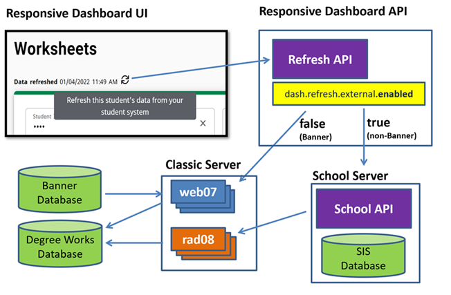
Configuration
- BRIDGNEW Shepherd key - allows user to bridge students from Banner who are not yet in Degree Works.
- SDREFRES Shepherd key - provides user access to see the refresh data and time.
- SDREFBTN Shepherd key - provides user access to the refresh button.
- Review the following Shepherd settings to ensure they are configured correctly:
- dash.refresh.external.enabled
- dash.refresh.external.password
- dash.refresh.external.url
- dash.refresh.external.username
Tools
Functions that are specific to the student context (that is, Worksheets, Exceptions, and Plans) have a common set of tools that are accessible on each page.
Using a set of icons in the upper right, the user can print audits, get student or advisor contact information, use GPA calculators, view class history data, and manage notes and petitions.
Contact
The Contacts icon opens a dialog that displays the student and advisors' names and email addresses.
Students see their advisors. Non-students see the student contact information, and if they have the CONTADVR key, they also see the student's advisors. The contact icon displays only if the user has the CONTACT key.
Clicking the email address opens the user’s default email program with the contact’s email address loaded in the To: field.
You can show the advisor-type field from the rad_attach_code on the ADVISOR rad_goalData_dtl record, which is populated from SGRADVR_ADVR_CODE for Banner schools. Non-Banner schools can bridge it. By setting up the properties, you can show either the code (for example, PRIM) or show a description (for example, Primary advisor) for each advisor-type. See the dash.tools.contact properties in DashboardMessages.properties to see how to show the advisor-type.
Configuration
- Contact window - CONTACT
- View advisors - CONTADVR (not needed for students)
GPA Calculator
The GPA Calculators are located under the More menu. There are three different GPA calculators: Graduation, Term, and Advice.
The calculators can help students set realistic goals at the beginning of the term or academic career and calculate their end-of-term GPA using actual academic information.
If a student's most recent audit does not include in-progress classes, a new audit will be run but not saved when the user selects this tool.
Configuration
- Review the Add credits to student's total graded credits attempted and Use in GPA Calculators flags in STU385 to ensure they are configured correctly.
- Review the following Shepherd settings to ensure they are configured correctly:
- dash.gpaCalculator.decimals
- dash.gpaCalculator.round
- Access to the following is granted if the user has the specified Shepherd key:
- GPA Calculators - SDGPACLC
- Graduation Calculator - SDGPAGRD
- Term Calculator - SDGPATRM
- Advice Calculator - SDGPAADV
Graduation Calculator
This calculator gives the student a general view of the average GPA they will need to earn over their final "X" credits to achieve their desired GPA.
In some cases, the student may be informed that their desired GPA is not possible to achieve, considering their number of credits remaining. This calculator helps students to set long-term general goals.
Graduation Calculator inputs
- Current GPA (defaults from the rad_cum_gpa on the rad_term_dtl)
- Credits Remaining (defaults from the most recent academic audit)
- Credits Required (defaults from the most recent academic audit)
- Desired GPA
Term Calculator
The term calculator allows students to predict what their GPA will be after completing the current term.
If the student has coursework in the current term on the most recent academic audit, these classes and their credits automatically load into the calculator. Classes can be deleted, and additional classes can be added.
Term Calculator inputs
- Current GPA (defaults from rad_cum_gpa on the rad_term_dtl)
- GPA credits attempted (from rad_term.rad_cum_gr_att)
- Class information
- In-progress classes
Advice Calculator
Use this calculator to determine how a student can raise or lower their GPA using actual grades as advice.
Note that the Add credits to student's total graded credits attempted flag in STU385 is used to filter out grades. Only those grades with Add credits to student's total graded credits attempted = Y are used in the Advice Calculator, allowing you to exclude P grades, for example.
Advice Calculator inputs
- Current GPA (defaults from rad_cum_gpa on the rad_term_dtl)
- GPA credits attempted (from rad_term.rad_cum_gr_att)
- Desired GPA
Class History
Class History is located under the More menu. It is a listing of all the student’s coursework, organized by term.
By enabling dash.classHistory.auditSection.enabled, you will see where each class that is not applying to a requirement appears in the audit.
By enabling dash.classHistory.termSummary.enabled, after each term will appear both a set of term and cumulative calculated values. Any item in the summary can be disabled by localizing the properties file. See the dash.classHistory.termSummary section of DashboardMessages.properties.
If a student's most recent audit does not include in-progress classes, a new audit will be run but not saved when the user selects this tool.
Configuration
- Review the dash.classHistory.auditSection.enabled and dash.classHistory.termSummary.enabled settings to ensure they are configured correctly.
- Access to Class History is granted if the user has the SDXML31 Shepherd key.
Petitions
Located under the More menu, Petitions allow users to enter requests for exceptions.
A petition can be a request to have a particular requirement modified or waived for a particular student.
A preview of all petitions that have been entered for the student displays initially. The list can be filtered by the petition status, either awaiting approval, approved, applied as exception, or rejected. The date the petition was created, the author of the petition and the petition status will display for each petition.
Click Add a new petition to add a new petition. After you have entered the text for the petition, click Save petition to save the petition to the database. A message will appear telling you your petition was added successfully. All new petitions have a default status of awaiting approval when first created. After a petition is created, it can be acted upon by registrar-class users or users having access to Exceptions Management.
To see all the text of a petition, select View petition from the action menu in the right corner of a petition. Click Back to go back to the petition list. From this dialog, you can also edit or delete the petition.
To modify a petition, select Edit petition from the action menu in the right corner of a petition. Click Save petition to save your changes. Click Cancel to discard your changes and go back to the petition list. From this dialog, you can also delete the petition.
To delete a petition, select Delete petition from the action menu in the right corner of a petition. Click Delete petition to delete the petition. Click Cancel to keep the petition and go back to the petition list.
Petitions can be configured to display on an audit. If enabled, they will be in the Notes section.
Configuration
- Review the Show Petitions flag in RPT036 to ensure it is configured correctly.
- Access to the following is granted if the user has the specified Shepherd key:
- Petitions - SDPETVEW
- Add petitions - SDPETADD
- Modify petitions - SDPETMOD
- Delete petitions - SDPETDEL
Petition email notification (petsend)
Degree Works can be configured to send an email that notifies the recipient that there are new petitions either waiting approval or approved petitions waiting to be applied as exceptions.
However, if you are a Banner school using Workflow to manage petitions you will not want to use this email notification as Workflow takes care of this for you.
The petsend Perl script is used to configure where the notification email is to be sent. Below is an example on how to run petsend to send notification emails:
Example:
petsend someaddress@yourschool.edu WAITING
petsend someaddress@yourschool.edu APPROVED
The Reply To email address is set to the same email address as the Send To address by default as shown below:
$ReplyToEmailAddress = $ToEmailAddress;
To modify the Reply To e-mail address, change the $ToEmailAddress in the petsend script to the e-mail address you want replies to be sent to as shown below:
$ReplyToEmailAddress = "computer_center\@yourschool.edu";
You can also configure petsend to carbon copy (CC) one or more individuals at your institution.
To activate the CC function, modify the following line with the e-mail address of the person you want to CC:
$CC = "someone_else\@yourschool.edu";
The petsend job can be configured not to send a notification e-mail if there are no petitions either waiting approval or waiting to be applied. To disable sending e-mails under these circumstances, change the value for SEND_ZERO_PETITIONS_MSG to "N" as shown below:
$SEND_ZERO_PETITIONS_MSG = "N";
You can edit the content of the notification e-mail by modifying the DefineSubjectAndBody function of the petsend script.
Petition approval with Banner Workflow
Notes
Located under the More menu, Notes allows users to document academic advising on student records.
Users can mark notes as internal so students do not see them. Notes made available to the student appear at the bottom of audit reports in a Notes section.
The notes preview screen shows a consolidated view of all notes entered for a student. Each note includes the creation date and time, the name of the author, and an indicator of whether the note is internal. If someone modifies a note, the preview also shows the modification date, time, and the identity of the user who made the changes.
Click Add a new note to add a new note. Enter your note text or select a predefined note if this functionality has been enabled. Users with the SDNTECHG key can also enter additional text to the predefined note in the note field. To make a note internal, select the Not available to student check box if this functionality has been enabled. Click Save note to save the note to the database. A message will appear stating your note was added successfully. If the user has access, a new academic audit will be automatically generated when adding a note.
To see all the text of a note, select View note from the action menu in the right corner of a note. Click Back to go back to the note list. From this dialog, you can also edit or delete the note.
To modify a note, select Edit note from the action menu in the right corner of a note. Click Save note to save your changes. Click Cancel to discard your changes and go back to the note list. From this dialog, you can also delete the note.
To delete a note, select Delete note from the action menu in the right corner of a note. Click Delete note to delete the note. Click Cancel to keep the note and go back to the note list.
Configuration
- Review CFG071 to ensure it is configured correctly.
- Review the following Shepherd settings to ensure they are configured correctly:
- dash.notes.internal.enabled
- dash.notes.predefined.enabled
- dash.notes.tiedToSchool.enabled
- dash.notes.tiedToDegree.enabled
- Access to the following is granted if the user has the specified Shepherd key:
- Notes - SDNOTES
- View notes - SDNTEVUE
- Add notes - SDNTEADD
- Modify notes - SDNTEMOD
- Delete notes - SDNTEDEL
- Add text to predefined notes - SDNTECHG
- Automatically run a new audit after adding a note - SDNTERUN
Worksheets
A user can view and run a variety of audit reports in Worksheets.
Each audit report displays specific information about students and their progress towards degree completion. After a student is selected, the most recent audit for the student will load automatically. If the core.audit.process.runOnScribeChanges.enabled Shepherd setting is true, the auditor engine will check to see if any changes were made to the Scribe blocks in the student's audit after the last audit was generated. A new audit will be run if changes are detected.
A PDF of an audit can be generated by clicking on the Print icon that displays on an audit. A dialog prompting for the page dimensions will open, and after making a selection, the generated PDF will display in a browser window. The user can choose to send the output to a printer, save the output as a PDF, or any other option available in the browser. The options in the page dimensions dialog are defined in SYS100. The text and label properties in the PDF audit can be localized in PDFAuditMessages.properties.
Configuration
- Review SYS100 to ensure it is configured correctly.
- Review the following Shepherd settings to ensure they are configured correctly:
- core.audit.printView.dimensions.defaultValue
- core.audit.printView.repeat.codes
- core.audit.printView.showNotesInternal
- core.audit.printView.showStudentId
- core.audit.printView.studentHeader.custom.items
- core.audit.printView.studentHeader.goals.items
- core.audit.process.runOnScribeChanges.enabled
- Access to Worksheets is granted if the user has the SDAUDIT Shepherd key. The SDAUDREV key is also required to view the actual worksheet.
Academic
The Academic audit is the primary audit used to track and evaluate a student’s progress towards a degree.
Academic Audit
The academic audit is a series of blocks that define degree and program requirements.
All blocks initially load as expanded in a desktop view; for mobile users all blocks initially load as collapsed. You can manually expand or collapse individual blocks by clicking the arrow in the upper right of each block or expand/collapse all block by clicking the link at the top of the audit.
While the content of the academic audit is driven by the requirements defined in Scribe, the appearance is controlled by the settings in RPT036 for each report format. For example, Show Label controls whether the completeness icons and labels should display on the audit, while Show Legend and Show Disclaimer control whether to display the legend and disclaimer on the audit. You should review all of these flags to ensure they are set correctly for the audit formats you use.
The default behavior for block header data in each block type can be configured in SCR004. Additionally, HeaderTags can be scribed to override the flags as needed.
Configuration
- Review RPT036 to ensure it is configured correctly for WEB30, WEB31, WEB33, and WEB36.
- Review the Show.* flags in SCR004 for each block type.
Format
The Format drop-down allows the user to select in which format the audit report should be displayed.
There are several different report formats available, although not all formats are appropriate for all user classes. For example, many schools choose to not make the Registrar Report available to students. These report formats can be configured by the client to meet their respective needs.
Configuration
- Registrar Report - SDWEB30
- Student View - SDWEB31
- Graduation Checklist - SDWEB33
- Registration Checklist - SDWEB36
Degree progress
Degree progress can be measured in percentage of degree requirements met, the percentage of credits completed, and the overall GPA.
The values are calculated by the auditor based on the requirements and qualifiers defined in the audit’s blocks. For each report format, displaying the requirements and credits progress and overall GPA is configurable.
For more information, see the Percent complete calculation topic.
Configuration
Review the Show Progress Bar Requirements, Show Progress Bar Credits, and Show Overall GPA flags in RPT036 to ensure they are configured correctly for each report.
Process audit
With access, a user can generate a new audit by clicking the Process button.
Options to select whether to include in-progress and preregistered in addition to the default selection for these options can also be configured. Note that if the in-progress and preregistered check boxes are configured to not display but the user can still process a new audit, the auditor will follow the default value settings to determine whether in-progress and preregistered classes should be included.
Configuration
- Review the following Shepherd settings to ensure they are configured correctly:
- dash.audit.process.inprogress.defaultValue
- dash.audit.process.inprogress.enabled
- dash.audit.process.preregistered.defaultValue
- dash.audit.process.preregistered.enabled
- dash.audit.repeat.codes
- Access to process an audit is granted if the user has the SDAUDRUN Shepherd key.
Historic audits
View Historic Audits allows a user to view historical audits for a student.
The maximum number of historical audits to keep per student per School/Degree combination can be configured. With access, a user can view historic audits by selecting the audit to view from the drop-down and it will load using the currently selected report format.
Configuration
- Review the Audit History Depth flag in CFG020 DAP14 to ensure it is configured correctly.
- Access to view historic audits is granted if the user has the SDHIST Shepherd key.
Diagnostics
Diagnostics allows a user to view additional information about an audit and can be used to troubleshoot audit issues.
With access, a user can view diagnostics by clicking the link. A new tab or window with the diagnostics audit will open.
Configuration
Access to Diagnostics is granted if the user has the SDXML30 Shepherd key.
Student Data
Student Data is a report of what is in the Degree Works database for the selected student.
This can be useful in troubleshooting issues with the audit. With access, a user can view student data by clicking on the link. A new tab or window with the student data report will open.
The data reflects the student's current set of classes and curriculum and other data saved in the database. If you are viewing a historic audit and click the Student Data link, the data shown will likely not match the data showing on the historic audit.
Configuration
Access to Student Data is granted if the user has the SDXML32 Shepherd key.
Save audit
Audits may be saved or “frozen” so they do not get deleted when the maximum CFG020 DAP14 Audit History Depth has been reached.
Frozen audits do not count against the history depth value. With access, a user can freeze an audit by clicking Save audit. A dialog will open that prompts for the Freeze type and a Description. When the user clicks Save, the audit will be saved in the database with the specified freeze type and description, and the screen will be updated with the user who saved the audit, the date, the freeze type, and description. For more information, see the Freeze audits topic.
Configuration
- Freeze audits - AUDFREEZ
- Add a description - AUDDESCR
Delete audit
Audits that have been saved or frozen can be deleted if the user has access to do so.
Clicking the Delete audit link opens a confirmation dialog. If the user clicks Delete, the audit will be deleted from the database. If the user clicks Cancel, Worksheets appears without deleting the audit.
Configuration
Access to delete audits is granted if the user has the SDAUDDEL Shepherd key.
What-If
What-If audits allow you to process speculative degree audits for a student using their current class history.
You can audit a student against the requirements for a different major, minor, degree, catalog year, or other goal data and add classes that may be taken in the future. Responsive Dashboard can be configured to use curriculum rules to filter, use no filtering or use a specific form of filtering for the goal data drop-downs. The core.whatIf.filterMode controls which type of filtering will occur in both the worksheets tab and in the planner.
Configuration
- Review the core.whatIf.filterMode Shepherd setting to ensure it is configured correctly:
- Access to What-If is granted if the user has the SDWHATIF Shepherd key.
What-If Analysis with no filtering
When Responsive Dashboard is configured for no filtering rules (core.whatIf.filterMode = N), standard UCX filtering will be used in the What-If Analysis drop-downs.
Level, Degree, and Catalog year are required goal data items for a What-If and will default to the student’s data. The options that display in Areas of study are configurable.
Catalog Year will always display and is a required field. The catalog year drop-down will be populated with all STU035 values with Show in What-If flag = Y, but the student’s current catalog year will load as the default value.
By default, the catalog year in the Program area is used for all goal data items in Areas of study and Additional areas of study on the What-If audit. Users can be given the option of selecting different catalog years for individual goal data items by setting the core.whatIf.enableGoalCatalogYear Shepherd setting to true. When enabled, a catalog year drop-down displays adjacent to the goal data item. If a catalog year is selected, this will be passed along to the auditor engine. If left blank, the catalog year selected in the Program area will be used.
Degree will always display and is a required field. The degree drop-down will be populated with all STU307 values with Show in What-If flag = Y, but the student’s current degree will load as the default value.
Level can be configured to display and is a required field if displayed. The level drop-down will be populated with all STU350 values with Show in What-If flag = Y, but the student’s current level will load as the default value.
Program can be configured to display. The program drop-down will be populated with all STU316 values with Show in What-If flag = Y.
Major can be configured to display and can be configured to be a required field. The values in the major drop-down will be all AUD027 values.
Minor can be configured to display. The minor drop-down will be populated with all AUD029 values.
College can be configured to display. The college drop-down will be populated with all STU560 values with Show in What-If flag = Y.
Concentration can be configured to display. The concentration drop-down will be populated with all STU563 values with Show in What-If flag = Y.
Specialization can be configured to display. The specialization drop-down will be populated with all STU323 values with Show in What-If flag = Y.
Liberal Learning can be configured to display. The liberal learning drop-down will be populated with all STU324 values with Show in What-If flag = Y.
- core.whatIf.showProgramAdditional
- core.whatIf.showMajor
- core.whatIf.showMinor
- core.whatIf.showCollege
- core.whatIf.showConcentration
- core.whatIf.showSpecialization
- core.whatIf.showLiberalLearning
Configuration
- Review AUD027 and AUD029 to ensure they are configured correctly.
- Review the Show in What-If flag in the following tables to ensure it is configured correctly: STU035 (Catalog Year), STU307 (Degree), STU350 (Level), STU316 (Program), STU560 (College), STU563 (Concentration), STU323 (Specialization), and STU324 (Liberal learning).
- Review the following Shepherd settings to ensure they are configured correctly:
- core.whatIf.filtermode
- core.whatIf.majorRequired
- core.whatIf.showCollege
- core.whatIf.showConcentration
- core.whatIf.showLiberalLearning
- core.whatIf.showMajor
- core.whatIf.showMinor
- core.whatIf.showProgramPrimary
- core.whatIf.showSchool
- core.whatIf.showSpecialization
What-If Analysis with curriculum-rule filtering
When Responsive Dashboard is configured to use curriculum rules (core.whatIf.filterMode = R), the values that appear in the drop-down lists will come from the curriculum rules loaded in rad_currrule_dtl.
The Catalog year and Degree drop-downs will always display, while Campus, Program, Level, College, Major, Concentration, and Minor can be configured to display. Unless otherwise noted, the student’s current goal data will initially populate the drop-downs if it exists on a valid curriculum rule.
Catalog Year will always display in the Program area and is a required field. The catalog years that are in the drop-down come from the codes in STU035 with Show in What-If picklist = Y. If core.whatIf.defaultCatalogYear is configured, this value will initially be displayed instead of the student’s catalog year. Additionally, when core.whatIf.changeCatalogYear is false the default catalog year cannot be changed.
Campus will display in the Program area when core.whatIf.showCampus is true and will be a required field. The values in the campus drop-down will only be those from STU576 with Show in What-If picklist = Y and are on the selected curriculum rule.
Level will display in the Program area when core.whatIf.showSchool is true and will be a required field. The values in the level drop-down will only be those from STU350 with Show in What-If flag = Y and are on the selected curriculum rule.
College will display in the Program area when core.whatIf.showCollege is true and will be a required field. If core.whatIf.showProgramAdditional = N or core.whatIf.mustUsePrimaryRule = D or N, the college will also display in Additional areas of study. The values in the college drop-down will only be those from STU560 with Show in What-If flag = Y and are on the selected curriculum rule. When core.whatIf.degreeBeforeCollege is false, college will display before degree and drive the degree in the curriculum rule filtering.
Degree will always display in the Program area and is a required field. If core.whatIf.showProgramAdditional or core.whatIf.mustUsePrimaryRule are false, the Degree will also display in Additional areas of study. The values in the degree drop-down will only be those from STU307 with Show in What-If flag = Y and are on the selected curriculum rule. When core.whatIf.degreeBeforeCollege is true, degree will display before college and drive the college in the curriculum rule filtering. Note that the what-if audit would only include the degree block based on degree selected in the Program area, even when there’s a different degree selected in Additional areas of study.
Program will display in the Program area when core.whatIf.showProgramPrimary is true. It will be a required field and the Level, Degree, and College (if displayed) will display but be inactive. The program may also be separately configured to display in Additional areas of study when core.whatIf.showProgramAdditional is true. If configured to display in Additional areas of study, when core.whatIf.programAdditionalRequired is true the program will be a required field. The values in the program drop-down will only be those from STU316 with Show in What-If flag = Y and are on the selected curriculum rule.
Major will display in both Areas of study and Additional areas of study when core.whatIf.showMajor is true. It will be a required field in Areas of study when core.whatIf.majorRequired is true. The values in the major drop-down will only be those from AUD027 that are on the selected curriculum rule.
Concentration will display in both Areas of study and Additional areas of study when core.whatIf.showConcentration is true. The concentration in Areas of study can be required if the selected major has AUD027 Concentration Required = Y. The values in the concentration drop-down will only be those from STU563 with Show in What-If flag = Y and are on the selected curriculum rule. When core.whatIf.concTiedToMajor is true, the concentration drop-down in Areas of study will be populated with only the concentration values on the curriculum rule where the rad_attach_code = MAJOR and rad_attach_value is equal to the selected major. When core.whatIf.showAllConcsInPrimary = true, if there are no concentrations attached to the selected curriculum rule in Areas of study, all values in STU563 where STU563 Show in What-If Picklist= Y will be displayed in the concentration drop-down. When core.whatIf.showAllConcsInSecondary = true, if there are no concentrations attached to the selected curriculum rule in Additional areas of study, all values in STU563 where STU563 Show in What-If Picklist= Y will be displayed in the concentration drop-down.
Minor will display in both Areas of study and Additional areas of study when core.whatIf.showMinor is true. The values in the minor drop-down will only be those from AUD029 that are on the selected curriculum rule. When core.whatIf.showAllMinors is true, if there are no minors attached to the selected curriculum rule in Areas of study and Additional areas of study, all values in AUD029 will be displayed in the minor drop-down.
Configuration
- Review AUD027 and AUD029 to ensure they are configured correctly.
- Review the Show in What-If flag in the following tables to ensure it is configured correctly: STU035 (Catalog year), STU307 (Degree), STU316 (Program), STU350 (Level/School), STU560 (College), STU563 (Concentration), STU576 (Campus).
- Review the following Shepherd settings to ensure they are configured correctly:
- core.whatIf.changeCatalogYear
- core.whatIf.concTiedToMajor
- core.whatIf.defaultCatalogYear
- core.whatIf.degreeBeforeCollege
- core.whatIf.filterMode
- core.whatIf.majorRequired
- core.whatIf.mustUsePrimaryRule
- core.whatIf.programAdditionalRequired
- core.whatIf.showAllConcsInPrimary
- core.whatIf.showAllConcsInSecondary
- core.whatIf.showAllMinors
- core.whatIf.showCampus
- core.whatIf.showCollege
- core.whatIf.showConcentration
- core.whatIf.showMajor
- core.whatIf.showMinor
- core.whatIf.showProgramAdditional
- core.whatIf.showProgramPrimary
- core.whatIf.showSchool
What-If Analysis with degree-drives-major filtering
When Responsive Dashboard is configured for degree-drives-major (core.whatIf.filterMode = D), the Major drop-down will be populated with only the values that are valid for the selected Degree.
Catalog Year will always display and is a required field. The catalog year drop-down will be populated with all STU035 values with Show in What-If flag = Y, but the student’s current catalog year will load as the default value.
By default, the catalog year in the Program area is used for all goal data items in Areas of study and Additional areas of study on the What-If audit. Users can be given the option of selecting different catalog years for individual goal data items by setting the core.whatIf.enableGoalCatalogYear Shepherd setting to true. When enabled, a catalog year drop-down displays adjacent to the goal data item. If a catalog year is selected, this will be passed along to the auditor engine. If left blank, the catalog year selected in the Program area will be used.
Degree will always display and is a required field. The degree drop-down will be populated with all STU307 values with Show in What-If flag = Y, but the student’s current degree will load as the default value.
Level can be configured to display and is a required field if displayed. The level drop-down will be populated with all STU350 values with Show in What-If flag = Y, but the student’s current level will load as the default value.
Program can be configured to display. The program drop-down will be populated with all STU316 values with Show in What-If flag = Y.
Major will always show and will be a required field regardless of the core.whatIf.showMajor and core.whatIf.majorRequired settings. The values in the major drop-down will be all AUD027 values that have the selected degree in an AUD027 Degree Filter* field.
Concentration can be configured to display based on core.whatIf.showConcentration. The concentration drop-down will be populated with all STU563 values with Show in What-If flag = Y. However, if core.whatIf.filterConcentrationByMajor is true, the concentration drop-down will be populated based on the selected major and the filter fields in STU563 and the concentration will show regardless of the core.whatIf.showConcentration setting and the STU563 Show in What-If flag. If the selected major is not found in any of the filter fields in STU563 then the concentration drop-down will be empty.
Minor can be configured to display. The minor drop-down will be populated with all AUD029 values.
College can be configured to display. The college drop-down will be populated with all STU560 values with Show in What-If flag = Y.
Specialization can be configured to display. The specialization drop-down will be populated with all STU323 values with Show in What-If flag = Y.
Liberal Learning can be configured to display. The liberal learning drop-down will be populated with all STU324 values with Show in What-If flag = Y.
Configuration
- Review the Degree Filter 1 – 5 fields in AUD027 to ensure they are configured correctly.
- Review the Major Filter 1 – 4 fields in STU563 to ensure they are configured correctly; only used if core.whatIf.filterConcentrationByMajor is enabled.
- Review the Show in What-If flag in the following tables to ensure it is configured correctly: STU035 (Catalog Year), STU307 (Degree), STU350 (Level), STU316 (Program), STU560 (College), STU563 (Concentration), STU323 (Specialization), and STU324 (Liberal learning).
- Review the following Shepherd settings to ensure they are configured correctly:
- core.whatIf.filterMode
- core.whatIf.filterConcentrationByMajor
- core.whatIf.showCollege
- core.whatIf.showConcentration
- core.whatIf.showLiberalLearning
- core.whatIf.showMinor
- core.whatIf.showProgramPrimary
- core.whatIf.showSchool
- core.whatIf.showSpecialization
What-If Analysis with major-drives-degree/school/college filtering
When Responsive Dashboard is configured for major-drives-degree (core.whatIf.filterMode=M), the Degree, Level (aka School) and College drop-down will be populated with only the values that are valid for the selected Major.
Catalog Year will always display and is a required field. The catalog year drop-down will be populated with all STU035 values with Show in What-If flag = Y, but the student’s current catalog year will load as the default value.
By default, the catalog year in the Program area is used for all goal data items in Areas of study and Additional areas of study on the What-If audit. Users can be given the option of selecting different catalog years for individual goal data items by setting the core.whatIf.enableGoalCatalogYear Shepherd setting to true. When enabled, a catalog year drop-down displays adjacent to the goal data item. If a catalog year is selected, this will be passed along to the auditor engine. If left blank, the catalog year selected in the Program area will be used.
Major will always show and will be a required field regardless of the core.whatIf.showMajor and core.whatIf.majorRequired settings. The major drop-down will be populated with all AUD027 values. After a major has been selected the Degree, School, and College fields on AUD027 will be used to return the appropriate values for the respective UCX tables: STU307, STU350, STU560. The Degree, Level, and College drop-downs will show as disabled.
Note that an error will display when the following conditions are encountered:
- The Degree field is blank in AUD027 for the selected major.
- The School field is blank in AUD027 for the selected major and if core.whatIf.showSchool= true.
- The College field is blank in AUD027 for the selected major and if core.whatIf.showCollege= true.
Level can be configured to display based on core.whatIf.showSchool. If the core.whatIf.showSchool setting is false the Level drop-down will not display and the student’s current level will be used when running the what-if audit.
College can be configured to display based on core.whatIf.showCollege. If the core.whatIf.showCollege setting is false the College drop-down will not display and the college configured in AUD027 for the selected major will be ignored. If the core.whatIf.showCollege setting is true college will be a required field.
Concentration can be configured to display based on core.whatIf.showConcentration. The concentration drop-down will be populated with all STU563 values with Show in What-If flag = Y. However, if core.whatIf.filterConcentrationByMajor is true the concentration drop-down will be populated based on the selected major and the filter fields in STU563 and the concentration will show regardless of the core.whatIf.showConcentration setting and the STU563 Show in What-If flag. If the selected major is not found in any of the filter fields in STU563 then the concentration drop-down will be empty.
Program can be configured to display. The program drop-down will be populated with all STU316 values with Show in What-If flag = Y.
Minor can be configured to display. The minor drop-down will be populated with all AUD029 values.
Specialization can be configured to display. The specialization drop-down will be populated with all STU323 values with Show in What-If flag = Y.
Liberal Learning can be configured to display. The liberal learning drop-down will be populated with all STU324 values with Show in What-If flag = Y.
Configuration
- Review the Degree, School, and College fields in AUD027 to ensure they are configured correctly.
- Review the Major Filter 1 – 4 fields in STU563 to ensure they are configured correctly; only used if core.whatIf.filterConcentrationByMajor is enabled.
- Review the Show in What-If flag in the following tables to ensure it is configured correctly: STU035 (Catalog Year), STU307 (Degree), STU350 (Level), STU316 (Program), STU560 (College), STU563 (Concentration), STU323 (Specialization), and STU324 (Liberal learning).
- Review the following Shepherd settings to ensure they are configured correctly:
- core.whatIf.filterMode
- core.whatIf.filterConcentrationByMajor
- core.whatIf.showCollege
- core.whatIf.showConcentration
- core.whatIf.showLiberalLearning
- core.whatIf.showMinor
- core.whatIf.showProgramPrimary
- core.whatIf.showSchool
- core.whatIf.showSpecialization
What-If Analysis with major-drives-college filtering
When Responsive Dashboard is configured for major-drives-college (core.whatIf.filterMode = C), the College drop-down will be populated with only the values that are valid for the selected Major.
Catalog Year will always display and is a required field. The catalog year drop-down will be populated with all STU035 values with Show in What-If flag = Y, but the student’s current catalog year will load as the default value.
By default, the catalog year in the Program area is used for all goal data items in Areas of study and Additional areas of study on the What-If audit. Users can be given the option of selecting different catalog years for individual goal data items by setting the core.whatIf.enableGoalCatalogYear Shepherd setting to true. When enabled, a catalog year drop-down displays adjacent to the goal data item. If a catalog year is selected, this will be passed along to the auditor engine. If left blank, the catalog year selected in the Program area will be used.
Degree will always display and is a required field. The degree drop-down will be populated with all STU307 values with Show in What-If flag = Y, but the student’s current degree code will load as the default value.
Level can be configured to display based on core.whatIf.showSchool. The level drop-down will be populated with all STU350 values with Show in What-If flag = Y. If core.whatIf.showSchool is false the Level drop-down will not display and the student’s current level will be used when running the what-if audit.
Major will always show and will be a required field regardless of the core.whatIf.showMajor and core.whatIf.majorRequired settings. The major drop-down will be populated with all AUD027 values. After a major has been selected the College fields on AUD027 will be used to return the appropriate values for the STU560. The College drop-down will show as disabled.
Note that an error will display if the College field is blank in AUD027 for the selected major.
College will always show and will be a required field regardless of the core.whatIf.showCollege setting.
Concentration can be configured to display based on core.whatIf.showConcentration. The concentration drop-down will be populated with all STU563 values with Show in What-If flag = Y. However, if core.whatIf.filterConcentrationByMajor is true the concentration drop-down will be populated based on the selected major and the filter fields in STU563 and the concentration will show regardless of the core.whatIf.showConcentration setting and the STU563 Show in What-If flag. If the selected major is not found in any of the filter fields in STU563 then the concentration drop-down will be empty.
Program can be configured to display. The program drop-down will be populated with all STU316 values with Show in What-If flag = Y.
Minor can be configured to display. The minor drop-down will be populated with all AUD029 values.
Specialization can be configured to display. The specialization drop-down will be populated with all STU323 values with Show in What-If flag = Y.
Liberal Learning can be configured to display. The liberal learning drop-down will be populated with all STU324 values with Show in What-If flag = Y.
Configuration
- Review the College fields in AUD027 to ensure they are configured correctly.
- Review the Major Filter 1 – 4 fields in STU563 to ensure they are configured correctly; only used if core.whatIf.filterConcentrationByMajor is enabled.
- Review the Show in What-If flag in the following tables to ensure it is configured correctly: STU035 (Catalog Year), STU307 (Degree), STU350 (Level), STU316 (Program), STU560 (College), STU563 (Concentration), STU323 (Specialization), and STU324 (Liberal learning).
- Review the following Shepherd settings to ensure they are configured correctly:
- core.whatIf.filterMode
- core.whatIf.filterConcentrationByMajor
- core.whatIf.showConcentration
- core.whatIf.showLiberalLearning
- core.whatIf.showMinor
- core.whatIf.showProgramPrimary
- core.whatIf.showSchool
- core.whatIf.showSpecialization
Future classes
The user can also add courses that may be taken in the future to see how they might apply to the student’s current program or a program they may be considering.
A course Subject and course Number must be entered. Note that there is no validation on these fields so care should be taken to enter them correctly. Click Add to add the course to the What-If Analysis criteria. An unlimited number of courses can be added.
If the user wants to see how the future classes will apply to their current program, they can check Use current curriculum. The Program and Areas of study sections will collapse and the student’s current goal data will be used to generate the what-if audit with the manually added future classes.
The Future Classes section will display only if the core.whatIf.futureClasses.enabled Shepherd setting is enabled. For more information, see the core.whatIf topic.
Historic audits
View historic what-if audits allows a user to view historical What-If audits for a student.
The maximum number of historical What-If audits to keep per student per School/Degree combination can be configured. If the user has access to view historic What-If audits, they can select the audit they want to view from the drop-down and it will load using the currently selected report format.
Configuration
- Review the Maximum What-If audits per student flag in CFG020 DAP14 to ensure it is configured correctly.
- Access to view historic audits is granted if the user has the SDWIFHIS Shepherd key.
Save audit
Audits may be saved or “frozen” so they do not get deleted when the CFG020 DAP14 Maximum What-If audits per student value has been reached.
Frozen What-If audits do not count against the What-If history count value. Depending on the user’s access, when they click Save audit a dialog will open that prompts for the Freeze type and a Description. When the user clicks Save, the What-If audit will be saved in the database with the specified freeze type and description, and the screen will be updated with the user who saved the audit, the date, the freeze type and description. For more information, see the Freeze audits topic.
Configuration
- Freeze What-If audits - WIFFREEZ
- Add descriptions - WIFDESCR
Delete audit
What-If audits that have been saved or frozen can be deleted if the user has access to do so.
Clicking the Delete audit link opens a confirmation dialog. If the user clicks Delete, the What-If audit will be deleted from the database. If the user clicks Cancel, they will be returned to Worksheets without deleting the audit.
Configuration
Access to delete audits is granted if the user has the SDWIFDEL Shepherd key.Athletic Eligibility
Athletic Eligibility audits allow you to process degree audits specifically for your student athletes.
Rules for Athletic Eligibility are built using Scribe, and processing an athlete’s athletic data against these requirement blocks will verify if a student is eligible to participate in the sport, in accordance with rules laid out by the NCAA, NJCAA, and other organizations.
ATHLETE blocks house athletic eligibility requirements. You can create a single ATHLETE block or create multiple to separate the different eligibility rules. AUD031 controls the ATHLETE block values. The Athletic Eligibility Scribe templates can help you quickly and easily create your ATHLETE blocks. For more information, see Athletic Eligibility audit rule examples.
When running an Athletic Eligibility audit, the In-progress check box should always be selected as the current classes are required, and the Preregistered check box should always be deselected. Future classes are never wanted for an athletic eligibility audit. Athletic Eligibility history follows the same CFG020 DAP14 Audit History Depth setting as academic audits when saving audits. If the depth is set to 3, you will have 3 academic audits and 3 athletic audits. However, you can choose to save an unlimited number of frozen audits because they are not impacted by this setting. When an Athletic Eligibility audit is run, all ATHLETE blocks are used. The catalog year and other secondary tags are checked. The ATHLETE blocks appear on the worksheet sorted by their block titles. You can alter the block title to get the blocks in the order you want them to appear. The previous term is set to the term before the active term when the active term is a summer term. When you have chosen to include in-progress classes in the audit, the previous term is set to the active term. Otherwise the previous term is the term before the active term. Including in-progress classes allows you to forecast for future eligibility.
The degree progress on the Athletic Eligibility audit is directly related to the calculations performed for the 40-60-80 rule and accounts for elective credits allowed and needed. The data feeding this progress bar is specifically calculated for athletic eligibility and therefore differs from the data feeding the progress bar on the academic audit worksheet.
The top of the Diagnostics Report can be very helpful in understanding why rules in your ATHLETE blocks were marked as complete or as unsatisfied. The type of data is listed on the far left of this grid. Those types in all UPPERCASE letters indicate those that are directly related to a Scribe reserved word you may use in an IF-statement. Those in MixedCase are used in internal calculations and appear to assist you in understanding the data.
- Credits – contains the credits value for this type
- Text – describes the data for this type
- Term – the term value used in this calculation
- TermType – the type of term as specified on UCX-STU016
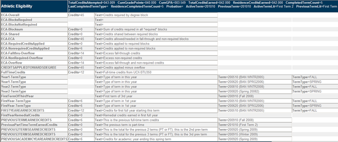
In addition to the data above, the Diagnostics Report for athletic audits also contains a summary of classes by term. When applicable, a notation next to each term appears to connect the information above to a specific term.
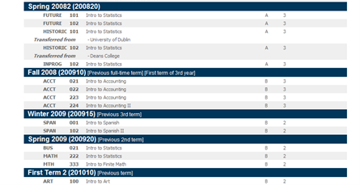
Configuration
- Review BAN080 to ensure the required Athletic Eligibility records exist. For more information, see Athletic Eligibility audit data setup.
- Review AUD031 - Athletic Eligibility types
- Review RPT036 to ensure it is configured correctly for WEB55 and WEB56.
- Review SCR002 to ensure the required Athletic Eligibility records exist. For more information, see Athletic Eligibility audit data setup.
- Review STU016 to ensure that the Term Type field is set to "SUMMER" for summer terms, “FALL” for fall terms, “SPRING” for spring terms and “WINTER” for winter terms.
- Review STU350 to ensure that the Full-time Credits field is populated for each school
- Review the
dash.audit.athletic.football.enabledShepherd setting to ensure it is configured correctly. - Access to the following is granted if the user has the specified Shepherd key:
- Athletic Eligibility - SDATHAUD
- Athletic Eligibility Report - SDWEB55
- Athletic and Academic Report - SDWEB56
- Delete audits - SDATHDEL
- View athletic eligibility audits - SDATHREV
- View historic athletic eligibility audits - SDATHHIS
- Process athletic eligibility audits - SDATHRUN
Athletic Eligibility audit data setup
The Athletic Eligibility audit requires specific data to be bridged into the Degree Works database.
At least four values must be bridged to the rad_custom_dtl:
- ACADSTANDING – indicates if the student is in good academic standing.
- AEAFIRSTTERM – first official term that can be counted; mapped from first date of attendance; this date is stored on SGRATHE for Banner schools.
- AEAFIRSTDATE – first official date of attendance; this date is stored on SGRATHE for Banner schools.
- SPORT – one or more participating sports; this value is stored on SGRSPRT for Banner schools. Multiple SPORT values can be bridged if the student is participating in multiple sports.
AEASTATUS should be bridged if you would like to display the Football 9 HR/APR E Point value. See examples below for configuring BAN080 to extract this data. If you are a non-Banner site and use RAD11 to bridge student information, you need to alter your extract to obtain information about your student athletes into the rad_custom_dtl.
Two values should be bridged to the rad_report_dtl. If they are not found, the corresponding values from the rad_custom_dtl will be used for the worksheet display.
- ACADSTANDESC – description - indicates if the student is in good academic standing.
- SPORTDESC – one or more participating sport descriptions; this value is stored on SGRSPRT for Banner schools. Multiple SPORTDESC values can be bridged if the student is participating in multiple sports.
You need to bridge each student’s Academic Standing description to the rad_report_dtl with a code of ACADSTANDESC and the Academic Standing value to the rad_custom_dtl with a code of ACADSTANDING. The description will appear in the Athletic eligibility details section of the worksheet, while the value can be used in any IF-statement that you may have scribed. If ACADSTANDESC description is not found, the worksheet will use the ACADSTANDING code on the rad_custom_dtl.
You also need to bridge each student’s participating Sport description to the rad_report_dtl with a code of SPORTDESC and the Sport value to the rad_custom_dtl with a code of SPORT. The description will appear in the Athletic eligibility details section of the worksheet, while the value can be used in any IF-statement that you may have scribed. If the student is participating in more than one sport activity, bridge each sport as a different rad_custom_dtl and rad_report_dtl record. If SPORTDESC description is not found, the worksheet will use the SPORT code on the rad_custom_dtl.
If SGRATHE is found in integration.banner.extract.config, AEAFIRSTTERM and AEAFIRSTDATE will be automatically bridged to the rad_custom_dtl. No BAN080 setup is needed to bridge this data.
SCR002 setup
Create a SPORT record that looks similar to the one shown in the screenshot that follows. The SPORT record is needed if you will be scribing against the sport code. It is also needed to gather the data for display on the worksheet.
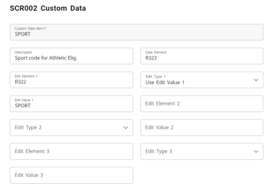
Create an ACADSTANDING record that looks similar to the one shown in the screenshot that follows. Likely you will be scribing against the academic standing and will probably need this record. This too is displayed on the worksheet. Ensure the Value field has the ending G, which is hidden below.
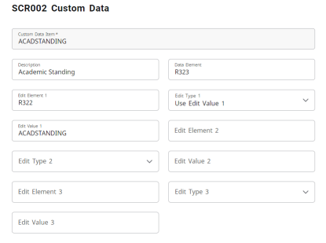
Create an AEAFIRSTTERM record that looks similar to the one shown in the screenshot that follows. Likely you will not be scribing against this value, but this record is still needed so the value can be passed to the auditor to be used when calculating the term count. Ensure the Value field has the ending M, which is hidden below.
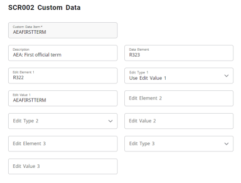
Create an AEAFIRSTDATE record that looks similar to the one shown in the screenshot that follows. Likely you will not be scribing against this value, but this record is still needed so the value can be passed to the worksheet for display. Ensure the Value field has the ending E, which is hidden below.
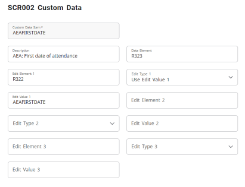
Create an AEASTATUS record that looks similar to the one shown in the screenshot that follows. Likely you will not be scribing against this value, but this record is still needed so the value can be passed to the worksheet for display. If you do not want to show the Football 9 HR/APR E Point value on the report, you do not need to add this record.
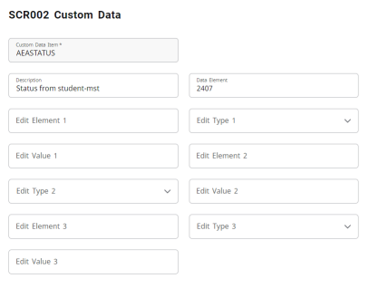
BAN080 setup
Suggested entries for BAN080 ACADSTANDING:
BAN080ACADSTANDING:COLUMN SHRTTRM_ASTD_CODE_END_OF_TERM
BAN080ACADSTANDING:ORDERBY SHRTTRM_ASTD_CODE_END_OF_TERM
BAN080ACADSTANDING:TABLE SHRTTRM a
BAN080ACADSTANDING:WHERE_1 a.SHRTTRM_TERM_CODE =
BAN080ACADSTANDING:WHERE_2 (SELECT MAX(b.SHRTTRM_TERM_CODE)
BAN080ACADSTANDING:WHERE_3 FROM SHRTTRM b
BAN080ACADSTANDING:WHERE_4 WHERE b.SHRTTRM_PIDM = a.SHRTTRM_PIDM)Suggested entries for BAN080 SPORT:
BAN080SPORT:COLUMN SGRSPRT_ACTC_CODE
BAN080SPORT:ORDERBY SGRSPRT_ACTC_CODE
BAN080SPORT:TABLE SGRSPRT a
BAN080SPORT:WHERE_1 a.SGRSPRT_SPST_CODE = 'AC'These ACADSTANDING and SPORT records (along with those built in SCR002) allow you to Scribe an IF-statement against these codes. To get the Academic Standing description and the Sport description to appear on the report, you should create additional BAN080 entries to pull the corresponding descriptions from the Banner STV tables. The Athletic Eligibility worksheet will look for ACADSTANDESC and SPORTDESC report entries and will display them if found. If they are not found, the corresponding ACADSTANDING and SPORT custom entries will be used.
BAN080ACADSTANDESC:REPORT STVASTD
BAN080ACADSTANDESC:COLUMN SHRTTRM_ASTD_CODE_END_OF_TERM
BAN080ACADSTANDESC:ORDERBY SHRTTRM_ASTD_CODE_END_OF_TERM
BAN080ACADSTANDESC:TABLE SHRTTRM a
BAN080ACADSTANDESC:WHERE_1 a.SHRTTRM_TERM_CODE =
BAN080ACADSTANDESC:WHERE_2 (SELECT MAX(b.SHRTTRM_TERM_CODE)
BAN080ACADSTANDESC:WHERE_3 FROM SHRTTRM b
BAN080ACADSTANDESC:WHERE_4 WHERE b.SHRTTRM_PIDM = a.SHRTTRM_PIDM)
BAN080SPORTDESC:REPORT STVACTC
BAN080SPORTDESC:COLUMN SGRSPRT_ACTC_CODE
BAN080SPORTDESC:ORDERBY SGRSPRT_ACTC_CODE
BAN080SPORTDESC:TABLE SGRSPRT a
BAN080SPORTDESC:WHERE_1 a.SGRSPRT_SPST_CODE = 'AC'Ensure that you grant access to these tables for the Degree Works Banner database user.
Athletic Eligibility audit details
The Athletic Eligibility audit details section lists data values to help you understand the student’s eligibility status.
The dash.worksheet.athletic.* properties in DashboardMessages.properties and the worksheet.athletic.* properties in PDFAuditMessages.properties can be modified to change the labels for each data value. Additionally, any line showing in the details section can be removed from the display by removing the property value and replacing it with a backslash followed by a space. For example, to remove the Cumulative GPA line you would change this property:
dash.worksheet.athletic.cumulativeGPA=Cumulative GPAto this:
dash.worksheet.athletic.cumulativeGPA=\ A single space character needs to be placed after the backslash.
Although you can remove any line, you cannot change the order in which the data is displayed.
The dash.athletic.custom.items Shepherd setting needs to contain the SPORT, SPORTDESC, ACADSTANDING, ACADSTANDESC, ATHLETE, AEAFIRSTDATE values for the sports, academic standing, and AEA first date values to display in the Athletic Eligibility audit details.
Athletic Eligibility audit rule examples
Examples of Athletic Eligibility-specific RULE Scribe requirements
6/18/24 Rule
#-- 6/18/24 Rule
#-- 6 credits earned in the previous term
if (PreviousTermEarnedCredits >= 6 ) then
RuleComplete
Label 6a "Previous Term - at least 6 credits earned required"
else
RuleIncomplete
ProxyAdvice "You did not earn 6 credits your previous term"
Label 6b "Previous Term - at least 6 credits earned required";
#-- 18 credits earned in the previous year
# for Semester schools
if (CompletedTermCount <= 1) then
RuleComplete
Label 18a "2 terms have not yet been completed"
else if (Previous2TermsEarnedCredits >= 18 or
PreviousAcademicYearEarnedcredits >= 18) then
RuleComplete
Label 18b "Previous Year: at least 18 credits earned required"
else
RuleIncomplete
ProxyAdvice "You did not earn 18 credits your previous year"
Label 18c "Previous Year: at least 18 credits earned required";
# for Quarter schools
if (CompletedTermCount <= 2) then
RuleComplete
Label 18e "3 terms have not yet been completed"
Else if (Previous3TermsEarnedCredits >= 27 or
PreviousAcademicYearEarnedcredits >= 27) then
RuleComplete
Label 18f "Previous Year: at least 27 credits earned required"
else
RuleIncomplete
ProxyAdvice "You did not earn 27 credits your previous year"
Label 18g "Previous Year: at least 27 credits earned required";
#-- 24 credits earned in the first year
if (FirstYearEarnedCredits >= 24 ) then
RuleComplete
Label 24a "First Year: at least 24 credits earned required"
else
RuleIncomplete
ProxyAdvice "You did not earn at least 18 credits your First Year"
Label 24b "First Year: at least 24 credits earned required";40/60/80 Rule
#-- 40/60/80 Rule
#-- 80% complete with course requirements by start of 5th year
if (CompletedTermCount >= 8 And
CreditsAppliedTowardsDegree >= 80% of DegreeCreditsRequired) then
RuleComplete
Label 80a "80% complete by start of 5th year"
else if (CompletedTermCount >= 8) then
RuleIncomplete
ProxyAdvice "You did not complete 80% by the start of the 5th year"
Label 80b "80% complete by start of 5th year"
#-- 60% complete with course requirements by start of 4th year
Else if (CompletedTermCount >= 6 And
CreditsAppliedTowardsDegree >= 60% of DegreeCreditsRequired) then
RuleComplete
Label 60a "60% complete by start of 4th year"
else if (CompletedTermCount >= 6) then
RuleIncomplete
ProxyAdvice "You did not complete 60% by the start of the 4th year"
Label 60b "60% complete by start of 4th year"
#-- 40% complete with course requirements by start of 3rd year
Else if (CompletedTermCount >= 4 And
CreditsAppliedTowardsDegree >= 40% of DegreeCreditsRequired) then
RuleComplete
Label 40a "40% complete by start of 3rd year"
else if (CompletedTermCount >= 4) then
RuleIncomplete
ProxyAdvice "You did not complete 40% by the start of the 3rd year"
Label 40b "40% complete by start of 3rd year"
else # not yet started 3rd year
RuleIncomplete
ProxyAdvice "By the start of your 3rd year you need to be 40% complete"
Label 3rd "3rd year not started ";90/95/100 GPA Rule
# 90/95/100 GPA Rule
#-- Entering 2nd year - GPA must be at least 90% of 2.0
If (CompletedTermCount <= 3 and SISGPA >= 1.8) then
RuleComplete
Label GPA-1 "Entering 2nd year - GPA must be at least 1.8"
Else If (CompletedTermCount = 3 and SISGPA < 1.8) then
RuleIncomplete
ProxyAdvice "Your GPA is less than 1.8 - you are ineligible"
Label GPA-2 "Entering 2nd year - GPA must be at least 1.8"
Else If (CompletedTermCount < 3 and SISGPA < 1.8) then
RuleIncomplete
ProxyAdvice "Your GPA needs to be at least 1.8 by the start "
ProxyAdvice "of your 3rd term."
Label GPA-3 "Entering 2nd year - GPA must be at least 1.8"
#-- Entering 3rd year - GPA must be at least 95% of 2.0
Else If (CompletedTermCount <= 5 and SISGPA >= 1.9) then
RuleComplete
Label GPA-4 "Entering 3rd year - GPA must be at least 1.9"
Else If (CompletedTermCount <= 5 and SISGPA < 1.9) then
RuleIncomplete
ProxyAdvice "Your GPA is less than 1.9 - you are ineligible"
Label GPA-5 "Entering 3rd year - GPA must be at least 1.9"
#-- Entering 4th year - GPA must be at least 2.0
#-- And beyond 4th year also
Else If (CompletedTermCount >= 6 and SISGPA >= 2.0) then
RuleComplete
Label GPA-6 "4th year and beyond - GPA must be at least 2.0"
Else If (CompletedTermCount >= 6 and SISGPA < 2.0) then
RuleIncomplete
ProxyAdvice "Your GPA is less than 2.0 - you are ineligible"
Label GPA-7 "4th year and beyond - GPA must be at least 2.0";Declared Degree by Third Year Rule
#-- Before 3rd year - degree/major must be declared
If (NumMajors >= 1) then # regardless of how many terms have been completed
RuleComplete
Label Major1 "Declare a degree/major by 3rd year"
else if (CompletedTermCount < 5) then
RuleIncomplete
ProxyAdvice "You need to declare a degree/major by your Third Year"
Label Major2 "Declare a degree/major by 3rd year"
else # student has already started her 3rd year
RuleIncomplete
ProxyAdvice "You did not declare a degree/major by your Third Year"
Label Major3 "Declare a degree/major by 3rd year";Academic Standing Rule
# Student must be in good academic standing
if (AcadStanding = "GOOD") then
RuleComplete
Label 1 "You must be in good academic standing"
else # not so good
RuleIncomplete
Proxyadvice "You are currently not in good academic standing"
Label 2 "You must be in good academic standing";Football Rule
############# Football rule - 9 credits in prior fall season
Begin
;
Remark "Football players must earn 9 credits in the prior fall season.";
Remark "You can regain eligibility if you earn 27 credits before the";
Remark "next fall season (includes summer term credits). ";
# If the student does not have FOOTBALL as a SPORT this block will be
# hidden from the worksheet.
if (SPORT=FOOTBALL) then
BeginSub
if (PreviousTermEarnedCredits-Fall < 9) then
RuleIncomplete
ProxyAdvice "You did not earn at least 9 credits in your last fall term"
Label "Earned less than 9 credits last fall"
else # if (PreviousTermEarnedCredits-Fall >= 9) then
RuleComplete
Label "Earned at least 9 credits last fall";
# ResidenceCompletedTermCount does not count summer terms
# FirstYearEarnedCredits includes prior and ending summer terms
# PreviousFullYearEarnedCredits includes ending summer
if (PreviousTermEarnedCredits-Fall < 9) then
# If a 1st year student and not enough credits
if (ResidenceCompletedTermCount < 3 and
FirstYearEarnedCredits < 27) then
RuleIncomplete
ProxyAdvice "You earned less than 27 credits and thus did not"
ProxyAdvice "regain eligibility"
Label "1st year: less than 27 credits"
# If a 1st year student and has enough credits
else If (ResidenceCompletedTermCount < 3 and
FirstYearEarnedCredits >= 27) then
RuleComplete
Label "1st year: at least 27 credits; regained eligibility"
# If past 1st year and not enough credits
else If (ResidenceCompletedTermCount >= 3 and
PreviousFullYearEarnedCredits < 27) then
RuleIncomplete
ProxyAdvice "You earned less than 27 credits and thus did not"
ProxyAdvice "regain eligibility"
Label "Less than 27 credits this past year"
# If past 1st year and has enough credits
else If (ResidenceCompletedTermCount >= 3 and
PreviousFullYearEarnedCredits >= 27) then
RuleComplete
Label "27 credits in the last year; regained eligibility"
else # just in case
RuleIncomplete
ProxyAdvice "Unexpected situation; need to review 27 credit requirement"
Label "27 credits check; should never see this";
EndSub
Label "Football: 9 credits in fall";
# Quarter schools should change 9 to 8 above
# Quarter schools should change 27 to 40 above
# Quarter schools may also want to change the term count
End.
# These may also be useful...
# if (DegreeCreditsRequired >= 120) then
# if (CreditsAppliedTowardsDegree >= 48 ) then Athletic Eligibility audit Scribe reserved words
These Scribe reserved words are allowed in an IF statement in an Athletic Eligibility audit, usually in an ATHLETE block.
| Alias | Data Source | |
|---|---|---|
| CompletedTermCount | TermCount | Includes the current, in-progress term; starting at the first full-time term; either in residence or as a transfer; does not count summer terms |
| TotalCreditsEarned | TotalCreditsCompleted | rad_term_dtl.rad_cum_tot_earn |
| ResidenceCreditsEarned | ResidenceCreditsCompleted | rad_term_dtl.rad_cum_cr_earn |
| TotalCreditsAttempted | CreditsAttempted | rad_term_dtl.rad_cum_gr_att |
| ResidenceCompletedTermCount | Count the terms in residence – starting at the first full-time term. Does not include summer terms. | |
| DegreeCreditsRequired | CreditsRequired | Credits required from starting block - allowed on right-hand-side of an IF-statement in addition to the left-hand side |
| CreditsAppliedTowardsDegree | Total credits applied towards degree completion. Takes into account the special elective credits allowed/needed discarded the excess fall-through credits. | |
| PreviousTermEarnedCredits | After 4th full-time term these must be degree applicable credits. Previous term must be full-time but can be the in-progress term. Does not include summer terms. | |
| PreviousTermEarnedCredits-Fall | Earned credits for the previous fall term. The Football rule dictates that the student must have earned 9 semester credits in the previous fall term. | |
| Previous2TermsEarnedCredits | After 4th full-time term these must be degree applicable credits. Previous 2 terms can include the current in-progress term – and both can be part-time or full-time terms. Does not include summer terms. Per NCAA proposal 2018-68, both the ECA okay and overflow credits are included in this calculation. |
|
| Previous3TermsEarnedCredits | After 4th full-time term these must be degree applicable credits. Previous 3 terms can include the current in-progress term – and all can be part-time or full-time terms. Does not include summer terms. Per NCAA proposal 2018-68, both the ECA okay and overflow credits are included in this calculation. |
|
| PreviousAcademicYearEarnedCredits | After 4th full-time term these must be degree applicable credits. Does not include summer terms. Per NCAA proposal 2018-68, both the ECA okay and overflow credits are included in this calculation. |
|
| PreviousFullYearEarnedCredits | Includes fall, winter, spring and ending summer term credits. Needed for the Football rule. Per NCAA proposal 2018-68, both the ECA okay and overflow credits are included in this calculation. |
|
| FirstYearEarnedCredits | Credits earned in the first full academic year. If first term is summer it is counted. The summer ending term of that year is also counted. |
Athletic Eligibility audit special topics
There are several calculations and evaluations specific to determining athletic eligibility.
CreditsAppliedTowardsDegree calculation
The Credits Applied Towards Degree calculation is used to support the 40/60/80 rule and present an accurate progress bar on the Athletic Eligibility audit worksheet.
The Credits Applied Towards Degree calculation does not count any credits placed into the Over-The-Limit section (also referred to as Not Counted) but when counting Fall Through (also referred to as Electives) credits, the calculation is more complicated. For most schools, the Gen Ed and Major blocks do not account for all of the credits the student needs to take to graduate. In most cases the student does have to take (non-major) elective credits that appear in the Fall Through section of the audit. However, while some elective credits are required, the student should not take more than that which is required. It is these “excess” elective credits that cannot be counted as Credits Applied Towards Degree.
If credits applied to a block are greater than the credits required, we use the credits applied. For example, if the major block requires 50 credits but it contains several credit range rules (for example, 6:8 Credits in …), it is possible the student will actually apply more than 50 credits to the major. These extra credits applied to the major should be subtracted from the elective (fall-through) credits the student must/can take, known as Elective Credits Allowed or ECA.
If credits are shared between two blocks then those credits are added to the total elective (fall-through) credits the student must/can take. For example, if 7 credits are shared between the major and Gen Ed blocks, the student must then apply 7 additional credits towards the degree, and those additional credits must be taken as elective (fall-through) classes.
To correctly calculate how many elective credits are allowed/needed for the degree, each block must have a block header credits qualifier. In some cases, however, you may not want to specify a fixed value – perhaps because of several credit range requirements or because of variable credit classes. In this situation you may use the Pseudo keyword to essentially hide this requirement from the user. For example:
31 Credits Pseudo # informational only – not checked by the auditor
The auditor ignores this qualifier when checking to see if the block is complete but will use this credit value when figuring out how many electives are needed to satisfy the overall degree credits. If you have a block that does not represent any credits you can use "0:1 Credits Pseudo."
The credits for a block containing the Optional header qualifier are not included in the calculation.
Example 1
A student needs 120 credits to graduate with 98 (50 + 30 + 18) credits coming from required blocks. This means the student must take 22 elective (fall-through) credits to meet the 120 required by the degree. However, if the student has more than 22 credits in fall-through the auditor will not count those “excess” credits giving a better measure of how close the student is to reaching the 120 credit goal.
| Block | Hours |
|---|---|
| Degree Block | 120 hrs required to graduate |
| General Education Block | 50 hrs |
| Major Block | 30 hrs |
| Conc Block (required by major) | 18 hrs |
Example 2
A student needs 120 credits to graduate with 100 (50 + 50) credits coming from required blocks; the Minor was added by the student but is not required by the degree or by the major. This means the student must take 20 elective credits to meet the 120 required by the degree. However, because the Minor block is not required any classes applying to the Minor are considered as “elective” credits for this calculation – along with any appearing in fall-through. As soon as the student applies more than 20 credits to the Minor and fall-through the extra credits are considered “excess” and are not counted towards degree completion. So if the student has 25 credits applying to the Minor and 10 showing in fall-through only 20 of these 35 credits will be counted.
| Block | Hours |
|---|---|
| Degree Block | 120 hrs required to graduate |
| General Education Block | 50 hrs required |
| Major Block | 50 hrs required |
| Minor Block (voluntary) | 30 hrs required |
Example 3
A student also needs 120 credits to graduate but 5 credits are being shared between two required blocks.
| Block | Hours |
|---|---|
| Degree Block | 120 hrs required to graduate |
| General Education Block | 50 hrs |
| Major Block | 30 hrs |
| Minor Block (required) | 20 hrs |
Because 5 credits are shared between major and minor the student must take 25 elective credits instead of only 20.
Example 4
A student needs 120 credits to graduate with 100 (50 + 50) credits coming from required blocks. The Conc is included (called in) by the Major and so the Conc credits are not counted twice. The Major block’s credits required and credits applied values include those credits from the Conc block. For this reason, the Gen Ed and Major block are only included when calculating the credits required. This means that the student must take 20 elective credits to meet the 120 required by the degree.
| Block | Hours |
|---|---|
| Degree Block | 120 hrs required to graduate |
| General Education Block | 50 hrs required |
| Major Block | 50 hrs required |
| Conc Block (included by major) | 15 hrs required |
Example 5
In this situation, the student needs 120 credits to graduate with 100 (50 + 50) credits coming from required blocks. However, 9 credits can be shared between the major and Gen Ed blocks. If no classes are shared between the two blocks then the student must take 20 elective credis to meet the 120 required by the degree. The ShareWith specifies how many credits may be shared but does not dictate that all or some of these credits will be shared. For this reason the auditor assumes no credits will be shared until the student actually takes a class that does apply to both blocks and is shared. Only then does the auditor increase the ECA credits from 20 to the amount that is being shared. At one point this ECA value will be 20 but then later increased to 23, if 3 credits are shared, and then finally to 29 if the maximum of 9 credits are shared. The ECA calculation does not predict what credits may be shared; the calculation only reacts to what credits are actually being shared.
| Block | Hours |
|---|---|
| Degree Block | 120 hrs required to graduate |
| General Education Block | 50 hrs required - Share 9 Credits (major) |
| Major Block | 50 hrs required |
In the Class Summary report, any fall-through credits not being counted against degree completion are marked with an “excess” notation.
CompletedTermCount calculation
Calculating completed terms is important for determining Athletic Eligibility.
For completed terms we count only terms from the first full-time term. So when we are asking if a student is entering the 5th semester, we need to count the completed terms after that first full-time term, but summer terms don’t count. The terms may also be transfer terms or in-resident terms.
Additionally, the first full-time term cannot precede the first official term as bridged to Degree Works on the rad_custom_dtl as AEAFIRSTTERM. For Banner schools this is mapped from the first date of attendance as recorded in SGRATHE. For non-Banner schools this value needs to be the first term you want Degree Works to consider in the term count calculation. The issue here is that high school students who have taken college classes may have transfer work recorded in the system, but the terms for these classes cannot count for athletic eligibility. This AEAFIRSTTERM, or first date of attendance, must represent post-high school terms. For reporting purposes, an AEAFIRSTDATE value must also be bridged to the rad_custom_dtl with a date in the form of ccyymmdd (for example, 20221231 for December 31, 2022). This value appears on the worksheet to aid the user in understanding the calculations performed.
Banner schools should be sure to record the student athlete’s first date of attendance at any college/university in the SGRATHE_ATTEND_FROM_DATE field. If that field is not filled in, Degree Works cannot pull this first date/term of attendance and will have to calculate it using the data it has starting at the first term it finds, which could be data from the student’s high school coursework. However, if you can store the AEAFIRSTTERM in some other place in Banner, you can set up a UCX-BAN080 record to pull it over.
As part of the 6/18/24 hour rule, the full-time term also comes into play but only with regard to the 6 hour rule. When we look at the previous term attended, we have to go backwards in time until we find the first full-time term. For the 18 hour and 24 hour rules, however, the terms may be part-time or full-time terms.
First year remedial credits
No more than 6 earned credits can be counted in the first year and none can be counted after the first year.
- 6 credits earned in the previous term
- 18 credits earned in the previous two terms, or the previous academic year
- 24 credits earned in the first year
For the 6-credit rule, a check is performed to see if that previous term is in the first year; if it is up to 6 credits remedial are allowed; if it is not in the first year then no remedial credits are allowed.
For the 18-credit rule, a check is performed to see if the previous 2 terms are in the first year; if they are up to 6 credits remedial are allowed; if they are not in the first year then no remedial credits are allowed. Same idea applies when counting the previous year credits.
For the 24-credit rule, up to 6 credits remedial are allowed.
Remedial classes are those with a course number below 100 (for example, MATH 99, ENGL 098) or start with a zero (for example, ART 01224, ANTH 0893).
First year earned credits
A small difference to the calculation for FirstYearEarnedCredits is that the auditor also counts all credits earned before the first official term in the first year.
This means that transfer credits earned before the first year are counted, but the auditor includes credits for all terms (including summer terms) before the first term, transfer or not. In addition, summer terms in the first year are also counted. The top of the Diagnostics Report has information that details how this calculation was made for the given student.
Transfer student athletes
The requirements for determining if a transfer student-athlete is eligible to compete at the certifying institution are complex.
For example, there are a lot of different rules depending on whether the student-athlete is a qualifier or non-qualifier through the NCAA and whether they are coming from a 2-year institution or a 4-year institution, and these often need to be evaluated on a case by case basis. At this time, the Athletic Eligibility audit does not evaluate whether the transfer student-athlete meets these specific transfer regulations. This verification needs to be done by the institution. However, after the transfer student-athlete has been determined eligible to compete at the certifying institution, an Athletic Eligibility audit can be generated on the student-athlete to certify they meet the general eligibility requirements.
Football rule
Adding the football rule into its own ATHLETE=FOOTBALL block with an if-statement around your set of rules is important for the Athletic Eligibility audit.
If the student is not a football player (that is, does not have FOOTBALL as a sport), the subset will be removed from this block. The auditor recognizes this situation and marks the block as not-needed and the block is hidden from the worksheet display. This means that this FOOTBALL block will be included for all athletes but will only display on the worksheet for true football players.
if (SPORT=FOOTBALL) then
BeginSub
# Place your requirements here; see sample rules below in this document
EndSub
Label “Football: 9 credits in fall”;
Remark “Football players must earn 9 credits in the prior fall season."; The NCAA states that the student can only regain eligibility one time. Degree Works does not keep track of whether or not the student has already regained eligibility, believing the compliance office on your campus keeps track of this information. Degree Works can tell you if the student has earned 27 credits in the last year, but it is the compliance office which is the final word on whether the student really is allowed to regain eligibility.
Furthermore, the 9 HR/APR E Point status is displayed in the Athletic eligibility details section of the report for students who have SPORT=FOOTBALL on the custom-dtl table. The status appears as either Passed or Failed. If the student’s active term is a fall term then the status is determined based on the completeness of all ATHLETE blocks: if all blocks are complete then the status appears as Passed; otherwise it appears as Failed. If the active term is not a fall term then the status is pulled from the dap_student_mst’s dap_aea_status field through the SCR002 AEASTATUS record. When an audit is run in a fall term the status calculated based on the completeness of the ATHLETE blocks is saved to the dap_student_mst.
To summarize, if the audit term is FALL the status is based on completeness of ATHELETE blocks and saved to the database. If the audit term is not FALL, the status shown is based on what was saved to the database in the previous fall term. If for some reason no status is found in the database or it is neither PASSED nor FAILED the report will show “(unknown)”. This situation will happen for your initial set of audits until you have run audits in a fall term.
Batch Athletic Eligibility audits
You can run batch Athletic Eligibility audits from DAP22 in Transit like you do with Academic audits.
Choose Athletic Eligibility Audit as the audit type as the first question on the Questions section. You can choose to have them converted to PDF and choose either the RPT55 - Athletic Eligibility report or RPT56 - Athletic and Academic report. You can also freeze the new audits you run by choosing a freeze type.
In the Selection criteria section, you can select any student, but it makes sense to select your student athletes. This can most easily be done by searching on students with a SPORT record on the rad_custom_dtl, but you can decide to use additional criteria as needed.
Financial Aid
Financial Aid audits allow you to process degree audits to assist with reviewing aid requirements.
Rules for Financial Aid awards are built using Scribe, and processing a student’s financial aid data against these requirement blocks will verify if a student has met the requirements for an award.
When running a Financial Aid audit, the In-progress check box should always be checked, because the current classes are required. The Preregistered check box should always be unchecked, because future classes are never wanted for a Financial Aid Audit. Financial Aid history obeys the same CFG020 DAP14 Audit History Depth setting as academic audits when saving audits. If the depth is set to 3, you end up with 3 academic audits and 3 financial aid audits. When running a Financial Aid audit, an academic audit is run but any AWARD blocks are also pulled in based on the AWARD values found in the rad_aid_dtl. All rad_aid_dtl records are read when doing a Financial Aid audit; no SCR002 entries are needed.
By default, the award code for any awards the student has displays in the Financial aid awards section of the audit. This can be localized to display a literal instead. For example, to display Pell Award instead of PELL in the Responsive Dashboard, in DashboardMessages.properties, create a localization for dash.worksheet.financial.PELL=Pell Award. To display Pell Award instead of PELL in PDF Audits, add a corresponding entry in PDFAuditMessages.properties:worksheet.financial.PELL=Pell Award.
Configuration
- Review BAN080 to ensure the required Financial Aid records exist. For more information, see Financial Aid audit data setup
- Review AUD033 - Financial Aid Award types
- Review RPT036 to ensure it is configured correctly for WEB50 and WEB51.
- Review STU016 to ensure that the Term Type and Financial Aid Year fields are populated; only terms with non-blank aid year fields will appear in the Aid Term drop-down.
- Access to the following is granted if the user has the specified Shepherd key:
- Financial Aid - SDAIDAUD
- Financial Aid Report - SDWEB50
- Aid and Academic Report - SDWEB51
- View student financial aid audits - SDAIDREV
- Delete audits - SDAIDDEL
- View historic financial aid audits - SDAIDHIS
- Process financial aid audits - SDAIDRUN
Financial Aid audit data setup
The Financial Aid audit requires specific data to be bridged into the Degree Works database.
The data structure for holding data required for the Financial Aid audit is the rad_aid_dtl, with one name value pair stored in each record. The structure is:
| RAD_AID_DTL | ||
|---|---|---|
| Column name | Type | Size |
| srn_id | Integer | |
| rad_id | Char | 10 |
| rad_aid_code | char | 12 |
| rad_aid_value | Char | 12 |
| unique_id | Integer | |
| unique_key | Char | 36 |
At least two values should be bridged to the rad_aid_dtl:
-
AIDYEAR - all active aid years for each student should be bridged to the rad_aid_dtl.
-
AWARD - all active awards for each student should be bridged to the rad_aid_dtl.
You may also want to bridge an ENROLLSTATUS and AIDSTATUS for each student for reporting purposes, but neither is required. See examples below for configuring BAN080 to extract this data. If you are a non-Banner site and use RAD11 to bridge student information, you need to alter your extract to obtain information about your students into the rad_aid_dtl.
There are a few items related to awards which are repeatable, and require special coding for the rad_aid_code. Any record related to an award should have the fund or award code as part of the code. For example, to store the cumulative amount of the Pell award, use the rad_aid_code of PellCumAmt.
Any item that is a number will be stored in ASCII encoded digits, not as binary. Numeric items of the same type (e.g. EstFamContrib) should be zero padded to the same length.
Additional information you may consider extracting and bridging from your student system:
| Item | Type | Size | Year specific | Notes |
|---|---|---|---|---|
| Year in College | INTEGER | Y | 1st, 2nd | |
| Terms Completed | INTEGER | Y | # | |
| Enrollment Status | CHAR | 2 | Y | Full Time, Part time |
| Class Level | CHAR | 2 | Y | FR, SO |
| Program Type | CHAR | 12 | Y | 5-year, AS, BA, non-degree seeking |
| SAP Status | CHAR | 2 | Y | Probation, Suspension |
| Citizenship | CHAR | 2 | Y | US, Eligible, Not |
| TAP Payments | INTEGER | Y | # | |
| TAP Pts Used | INTEGER | Y | # | |
| TAP Waiver Flag | CHAR | 1 | Y | Y/N |
| TAP Waiver Term | CHAR | 12 | Y | Term |
| TAP Waiver Date | DATE | Y | Date | |
| Award Source | CHAR | 12 | Y | Pell, ACG, etc |
| Award Type | CHAR | 12 | Y | Federal, State, Institution |
| Cumulative Award Amount | INTEGER | Y | Cumulative, no decimal | |
| Current Award Amount | INTEGER | Y | This year, no decimal | |
| Secondary Program of Study | CHAR | 12 | N | Rigorous |
| Previous Undergrad Experience | CHAR | 1 | Y | Y/N |
| Pell Recipient | CHAR | 1 | Y | Y/N |
| Residence | CHAR | 4 | Y | State, County, Non |
| Matriculated | CHAR | 1 | Y | Y/N |
| 1st time enrollment term | CHAR | 12 | N | Term |
| Disability Code | CHAR | 4 | Y | 3C |
| Estimated Family Contribution | INTEGER | Y | EFC | |
| Education Level | CHAR | 4 | Y | HS, Some College, BA |
| Dependency | CHAR | 2 | Y | Dep / Indep |
BAN080 setup
Suggested entries for BAN080 AIDAWARD:
AIDAWARD:AID AWARD
AIDAWARD:COLUMN RPRAWRD_FUND_CODE
AIDAWARD:ORDERBY RPRAWRD_FUND_CODE
AIDAWARD:TABLE RPRAWRD
AIDAWARD:WHERE_1 RPRAWRD_AIDY_CODE = '0506'
AIDAWARD:WHERE_2 AND RPRAWRD_AWST_CODE = 'ACPT'Suggested entries for BAN080 AIDYEAR:
AIDYEAR:AID AIDYEAR
AIDYEAR:COLUMN RPRAWRD_AIDY_CODE
AIDYEAR:ORDERBY RPRAWRD_AIDY_CODE
AIDYEAR:TABLE RPRAWRD
AIDYEAR:WHERE_1 RPRAWRD_AWST_CODE = 'ACPT'
AIDYEAR:WHERE_2 AND RPRAWRD_AIDY_CODE in
AIDYEAR:WHERE_3 (SELECT b.ROBINST_AIDY_CODE FROM ROBINST b
AIDYEAR:WHERE_4 WHERE b.ROBINST_STATUS_IND = 'A')Suggested entries for BAN080 AIDENRSTATUS
AIDENRSTATUS:AID ENROLLSTATUS
AIDENRSTATUS:COLUMN SGBSTDN_FULL_PART_IND
AIDENRSTATUS:ORDERBY SGBSTDN_FULL_PART_IND
AIDENRSTATUS:TABLE SGBSTDN a
AIDENRSTATUS:WHERE_1 a.SGBSTDN_TERM_CODE_EFF =
AIDENRSTATUS:WHERE_2 (SELECT MAX(b.SGBSTDN_TERM_CODE_EFF)
AIDENRSTATUS:WHERE_3 FROM SGBSTDN b
AIDENRSTATUS:WHERE_4 WHERE b.SGBSTDN_PIDM = a.SGBSTDN_PIDM)Suggested entries for BAN080 AIDSTATUS
AIDSTATUS:AID AIDSTATUS
AIDSTATUS:COLUMN RORSAPR_SAPR_CODE
AIDSTATUS:ORDERBY RORSAPR_SAPR_CODE
AIDSTATUS:TABLE RORSAPR
AIDSTATUS:WHERE_1 RORSAPR_SAPR_CODE IS NOT NULL Financial Aid audit rule examples
AWARD blocks house Financial Aid requirements.
AWARD header qualifiers must have Labels to display their advice to the right of the label. AWARD blocks should always contain the current aid year's requirements, and be saved with open-ended catalog years. As long as your AIDAWARD BAN080 item is up-to-date, that block will only ever be given to students who have that award in the *current* aid year, because only those students will have that AWARD code in rad_aid_dtl.
HEADER examples
if (TotalCreditsEarned > 30) then
beginif
MinGPA 3.0
ProxyAdvice "Your CrEarned > 30 - so you must meet the 3.0 requirement"
endifif (LastCompletedTermType = Spring) then
beginif
MinGPA 2.5
ProxyAdvice "You need a GPA of 2.5 now that you have completed Spring"
endifif (CompletedTermCount > 3) then
beginif
MinGPA 3.0
ProxyAdvice "You need a GPA of 3.0 now that you have 3 terms completed"
Endif
if (ResidenceCompletedTermCount > 3) then
beginif
MinGPA 3.2
ProxyAdvice "You need a GPA of 3.2 now that you have 3 terms completed at UW"
EndifMinGPA 2.5 in (MAJOR)
ProxyAdvice "GPA not good enough for Major block"Under 30 Credits in @ (With Attribute=DEV)
ProxyAdvice "You have more than 30 developmental credits"
Label "No more than 30 developmental credits"if (EnrollStatus=F) then # F=full-time
beginif
MinTerm 12 Credits
ProxyAdvice "You did not take at least 12 credits per term"
endif
else if (EnrollStatus=P) then # P=part-time
beginelse
MinTerm 6 Credits
ProxyAdvice "You did not take at least 6 credits per term"
endelseRULE examples
if (CreditsAttemptedThisTerm > 12) then
RuleComplete
Label "12 credits attempted this term - met"
else
RuleIncomplete
ProxyAdvice "You have not yet attempted 12 credits"
Label "12 credits attempted this term - not met";
if (CreditsEarnedThisTerm >= 75% of CreditsAttemptedThisTerm) then
RuleComplete
Label "Term credits earned satisfied"
else
RuleIncomplete
ProxyAdvice "You have not yet earned 75% of attempted credits"
Label "Term credits earned- not met";if (CreditsAttemptedThisAidYear > 40) then
RuleComplete
Label "Aid Year attempted - met"
else
RuleIncomplete
ProxyAdvice "You have not yet attempted 40 credits in the aid year"
Label "Aid Year attempted - not met";if (CreditsEarnedThisAidYear >= 75% of CreditsAttemptedThisAidYear) then
RuleComplete
Label "Aid year credits earned satisfied"
else
RuleIncomplete
ProxyAdvice "You have not yet earned 75% of attempted credits in the aid year"
Label "Aid year credits earned- not met";if (TotalCreditsAttempted > 30) then
RuleComplete
Label "total-cr-attempted - met"
else
RuleIncomplete
ProxyAdvice "You have not yet attempted 30 credits"
Label "total-cr-attempted - not met";if (ResidenceCreditsEarned >= 75% of TotalCreditsAttempted ) then
RuleComplete
Label "Credits earned is at least 75% of credits att"
else
RuleIncomplete
Label "Credits earned is NOT 75% of attempted";if (TotalCreditsEarned < 150% of DegreeCreditsRequired) then
RuleComplete
Label "Credits earned is less than 150% of required"
else
RuleIncomplete
Label "Credits earned more than than 150% of required";12 Credits in @ (With DWTerm = CURRENT) Label "CURRENT term";12 Credits in @ (With DWTerm = PREVIOUS) Label "PREVIOUS term";Financial Aid audit Scribe reserved words
These Scribe reserved words are allowed in an IF statement in a Financial Aid audit, usually in an AWARD block.
The following reserved words are allowed only in an IF statement in a Financial Aid audit, usually in an AWARD block.
| Scribe word | Alias | Data source |
|---|---|---|
| CompletedTermType | TermType | |
| CompletedTermCount | TermCount | |
| TotalCreditsEarned | TotalCreditsCompleted | rad_term_dtl.rad_cum_tot_earn |
| ResidenceCreditsEarned | ResidenceCreditsCompleted | rad_term_dtl.rad_cum_cr_earn |
| TotalCreditsAttempted | CreditsAttempted | rad_term_dtl.rad_cum_gr_att |
| CreditsAttemptedThisTerm | look at the classes on the aid-term - count the rad_class_dtl.rad_credits (not earned); this does not include any credits for withdrawn classes – unless they are bridged with non-zero credits. | |
| CreditsEarnedThisTerm | look at the classes on the aid-term - count the rad_class_dtl.rad_gpa_credits | |
| CreditsAttemptedThisAidYear | look at the classes on the terms in the aid-year specified - count the rad_class_dtl.rad_credits (not earned); this does not include any credits for withdrawn classes – unless they are bridged with non-zero credits. | |
| CreditsEarnedThisAidYear | look at the classes on the terms in the aid-year specified - count the rad_class_dtl.rad_gpa_credits | |
| CompletedTermCount | count the terms where at least one class was taken either in residence or as a transfer | |
| ResidenceCompletedTermCount | count the terms where at least one class was taken in residence | |
| LastCompletedTermType | else go backwards in time and find the find the first completed term | |
| DegreeCreditsRequired | CreditsRequired | credits required from starting block - only allowed on right-hand-side of an IF-statement |
The following reserved words are allowed in both Academic and Financial Aid audits, but it makes the most sense to use them in an AWARD block on a Financial Aid audit.
| Scribe word | Alias | Data source |
|---|---|---|
| MinCredits 12 in @ (With DWTerm=PREVIOUS) |
previous term the student took classes - before active | |
| MinCredits 12 in @ (With DWTerm=CURRENT) |
active-term | |
| MinTerm X Credits/Classes | look at credits ATTEMPTED - anywhere in the audit - including failed and OTL only works in the starting block or an AWARD block If the MinTerm is in the starting block or an AWARD block we then look at the entire audit - otherwise we just look at classes in this scope. |
|
| Under 30 Credits in @ (With Attribute=DEV) | Below | new header qualifier As long as the student has less than or equal to the number of credits/classes specified = OK All attempted classes/credits are applied here |
| MinGPA 2.0 in (MAJOR) MinGPA 2.0 in (MAJOR = MATH) |
These MinGPA scopes can be used in any block - but normally used in an AWARD block "MinGPA 2.0" in AWARD block looks at the overall GPA |
Exceptions
The Exceptions function allows users to apply or remove exceptions to the requirements for degree completion for a specific student.
Configuration
- Review RPT036 to ensure it is configured correctly for WEB44.
- Review the following Shepherd settings to ensure they are configured correctly:
- dash.exceptions.details.option
- dash.exceptions.runAuditOnEnter
- dash.exceptions.saveNewAudit
- Access to the following is granted if the user has the specified Shepherd key:
- Exceptions - SDEXCEPT
- Add exceptions - SDEXPADD
- Delete exceptions - SDEXPDEL
- Also Allow exceptions - EXPALLOW
- Apply Here exceptions - EXPAPPLY
- Change the Limit/Remove Course exceptions - EXPCHANG
- Force Complete exceptions - EXPFORCE
- Substitute exceptions - EXPSUBST
- View exception details - EXPVWDTL
Add exception
A user can add an exception through the Add Exception dialog.
After selecting a student, click the plus sign where you want to add an exception, whether globally or individually and the Add Exception dialog displays. If configured, a new audit runs in the background. Select the exception type you want to add from the drop-down menu. When selected, the relevant fields required to apply the exception display. When choosing the description, which is a required field, a default value automatically populates. This default description is system-generated and can be localized by updating the property: .
A Details field can be configured to display, allowing the user to provide additional details about the exception to non-students. This text does not display directly on the audit. It can be viewed as a tool tip when hovering over the exception description on the audit, but only if the user has the EXPVWDTL Shepherd key and does not have the SDSTUME Shepherd key.
Exceptions are both student-specific and block-specific. In other words, an exception applies to a specific block used in a student degree audit. If an exception is processed in a major block for a student and that student then changes major, the previous exception no longer applies to the student's new major. However, if the CFG020 DAP14 Apply Exception to Same Block Type flag is set to Y, the exception can be used on the new major but only if the label-tag or qualifier tags between the two blocks match. For more information, see the UCX-CFG020 DAP14 topic. Unused exceptions appear at the bottom of the audit report. Exceptions are also used with What-If audits. Exceptions only appear in the exception screen and on audit reports configured to show exceptions. By default, the Registrar's Audit report is configured to show exceptions.
Exceptions on rules are tied to the rule's label-tag or label if no label-tag exists. When a block is modified using Scribe, the exception is placed on the correct rule as long as the original rule label can be found in the new block. Qualifiers do not have labels so instead a tag should be scribed for each header qualifier to prevent the exceptions from becoming unhooked. See the Label Tags topic for more information on using tags.
A new audit automatically runs, applying the exception. This audit can be configured to be saved to the database when it is run by setting dash.exceptions.saveNewAudit to true. Otherwise, it is visible only to the user while on this page.
Exception types
Exception types are codes assigned to each Degree Works exception.
Force Complete
Force Complete completes a course rule, subset rule, block qualifier, or rule qualifier without applying additional classes. It is the most powerful exception type available.
The force complete exception can be used on any course rule and most qualifiers. This exception type is completely independent of all student data. It will simply complete a rule on a student degree audit regardless of any qualifiers that might apply. Forcing a qualifier complete tells the auditor to ignore the qualifier the next time an audit is performed for this student.
Substitute
Substitute is used to substitute one course for another. This is distinct from the Also Allow exception type in that one course is exchanged for another.
If the rule contains only a single course, the substituted course is required for completion of the block. If a substitute exception is processed on a rule with more than one course option that can be used to complete the rule, then the substituted course is not required and is an option available to the student. Only qualifiers that list courses support this type of exception.
To create a substitute exception, enter the target course from the course rule in the Change fields. The target course must be found on the rule where the exception is to be placed to be saved to the database. Enter the substituted course in the To fields.
You can further define the exception using With qualifiers. The DW values listed in the drop-down (DW Credits, DW Grade, and so on) come from SCR043, but only those with Show in Exceptions enabled. User-defined With qualifiers from SCR044 are also included. When With qualifiers are included as a condition for this exception type, only courses meeting the WITH qualifier criteria are evaluated for the exception.
You can also create a global substitution exception by choosing the option at the top of the page. These substitutions will be applied to all requirements found in all blocks.
Also Allow
Also Allow modifies a course rule by appending a course to the course rule. This exception can be used when you want to expand the course options available on a specific rule.
Courses applied using the Also Allow exception are still subject to header qualifiers in the blocks in which they are used. For example, if an Also Allow exception is processed allowing ENGL 215 to be used to satisfy a course rule and there is a block header or rule qualifier preventing the use of ENGL 215 within that block, the exception is added to the database, but ENGL 215 is not allowed to be used within that block. You must first modify the header qualifier preventing this course from being used before processing the Also Allow exception.
When processing an Also Allow exception to a group rule, the exception can only be processed on the individual rule labels inside the group rule, not the GROUP RULE HEADER LABEL.
To create an also allow exception, enter the course discipline and number in the Allow fields.
You can further define the exception using With qualifiers. The DW values listed in the drop-down (DW Credits, DW Grade, and so on) come from SCR043, but only those with Show in Exceptions enabled. User-defined With qualifiers from SCR044 are also included. When With qualifiers are included as a condition for this exception type, only courses meeting the WITH qualifier criteria are evaluated for the exception.
The Also Allow exception does not require that the selected course be used on the modified rule.
The best-fit algorithm of the Audit Processor Engine still functions with this type of exception. Consequently, the allowed course may not be applied to rules bearing the exception if there is a better fit for this course elsewhere in the degree audit.
Block header exceptions do not support the Also Allow exception.
Apply Here
Apply Here allows the user to apply a course to a rule even if the course is not listed as an option. This exception is very useful in correcting audits in cases where the user wishes to dictate specifically where courses are to be used within the degree audit.
The Apply Here exception applies a course to a rule regardless of any scribing, rule or block header qualifiers. For example, if a block contains a MAXPASSFAIL 0 CLASSES header qualifier, you can use the Apply Here exception to apply a PASSFAIL class to a rule in this block without having to modify the block header qualifier. The Apply Here exception also overrides an EXCEPT list on a rule. Courses applied to rules using this exception type are not moved around within the audit. When processing an Apply Here exception on a group rule, the exception can be processed only on the individual rule labels inside the group rule. Apply Here exceptions cannot be processed on a Group Rule Header.
Apply Here exceptions can be made to the fall-through and over-the-limit sections. When the dash.exceptions.fallThrough.enabled and dash.exceptions.overTheLimit.enabled settings flags are enabled and the user is allowed to make Apply Here exceptions, these sections appear on the worksheet in the Exceptions tab, even if they do not currently contain any classes. When the plus sign is clicked, the Add Exception dialog appears but only with the Apply Here exception in the exception type drop-down.
To create an apply here exception, enter the course you want applied to a rule. The course must be a course already taken by the student and found on the degree audit or one the student is planning to take. The Apply Here exception cannot be used for courses that have not yet been taken.
You can further define the exception using With qualifiers. The DW values listed in the drop-down (DW Credits, DW Grade, and so on) come from SCR043, but only those with Show in Exceptions enabled. User-defined With qualifiers from SCR044 are also included. When With qualifiers are included as a condition for this exception type, only courses meeting the WITH qualifier criteria are evaluated for the exception.
When using an Apply Here exception, any existing WITH data is removed so a course that normally did not meet the WITH qualifiers is able to fit on the rule. If the Apply Here exception contains a new WITH qualifier, that will be applied, replacing the previous WITH data.
Block header exceptions do not support the Apply Here exception.
Remove Course
Remove Course allows the user to remove a course from a course rule or qualifier or to change the limit on a course rule or qualifier.
This exception type is very useful in modifying audit reports when students successfully petition to have a specific course or part of a specific requirement waived. It is also useful in correcting the advice given to students when a specific course is disallowed on a specific rule by a student. For example, if a student receives advice to take CSC 113 to fulfill the Technology Requirement, but the department chair has disallowed this course on this rule for a specific student, you can correct the advice given to the student by using the Remove Course exception.
The Remove Course exception type can also be used to change the limit on a rule without removing a course from the course list.
To create a remove course exception, enter the course discipline and number you want to remove. Enter a brief description for the exception. If the exception also involves changing the limits on the rule or qualifier for the student, enter the new limit in the Change fields.
In situations where a course is applied to a rule or qualifier as a result of a wildcard statement, using the Remove Course exception removes all courses that have been applied as a result of the wildcard statement. For example, if HIST 330 and HIST 427 are both applied to the scribe rule 3 Classes in HIST @, removing HIST @ using the Remove Course exception removes both HIST 330 and HIST 427. However, if you remove just HIST 330, the rule gets changed to 3 Classes in HIST @ Except HIST 330, making sure that HIST 330 does not get applied to this requirement.
Only qualifiers that list courses or specify a number of classes or credits support the Remove Course exception.
Users with the EXPCHANG key can modify the Elective Credits Allowed value when the dash.exceptions.eca.enabled setting is enabled. This change affects both the quantity and selection of classes placed into the two fall-through buckets. Enable this setting only if CFG020 DAP14 Calculate Elective Credits Allowed is also enabled. When users click the plus icon, the Add Exception dialog opens with this exception as the only option in the Exception Type drop-down. The text, which can be localized, says Change the Limit, and the Units drop-down field defaults to Credits and no longer includes the Classes option. The subject and course number fields are also hidden. This screen behaves similarly to the Remove Course and/or Change the Limit exception, with a few modifications.
Qualifier exceptions
The Force Complete, Substitute, Remove Course, and Change Limit exceptions can be used on block header qualifiers and rule qualifiers.
The header qualifiers appear above the rules in the block and have an option button next to them.
Not all qualifiers support the same types of exceptions. Below are the exceptions and the qualifiers on which they can be placed:
| Force Complete | All except NonExclusive (also known as ShareWith), SameDisc, and Optional |
| Substitute | MaxClasses, MinClasses, MaxCredits, MinCredits, MaxTerm, MinTerm, SpMaxCredit, SpMaxTerm |
| Remove Course | MaxClasses, MinClasses, MaxCredits, MinCredits, MaxTerm, MinTerm, SpMaxCredit, SpMaxTerm |
| Change Limit | All except SameDisc, Option, MinGPA, MinGrade |
Remove exception
To remove an exception, you can click the Remove icon that appears to the right of the applied exception. The exception will be removed and a new audit will be automatically generated. Exceptions can be removed in bulk from the Exceptions section on an audit.
Exception Management
Exception Management allows users to manage petitions and apply exceptions, fix petition statuses, and generate exceptions reports. The Exceptions Management function is located under the Admin menu.
Configuration
- Exception Management - SDEXPMGT
- Awaiting Approval - SDEMPEWA
- Approved Petitions - SDEMPEAV
- Rejected Petitions - SDEMPERJ
- Applied Petitions - SDEMPEAL
- Delete rejected petitions - SDEMPERD
- Delete applied petitions - SDEMPEAD
- Fix petition status - SDEMPEFX
- Search for exceptions - SDEMEXSRNote: With the SDEMEXSR Shepherd key, any user can view exceptions for any student, even without SDSTUANY or other row-level access keys.
Manage Petitions
Manage Petitions allows the user to view, approve, reject, and apply petitions requests for all students.
Awaiting Approval
Awaiting Approval is used to approve, reject or add additional documentation to pending petitions.
Any petition with a pending status will appear on the Petitions Awaiting Approval grid.
To approve an individual petition, expand the petition by clicking on the arrow on the right and click Approve. The status of the selected petition will change to approved and the exception will be removed from the list of petitions waiting approval. To approve multiple petitions, select the petitions that should be approved by selecting the check box on the left and then click Approve at the top of the grid.
To reject an individual petition, expand the petition by clicking on the arrow on the right and click Reject. The status of the selected petition will change to rejected and the exception will be removed from the list of petitions waiting approval. To reject multiple petitions, select the petitions that should be rejected by selecting the check box on the left and then click Reject at the top of the grid.
It is also possible to add additional documentation to a pending petition while approving or rejecting an individual petition. With the petition row expanded, enter your text in My comments before clicking Approve or Reject.
It is important to remember that an approved petition is not the same as an applied exception. After a petition has been approved, it is still necessary to actually apply the petition as an exception on the student’s record.
Approved Petitions
Approved Petitions allows a user to process exceptions for petitions that have been approved.
Any petition with an approved status will appear on the “Apply Approved Petitions” grid.
To process an exception for an approved petition, expand the petition by clicking on the arrow on the right. The exceptions audit will load, and an exception can either be added or removed. For information on how to apply an exception, see the Exceptions topic. After adding the exception, click the Update petition and close button. The status of the selected petition will change to applied and the exception will be removed from the list of approved petitions.
Rejected Petitions
Rejected Petitions allows a user to view all petitions that have been rejected.
Select the petition date range to filter the list of rejected petitions that appear on the Rejected Petitions grid based on the day they were created.
Rejected petitions can be maintained in the database or deleted as necessary. To delete rejected petitions, select one or more petitions by selecting the check box on the left and then click the Delete button at the top of the grid. The exception will be removed from the list of rejected petitions.
Applied Petitions
Applied Petitions allows a user to view all petitions that have been applied as exceptions.
Select the petition date range to filter the list of applied petitions that appear on the Petitions Applied as Exceptions grid based on the day they were created.
Applied petitions can be maintained in the database or deleted as necessary. To delete applied petitions, select one or more petitions by selecting the check box on the left and then click the Delete button at the top of the grid. The exception will be removed from the list of applied petitions.
Fix Petition Status
Fix Petition Status allows a user to change the status of a petition. Petitions can be filtered by date range and student ID.
All petitions meeting the search criteria will be displayed in the Fix Petition Status grid. To change the status of a petition, select the correct status from the drop-down in the Status column. Click the Save Changes button to save your changes to the database.
If a petition has a status of Approved and additional comments were entered when the petition was approved, changing the petition status back to waiting will not affect the additional comments that were originally entered. These comments will display with the petition until the petition is either applied as an exception or deleted from the database.
If a petition has a status of Applied, changing the status of the petition will have no effect on the exception that has already been applied. One should therefore be careful when changing the status of petitions that have already been applied as exceptions as it is possible to apply more than one exception for a given petition.
Click Cancel to reverse any changes made and refresh the page, returning all petitions to their original state.
Exceptions Report
Exceptions Report allows users to query the database and create reports on the number and type of exceptions processed on your audits.
You can search for exceptions created by an individual, exceptions applied for a particular student or exceptions applied within a specific block. You can also use this function to identify unhooked exceptions as well.
You can filter the exceptions report by any combination of exception date, type, status, created by ID, student ID, and requirement ID. Click the Run exceptions report button to process your query. Your search will be displayed in the grid below.
You can enter FALLTHRU (single fall-through section), FALLTHOK (ECA-OK section), or FALLTHOV (ECA-OVERFLOW section) in the Requirement ID field to find Apply Here exceptions made to fall-through and over-the-limit. You can also enter ECALLOWD in this same field to find Change the Limit exceptions on Elective Credits Allowed.
The search results can be sorted by any of the columns displayed. Click the header label for the column you want to use as your sort and the list will sort based upon that criterion. Sorts can be done in ascending or descending order. To change from descending to ascending, click the column header again and the indicator will change from a down arrow to an up arrow.
By default, the search results are returned to Show exception details. Expanding the row will display additional information about the exception. Select Show requirement block counts to show which scribe blocks have exceptions processed against them. Expanding the requirements row will show the count of exceptions for each label tag in the block. This is a useful tool for determining if a scribe block is requiring an excessive number of exceptions.
Configuration
Review the dash.exceptionManagement.exceptionsReport.allowSearchOnAll Shepherd setting to ensure it is configured correctly.
Exception status codes
The OK status code indicates that the exception applied correctly. The UN status code means that the exception became unhooked from its intended requirement during the reparse of the block.
This usually is because the rule on which the exception was placed changed so much that new rule could not be recognized. To prevent this from happening, you should ensure your rules have label tags and your qualifiers have qualifier tags. The other codes listed below indicate that the exception was unenforced meaning that when the audit was run the exception could not be applied as intended.
If you see no value in the Label Tag field for any exception you should strongly consider adding a label tag to that requirement. Please review the Label Tags topic for help preventing unhooked exceptions.
| Status code | Meaning |
|---|---|
| OK | Exception applied successfully. |
| UN | Unhooked – typically caused by a Scribe block change (be sure to use label tags). |
| BK | Block was not in audit – typically caused by a major or catalog year change. |
| CR | Rule is not a course rule – node-ids are incorrect. |
| CO | Course to be substituted was not found on the rule. |
| IF | IF-statement was resolved – this rule was not used. |
| ND | Node-id not found in block. |
| PA | Rule is a plus-list and Also Allow is not allowed on a plus-list. |
| PN | Rule is a plus-list and the course is not on the rule; the course can’t be added to the end of the rule. |
| R1 | Not enforced but we don’t know why exactly. |
| R2 | Not enforced and an unknown error code was found. |
Plans
In Plans, a student or advisor can create an academic plan that can be used in conjunction with the audit to ensure that all degree requirements are planned for.
Plans can be created either from scratch or using a predefined template for the course of study. Tools such as the course list and still needed list help identify courses that can be added to a plan, in addition to GPA, test score, non-course and placeholder requirements. Using their plan, a student can generate an audit to evaluate their intended degree progress or have a custom Scribe block for their degree program created. The tracking feature evaluates whether the planned requirements were completed in the expected term, and a plan can be printed or saved locally.
By default, a user assigned access to Plans can just view existing plans; additional authorization grants access to the other features.
Configuration
Access to Plans is granted if the user has the SEPPLAN Shepherd key.
Printed plan
After you configure the applicable Shepherd settings, users can click the Print icon to view a printer-friendly calendar of a student plan.
Printed plan view
- Send the output to a printer.
- Save the output as a PDF.
- Use any other print options available in their browser.
Printed plan notes
- Reference numbers appear next to the note icons.
- Clicking a reference number highlights the corresponding note in the side panel.
- Clicking a note in the side panel highlights the related requirement in the plan.
Configuration
Review the studentPlanner.planner.showDisclaimer and dash.plans.print.notesPanel.enabled Shepherd settings to ensure they are configured correctly.
Plan List
The Plan List displays all of a student’s plans, regardless of degree, school, or status.
Plans in the view can be sorted by any column by clicking on the column header. To open a plan for viewing or editing, click on the plan Description.
From the Plan List, if a user has access they can also create a new plan or delete an existing plan.
The user can return to the Plan List from a plan by clicking the Plan list button.
Plan creating and editing
A new plan can be created while on the Plan List or in the plan view.
To create new plans, a user needs the SEPPADD Shepherd key. They will also be able to modify existing plans, create a copy of a plan, add new terms and requirements on plans, and modify terms and requirements (including deleting individual terms and requirements.)
The SEPPMOD Shepherd key can be assigned to a user instead of SEPPADD if they shouldn't have access to create new plans, but can modify existing plans, add new terms and requirements on plans, and modify terms and requirements (including deleting individual terms and requirements.)
To delete plans, including all terms, requirements and notes on that plan, a user should be assigned the SEPPDEL Shepherd key. Limited delete access can be given to users with the SEPPDELL Shepherd key. This restricts the user to only deleting plans that are not active and not locked/not approved, depending on the studentPlanner.planner.planApprovalMethod Shepherd setting.
For users with access to create a plan, when they click the New Plan button they can create a new blank plan. The user will be prompted to select a starting term for the plan, and after providing a description and other details, a blank plan with the starting term but no requirements will load. The values in the starting term drop-down will be those that have the STU016 Show in Student Educational Planner Picklist flag = Y.
If the user also has the SEPPTEMP Shepherd key, they will have the option to create a plan from a template. The user first selects the starting term for the plan and then selects the template on which they want to base the plan from a list of all active templates. The values in the starting term drop-down will be those that have the STU016 Show in Student Educational Planner Picklist flag = Y. The generic term on the template will be replaced with an actual term on the plan, based on the starting term and the template’s term scheme. It is important to have enough future terms defined in STU016 with term types to satisfy all the terms in the template's term scheme. The template description will be loaded as the default plan description, but it can be modified by the user.
A plan description is required, whether creating a blank plan or a plan from a template. This field is 80 bytes long and does not need to be unique; that is, the student can have more than one plan with the same description.
The degree and school associated with the plan will default from the selected values in the student header, and if the student has goal data for more than one degree/school combination, the user will be able to assign a different degree for the plan. If a different degree is selected, the corresponding school will automatically load. Only the degrees for which the student has active goal data will be available in the drop-down.
When the studentPlanner.planner.showScope Shepherd setting is optional or required, the plan type will display. This can be used to identify the type of plan and is typically used for state fund reporting. If the user has the SEPSCOPE Shepherd key, they will have access to modify the plan type. The plan type drop-down contains values from SEP011 with Show in Student Educational Planner Picklist flag = Y. When the plan type is modified, the scope date will be updated with the date modified.
The Total planned credits field displays the sum of the credits planned for each term on the plan.
The active flag identifies which plan is the student's active plan. While students can have multiple plans, they typically have only one active plan per degree/school. Multiple active plans per degree/school can be allowed by setting studentPlanner.planner.allowMultipleActivePlans to true, but Ellucian does not recommend this. Note that if configured to allow only one active plan, the students can still have more than one active plan, if they have several degree/school goal combinations. The active flag can be modified by users with access to modify plans and the SEPPACTV Shepherd key if either the locking or no approval method is configured with the studentPlanner.planner.planApprovalMethod Shepherd setting. If the approval method is workflow, the active flag will be updated through the Banner Workflow process.
The locked flag will display only if studentPlanner.planner.planApprovalMethod is configured for locking. Only users with the SEPPLOCK Shepherd key will be able to modify locked plans, including terms and requirements.
On the plan card, Status will display only if studentPlanner.planner.planApprovalMethod is configured for locking or Banner Workflow. When using Banner Workflow for approval, the status cannot be modified in Responsive Dashboard.
The tracking status will initially load as NOTEVALUATED if studentPlanner.planner.tracking.enable = true. This will be updated automatically when the plan is modified and saved.
A user can create a copy of an existing plan by clicking Save as copy. This will create an identical copy of the plan including the description and all terms, requirements, and notes. However, the active flag will be set to not active, the locked flag will be set to not locked, and the approval status will be set to needs approval. The copied plan will automatically load in the user interface.
Configuration
- Review the Show in Student Educational Planner Picklist flag in STU016 to ensure it is configured correctly.
- Review the Term Type in STU016 and Term Type in SEP002 to ensure they are configured correctly.
- Review the Show in Student Educational Planner Picklist flag in SEP011 to ensure it is configured correctly
- Review the following Shepherd settings to ensure they are configured correctly:
- studentPlanner.planner.allowMultipleActivePlans
- studentPlanner.planner.planApprovalMethod
- studentPlanner.planner.showScope
- studentPlanner.planner.tracking.enable
- Access to the following is granted if the user has the specified Shepherd key:
- Add and modify plans - SEPPADD
- Modify plans - SEPPMOD
- Delete all plans - SEPPDEL
- Delete only unlocked plans - SEPPDELL
- Create new plans from a template - SEPPTEMP
- Modify plan scope - SEPSCOPE
- Modify locked plans - SEPPLOCK
- Set active flags on plans - SEPPACTV
Terms creating and editing
An unlimited number of terms can be added to a plan by a user who has access to modify a plan.
A user with the SEPPADD or SEPPMOD Shepherd key can add, reassign, or delete terms on a plan. You can add a new term by clicking the Add term button. A drop-down of available terms will be displayed. The values in this drop-down are all terms from STU016 with Show in Student Educational Planner Picklist flag = Y and that have not already been added to the plan. The student’s active term and past terms will be filtered out of this list if the studentPlanner.planner.allowChangesToCurrentTerms and studentPlanner.planner.allowChangesToPastTerms Shepherd settings are false.
All requirements on a term can be moved to another term by selecting Reassign this term from the action menu in the right corner of a term and selecting the new term from the drop-down. After clicking Reassign, the term and its requirements will be moved to the correct chronological position on the plan.
The total number of planned course credits will be displayed on a term header. If studentPlanner.planner.tracking.enable = true, the tracking status will also be displayed for the term.
Up to three terms will display in the desktop view. Other terms on the plan can be scrolled into view by clicking the left or right arrows on the left side of the plan.
To delete a term, you can select Delete this term from the action menu in the right corner of a term.
Configuration
- Review the Show in Student Educational Planner Picklist flag in STU016 to ensure it is configured correctly.
- Review the following Shepherd settings to ensure they are configured correctly:
- studentPlanner.planner.allowChangesToCurrentTerms
- studentPlanner.planner.allowChangesToPastTerms
- studentPlanner.planner.tracking.enable
- Access to add, modify, and delete terms is granted if the user has the SEPPTADD and SEPPMOD Shepherd keys.
Requirements creating and editing
An unlimited number of requirements can be added to a term on a plan by a user who has access to modify a plan.
A user with the SEPPADD or SEPPMOD Shepherd key can add, reassign, or delete requirements to a term on a plan. There are six requirement types: Course, Choice, GPA, Non-course, Test, and Placeholder.
Requirements can be added to a plan term by either clicking + on the requirement card in the Requirements list on the sidebar or by dragging and dropping the requirement card to the desired term
When adding a requirement, a dialog will open where the details of the requirement can be added. If the requirement card was dragged and dropped into a term, that term will load automatically. If added from the sidebar, the user can select the term to which the requirement should be added. The term drop down is all terms from STU016 with Show in Student Educational Planner Picklist flag = Y that have not already been added to the plan. The student’s active term and past terms will be filtered out of this list if the studentPlanner.planner.allowChangesToCurrentTerms and studentPlanner.planner.allowChangesToPastTerms Shepherd settings are false.
When studentPlanner.courseReq.showCritical is true, the critical check box will display for users that have the SEPCRIT Shepherd key on all requirement types except Placeholder. It is used to identify requirements that are critical for tracking.
To edit a requirement, you can select Edit this requirement from the action menu in the right corner of a requirement.
To delete a requirement, you can select Delete this requirement from the action menu in the right corner of a requirement.
To move a requirement to another term, you can select Reassign this requirement from the action menu in the right corner of a requirement or drag and drop it to the desired term.
Control over whether requirements on past or current terms can be modified or deleted can be managed with the studentPlanner.planner.allowChangesToCurrentTerms and studentPlanner.planner.allowChangesToPastTerms Shepherd settings. These settings apply to all users regardless of the access granted by Shepherd keys. Note that when tracking is enabled, these settings only apply to ONTRACK requirements. OFFTRACK and not tracked requirements can always be modified or deleted.
Configuration
- Review the Show in Student Educational Planner Picklist flag in STU016 to ensure it is configured correctly.
- Review the following Shepherd settings to ensure they are configured correctly:
- studentPlanner.courseReq.showCritical
- studentPlanner.planner.allowChangesToCurrentTerms
- studentPlanner.planner.allowChangesToPastTerms
- studentPlanner.planner.tracking.enable
- Access is granted to the following if the user has the specified Shepherd key:
- Add, modify, and delete requirements - SEPPADD or SEPPMOD
- Modify the critical indicator on requirements - SEPCRIT
Course
A single class can be planned for on a plan with the course requirement.
Individual courses that need to be planned for to complete a degree program can be added to a plan. They can be used as criteria in tracking and apply to planner audit rules.
In addition to adding individual course requirements from the Requirements menu on the sidebar, multiple course requirements can be added to a term using the requirement drawer. This is accessed by clicking + in a term. Course requirements can also be added by drag and dropping from the Courses and Still Needed lists in the sidebar.
When adding course requirements from the requirement drawer, the user can filter the list of all courses by subject or by course title. Additionally, a list of all requirements that are still needed can be viewed. One or more requirements can be selected while in the requirement drawer, and then added at one time by clicking Add to plan.
When adding a course requirement from the Requirements list on the sidebar, enter a string of either the course discipline or course number in the Course requirement field. This will start to filter the list of matching courses, which will display in a drop-down below the field. You can continue typing to further refine this list or click Load more to see additional courses and select the desired course.
The credits will automatically load from the course record in the database (rad_course_mst). If the course is a variable credit course, the value in rad_credits (typically equal to rad_credits_high, per the extract) for that course is displayed, and the user can change the number of credits to a value within the range for that course. The format of the credits can be configured with the core.credit.format Shepherd setting.
Over time, a course's credits can change. However, when the value changes on the rad_course_mst, the number of credits on a requirement is not updated and this can cause a validation error when saving a plan. The studentPlanner.planner.updateCreditsIfChanged Shepherd setting can be used update the credits on the requirement and allow the user to save a plan. If this setting is set to false, the user will not be able to save the plan if the credits have changed. If it is set to true, the user can save the plan and the credits on the plan requirement will be updated with the value on the rad_course_mst. If it is set to warn, the user will get a warning that the credits are different when saving the plan, but the credits on the plan requirement will not be updated.
If studentPlanner.courseReq.showHonors is true, the Honors check box will display. The user can check this field to indicate if an honors section is needed. This field is informational only, but may be used for reporting.
If studentPlanner.courseReq.showGrade is true, the minimum grade field will display. The user can select the minimum grade needed for the course to be used as criteria in tracking. The values in this drop-down come from the grades in STU385 with Show in Student Educational Planner Picklist flag = Y.
If studentPlanner.courseReq.showCampus is true, the campus field will display. The user can select the campus where the course should be taken. This field is informational only, but may be used for reporting. The values in this drop-down come from the location codes in STU576 with Show Student Educational Planner PIcklist Show in SEP Picklist flag = Y.
If studentPlanner.courseReq.showDelivery is true, the delivery field will display. The user can select a content delivery method for the course. This field is informational only, but may be used for reporting. The values in this drop-down come from the delivery codes in SEP003 with Show in SEP Picklist flag = Y.
When a course is added to a plan more than once, the user will get a warning letting them know that the course already exists. This warning is just information and can be overridden by any user.
Note that the course requirement search results can be filtered by the school associated with the plan and the course end date. When studentPlanner.planner.filterCoursesByPlanSchool is true, only courses with a DW-SCHOOL rad_crs_attr_dtl equal to the school on the plan will appear in the list. When studentPlanner.planner.filterCoursesNoLongerOffered is true, if the student’s active term is greater than rad_course_mst.rad_cat_yr_stop, the course will not appear in the list. After enabling either filtering by school or by course end date, the course extract needs to be run to generate the data required for this filtering.
Configuration
- Review the Show in SEP Picklist flag in SEP003, STU576, and STU385 to ensure they are configured correctly.
- Review the following Shepherd settings to ensure they are configured correctly:
- core.course.collegeIsEntity.enabled
- core.credit.format
- studentPlanner.courseReq.showCampus
- studentPlanner.courseReq.showDelivery
- studentPlanner.courseReq.showGrade
- studentPlanner.courseReq.showHonors
- studentPlanner.planner.filterCoursesByPlanSchool
- studentPlanner.planner.filterCoursesNoLongerOffered
- studentPlanner.planner.updateCreditsIfChanged
Choice
When there are several course options that can fulfill a planned requirement on a plan, a choice requirement can be used.
Choice requirements allow an unlimited number of course options to be defined and are generally used for program requirements that can be fulfilled by more than one course, such as general ed or core requirements. An option can be any combination of actual courses, wildcards, or ranges. For example, STAT 101 OR MATH @. Choice requirements can be used as criteria in tracking and apply to planner audit rules.
Each option can have up to two items. An item can be an actual course such as MATH 101, a wildcard such as @ @, MATH @, or MATH 3@, or a range such as MATH 100:299. When studentPlanner.choiceReq.enableCourseAttribute is true, a user can specify a course attribute on any item. The values in the attribute drop-down come from STU050. STU050 can be loaded through the extract, or manually by the user.
To add an option, you can click Add Course and enter a string of either the course discipline or course number in the Course requirement field. This will start to filter the list of matching courses, which will display in a drop-down below the field. You can continue typing to further refine this list or click Load more... to see additional courses.
To add an additional item to an option, you can click Add a paired course or lab.
With the SEPPSEL Shepherd key, one of the options may be selected by clicking the button next to the preferred option. Clicking the Clear selection button will remove the selection from the option.
The minimum credits for this requirement can be manually entered but are not required. The format and length of the minimum credits can be configured with the core.credit.format Shepherd setting. If a minimum credits value is entered, this will be included in the total number of planned course credits displayed on the term and used on the planner audit as the number of credits for the selected option. Note that if the selected option is a pair of courses, each course will use the minimum credits value as the number of credits on the planner audit. If the minimum credits is left blank, the number of credits on the rad_course_mst will be used for the selected option on the planner audit.
If studentPlanner.choiceReq.enableScribePointer is true, a user with the SEPPPTR Shepherd key can define a value that links this requirement to a rule in a requirement block. The values in this drop-down come from the pointer codes in SEP009 with Show in SEP Picklist flag = Y. See the Scribe pointers topic for additional information.
If studentPlanner.courseReq.showHonors is true, the Honors check box will display. The user can check this field to indicate if an honors section is needed. This field is informational only but may be used for reporting.
If studentPlanner.courseReq.showGrade is true, the minimum grade field will display. The user can select the minimum grade needed for the course to be used as criteria in tracking. The values in this drop-down come from the grades in STU385 with Show in SEP Picklist flag = Y.
If studentPlanner.courseReq.showCampus is true, the campus field will display. Users can select the campus where the course should be taken. This field is informational only but may be used for reporting. The values in this drop-down come from the location codes in STU576 with Show in SEP Picklist flag = Y.
If studentPlanner.courseReq.showDelivery is true, the delivery field will display. The user can select a content delivery method for the course. This field is informational only but may be used for reporting. The values in this drop-down come from the delivery codes in SEP003 with Show in SEP Picklist flag = Y.
When a course is added to a plan more than once, the user will get a warning that the course already exists. This warning is just information and can be overridden by any user.
Note that the course requirement search results be filtered by the school associated with the plan and the course end date. When studentPlanner.planner.filterCoursesByPlanSchool is true, only courses with a DW-SCHOOL rad_crs_attr_dtl equal to the school on the plan will appear in the list. When studentPlanner.planner.filterCoursesNoLongerOffered is true, if the student’s active term is greater than rad_course_mst.rad_cat_yr_stop, the course will not appear in the list. After enabling either filtering by school or by course end date, the course extract needs to be run to generate the data required for this filtering.
Configuration
- Review STU050, in addition to the Show in SEP Picklist flag in SEP003, SEP009, STU576, and STU385 to ensure they are configured correctly.
- Review the following Shepherd settings to ensure they are configured correctly for your SEP environment:
- core.course.collegeIsEntity.enabled
- core.credit.format
- studentPlanner.choiceReq.enableCourseAttribute
- studentPlanner.choiceReq.enableScribePointer
- studentPlanner.courseReq.showCampus
- studentPlanner.courseReq.showDelivery
- studentPlanner.courseReq.showGrade
- studentPlanner.courseReq.showHonors
- studentPlanner.planner.filterCoursesByPlanSchool
- studentPlanner.planner.filterCoursesNoLongerOffered
- Access is granted to the following if the user has the specified Shepherd key:
- Select a choice requirement option - SEPPSEL
- Change a choice requirement pointer - SEPPPTR
GPA
Minimum overall, major, and class list GPAs required for a degree program can be planned for on a plan with the GPA requirement.
Four types of minimum GPAs for a term can be planned for with the GPA requirement: Overall Degree Works GPA, Overall Student System GPA, Major GPA, and a Class List GPA. These can be used as criteria in tracking.
The GPA types in the drop-down come from the codes in SEP008 with Show in SEP Picklist flag = Y.
The minimum GPA is a required field, and the format can be configured with the core.gpa.format Shepherd setting.
When adding a Major GPA, a major must be specified. The majors in the drop-down come from the major codes in STU023 with Show in Student Educational Planner Picklist flag = Y.
When adding a Class List GPA, a group of classes in which the student needs to have earned a minimum GPA can be defined. Each class should be separated by a plus sign, and ranges and wildcards can be included in the list. Classes are validated, but ranges and wildcards are not.
Configuration
- Review the Show in SEP Picklist flags in SEP008 and STU023 to ensure they are configured correctly.
- Review the core.gpa.format Shepherd setting to ensure it is configured correctly.
- Review the CFG020 DAP14 Display GPA number of places and Round the GPA (Y) or Truncate the GPA (N) flags to ensure the are configured correctly.
Non-course
Non-course items that need to be completed as part of a degree can be planned for on a plan with the non-course requirement.
Non-course requirements help students plan for items other than coursework that need to be completed for their program such as recitals or applications. They can be used as criteria in tracking and may apply to planner audit rules.
The non-course requirement types that are in the drop-down come from the codes in SCR003.
The status can be left blank to indicate that the student just needs to have completed the non-course item. It can also be the alphanumeric score or status needed to consider the requirement complete.
Configuration
Review SCR003 to ensure it is configured correctly.
Test
Competency or assessment tests that need to be completed as part of a degree can be planned for on a plan with the test requirement.
Test requirements help students plan for competency or assessment tests they need to take to complete their program. They can be used as criteria in tracking.
The test codes that are in the drop-down come from the codes in SEP006 with Show in SEP Picklist flag = Y.
The minimum score is a required field, and the length, type, and valid score range of the minimum score are defined in SEP006. Note that alpha scores require additional setup in SEP007 to define the sort order for these values.
If you will be using the Create Block functionality, your SEP006 Test Codes must also be in SCR002 Custom Data. If they are not, the creation of the block will fail with a parsing error.
Configuration
- Review the Show in SEP Picklist flag, Score Length, Score Type, Minimum Valid Score, and Maximum Valid Score fields in SEP006 to ensure they are configured correctly.
- Review the Sort Order in SEP007 to ensure that it is configured correctly.
Placeholder
User-defined requirements that need to be completed as part of a degree can be planned for on a plan with the placeholder requirement.
Placeholder requirements are intended to be informational only and are not included in tracking, nor do they apply to planner audit rules. However, they will display in the Planner Placeholders section of the planner audit. Typically, these are used to hold the place of a requirement that has not yet been selected, such as a general education or core requirement, and is replaced with the appropriate requirement after the student decides what they will take to complete that requirement.
The placeholder requirement types that are in the drop-down come from the codes in SEP005 with Show in Student Educational Planner Picklist flag = Y.
The value is a free-form text field and is a required field.
Configuration
Review the Show in Student Educational Planner Picklist flag in SEP005 to ensure it is configured correctly.
Notes creating and editing
An unlimited number of notes can be added to requirements, terms, or to the overall plan.
By default, all users have access to view all notes on plans, terms, and requirements that have not been marked as internal. Users can be given access to add, modify, or delete notes they have created on each of these plan components, and additional access can be given to users to modify or delete notes created by another user, internal notes, and notes copied from a template.
To create new notes on a plan, term, or requirement, users need the SEPPNADD Shepherd key. They will also be able to modify existing notes on a plan, term, or requirement that they have created. The SEPPNMOD Shepherd key can be assigned to users instead of SEPPNADD if they shouldn't have access to create new notes, but can modify existing notes on a plan, term, or requirement they have created. To delete notes on a plan, term, or requirement they have created, users should be assigned the SEPPNDEL Shepherd key.
After users have been given basic access to create, modify, and delete their own notes, they can be granted additional notes management access. If users have the SEPPNTOW Shepherd key, they will be able to modify notes created by other users, and if users have SEPPNTGD, they will be able to delete notes created by other users. Users with the SEPINOTE Shepherd key can view and modify notes that have been marked as internal. Additionally, the Not available to student check box will display in the note edit dialog for users with this key. Notes that came from the template used to create a plan have a special indicator that can be configured to display with the studentPlanner.planner.notes.showComesFromTemplateIndicator Shepherd setting. These notes are viewable by all users but can only be modified by users with the SEPPNTET Shepherd key or deleted by users with the SEPPNTDT Shepherd key.
To view notes on a plan, term, or requirement, you can click on the note icon to open the note list window. You can choose to view, add, edit, or delete notes, depending on your level of access. You can select View note from the action menu in the right corner of a note to see a particular note.
You can add a note by clicking Add a new note. Notes can have an unlimited amount of text. To make a note internal, you can select the Not available to student check box. You can click Save note to keep your note, or Cancel to go back to the note list window without keeping your note.
You can edit a note by selecting Edit note from the action menu in the right corner of a note.
You can delete a note by selecting Delete note from the action menu in the right corner of a note.
Configuration
- Review the studentPlanner.planner.notes.showComesFromTemplateIndicator Shepherd setting to ensure it is configured correctly for your SEP environment.
- Access to the following is granted if the user has the specified Shepherd key:
- Add and modify your own plan, term and requirement notes - SEPPNADD
- Modify your own plan, term and requirement notes - SEPPNMOD
- Delete your own plan, term and requirement notes - SEPPNDEL
- Modify notes copied from a template - SEPPNTET
- Delete notes copied from a template - SEPPNTDT
- Modify notes created by other users - SEPPNTOW
- Delete notes created by other users - SEPPNTGD
- View, create and modify internal notes - SEPINOTE
Sidebar
Courses
The Courses list displays courses that can be added as requirements to a student's plan.
The Courses list by default shows all courses in the rad_course_mst ordered by discipline where the discipline code is in STU352. Clicking on the arrow next to the discipline will expand the list to show all available courses in that discipline. If there are more than 10 courses for the discipline, a pagination drop-down will display allowing the user view the additional courses.
You can narrow the list of courses that display by searching by course discipline, course number or title. To clear your search, you can click the x in the search field.
The Courses list can be filtered by the school associated with the plan and the course end date. When studentPlanner.planner.filterCoursesByPlanSchool is true, only courses with a DW-SCHOOL rad_crs_attr_dtl equal to the school on the plan will appear in the list. When studentPlanner.planner.filterCoursesNoLongerOffered is true, if the student’s active term is greater than rad_course_mst.rad_cat_yr_stop, the course will not appear in the list. After enabling either filtering by school or by course end date, the course extract needs to be run to generate the data required for this filtering.
Configuration
- Review STU352 to ensure it is configured correctly.
- Review the following Shepherd settings to ensure they are configured correctly:
- studentPlanner.planner.filterCoursesByPlanSchool
- studentPlanner.planner.filterCoursesNoLongerOffered
Still Needed list
The Still Needed list displays remaining courses in a student's program that can be added as requirements to their plan.
The Still Needed list is a mini planner audit that shows only the requirements still needed to complete the plan’s associated program. The requirements are organized by blocks and labels, and the still needed courses can be dragged and dropped into a term on the plan. When all requirements on a rule have been planned for, the rule no longer appears in the Still Needed list.
If the studentPlanner.planner.filterCoursesByPlanSchool setting is true, courses that do not match the level of the plan are filtered out in the Still Needed section of the plan.
The Still Needed list does not show remarks, proxy-advice, or other non-course information that displays on the audit, because these items cannot be added to a plan. However, you can run the planner audit and move that browser tab to the side of the plan browser tab so you can reference that information.
Configuration
Access to generate the Still Needed audit is granted if the user has the SEPPAUD Shepherd key.
Review the studentPlanner.planner.filterCoursesByPlanSchool Shepherd settings to ensure it is configured correctly.
Requirements
The Requirements list displays all the requirement types that can be used on a plan.
The Requirements list is a group of requirement cards that can be used to add requirements to a plan. The options in this list come from the requirement types in SEP004 with Show in Student Educational Planner Picklist flag = Y. The descriptions for these requirement types can be modified, but the keys should not be changed or deleted. There are 6 requirement types: Course, Choice, GPA, Non-Course, Test, and Placeholder.
Configuration
Review the Show in Student Educational Planner Picklist flag in SEP004 to ensure it is configured.
Requirement drawer
The requirement drawer allows multiple courses from the Courses list or the Still Needed list to be added to a term on a plan at one time.
To access the requirement drawer, you can click + in a term on a plan. From this window, you can select multiple courses from either the Courses list or the Still Needed list by checking the check box in front of the course. Each course you select will display as a chip at the bottom of the drawer. After selecting all of the courses to add to the term, you can click the Add to plan button.
You can narrow the list of courses that display by either selecting a discipline from the Subjects drop-down or by searching by title. To clear your search, you can click x in the search field.
When studentPlanner.planner.sidebar.enableCourses is true, the Courses list will display in the requirement drawer. When studentPlanner.planner.sidebar.enableStillNeeded is true, the Still Needed list will display in the requirement drawer. You can configure whether the Courses list or the Still Needed list should load as the default with the studentPlanner.planner.sidebar.coursesOpenedByDefault Shepherd setting.
See the Courses and Still Needed list topics for additional information.
Configuration
Review the following Shepherd settings to ensure they are configured correctly:
- core.course.collegeIsEntity.enabled
- studentPlanner.planner.sidebar.enableCourses
- studentPlanner.planner.sidebar.coursesOpenedByDefault
- studentPlanner.planner.sidebar.enableStillNeeded
Planner audit
Generating audits from students' plans will show their progress towards their degree if all of their planned requirements are completed successfully.
Users will have access to generate planner audits if they have the SEPPAUD Shepherd key.
Class requirements will be applied to rules, as will Choice requirements in which a selection has been made or that have a Scribe pointer associated with a rule. Placeholder requirements will display in the Planned Placeholders section of the planner audit. Test and GPA requirements will not be applied to the audit. Non-course requirements will also be displayed in the planner audit, in rules, or in fall-through.
For historical terms, only actual classes will appear on the planner audit; planned requirements in these terms will not be applied. Only planned requirements for future terms will apply on the planner audit. However, when studentPlanner.planner.audit.usePlannedCoursesOnActiveTerm is true, students' active terms will include both classes for which they have registered and any planned courses in that term for which they have not registered. In the special situation where a student has not registered for classes but does have planned requirements in an active term, the planned requirements will be applied to the planner audit regardless of how studentPlanner.planner.audit.usePlannedCoursesOnActiveTerm is configured.
If studentPlanner.planner.audit.usePreregistered is true, the planner audit will show these classes for future terms rather than the planned course.
Student goals and custom data are displayed at the top of the planner audit. See the Student Data topic for information about how to configure the dash.worksheets.goals.items and dash.worksheets.custom.items Shepherd settings and their corresponding properties.
Configuration
- Review RPT036 to ensure it is configured correctly for SEP31.
- Review the following Shepherd settings to ensure they are configured correctly:
- dash.worksheets.goals.items
- dash.worksheets.custom.items
- dash.worksheets.custom.enabled
- studentPlanner.planner.audit.usePlannedCoursesOnActiveTerm
- studentPlanner.planner.audit.usePreregistered
- Access to generate a planner audit is granted if the user has the SEPPAUD Shepherd key.
Planner What-If audit
Planner What-If audits allow the student to forecast how their planned and completed coursework would apply to a different goal.
A user will have access to generate planner What-If audits if they have the SEPPWIF Shepherd key.
You can click the What-If link on a plan page to open the Planner What-If Analysis dialog window.
Planned requirements will apply to the planner What-If audit as they do on the planner audit. However, Planner What-If audits are not saved to the database. See the Planner audit and What-If topics for the various configuration options available.
Configuration
Access to the Planner What-If functionality is granted if the user has the SEPPWIF Shepherd key.
Create Block
Create Block can generate a requirement block from a student’s plan.
Users have access to create a Scribe block from a plan if they have the SEPPBLCK Shepherd key.
This is useful when the degree requirements are decided on a student-by-student basis as is the case in many graduate programs and eliminates the need to build individualized blocks in Scribe.
After creating a plan for a student, you can click Create Block to save the plan and generate an OTHER requirement block with one rule for each requirement listed in the plan. The value and title for this OTHER block can be configured by the site. If these settings are left blank, the default values of PLAN and Planner Block are used. The student's catalog year is used as the start and stop catalog years on the block, and the student’s ID is added as a secondary tag to block. A degree block that calls this OTHER block must exist to generate an audit for this program.
Example
For an MBA degree, you would create a DEGREE=MBA Create Blockblock in Scribe and then call in the OTHER=PLAN block.
1 Block (OTHER=PLAN)
Label “Educational Plan requirements”;When a new audit is run, the correct OTHER=PLAN block with the specific student ID as the secondary tag will be pulled into the audit.
If the plan is modified, you can click Create Block again to regenerate the block. This will overwrite the block that had been previously saved.
After a block is created, Scribe may be used to modify it. If Create Block is used to regenerate the block after Scribe changes have been made, users will be asked to confirm that they want to overwrite the changes made in Scribe with the Create Block modifications.
Blocks created using this option have a block ID that begins with RB instead of RA.
The requirements on a plan can be configured to be grouped together by term in a subset in the block, or they can be single rules in the block. If subsets are used, the text preceding the term literal in the block can be defined by the site.
Course requirements can be configured to use either classes or credits in the rules, and whether to include the number of credits as part of the course title. The text preceding a Placeholder requirement can be defined by the site.
Test requirements will be created as If statements using RuleComplete/RuleIncomplete to evaluate if the minimum score was achieved.
Non-course requirements will be created as a NonCourse rule in the block. If the requirement value is blank, the rule will be written as follows:
1 Noncourse (THESIS)
Label 14 “THESIS required”;If the requirement value is alpha, the rule will be written as follows:
1 Noncourse (THESIS = XYZ)
Label 14 “THESIS with a value of XYZ required”;If the requirement value is numeric, the rule will be written as follows:
1 Noncourse (THESIS >= 123)
Label 14 “THESIS with a score of at least 123 required”;Overall and Major GPA requirements will be created as Remarks in the block, while Class GPA requirements will be written as header qualifiers.
Choice requirements will be created as Group rules in the block. If an attribute is specified on the choice option, these will be written to the block as well.
Configuration
- Review the following Shepherd settings to ensure they are configured correctly:
- studentPlanner.planner.createBlock.classIndent.numberOfSpaces
- studentPlanner.planner.createBlock.dateFormat
- studentPlanner.planner.createBlock.hourFormat
- studentPlanner.planner.createBlock.labelIndent.numberOfSpaces
- studentPlanner.planner.createBlock.placeholderLabelPrefix
- studentPlanner.planner.createBlock.planBlockTitle
- studentPlanner.planner.createBlock.planBlockValue
- studentPlanner.planner.createBlock.showCreditsInRuleLabel (applies to course requirements only)
- studentPlanner.planner.createBlock.subsetLabelPrefix
- studentPlanner.planner.createBlock.subsetsForTerms
- studentPlanner.planner.createBlock.useClassesInRules
- Access to the Create Block is granted if the user has the SEPPBLCK Shepherd key
Plan approval
Plan approval can be managed using either locking or Banner Workflow.
Locking
When studentPlanner.planner.planApprovalMethod = L, the locking approval method will be enabled. Each plan will have a status that indicates if the plan is locked or unlocked. Typically, a student's active plan is locked after it has been approved by their advisor, and no additional changes can be made to the plan by the student.
The locked status is manually maintained and can be changed only by users that have the SEPPLOCK Shepherd key. Users who does not have access to change the locked status will not be able to modify a locked plan; however, they will be able to save their changes as a new plan.
Banner Workflow
When studentPlanner.planner.planApprovalMethod = W, Banner Workflow can be used to manage plan approvals. Users with the SEPPADD or SEPPMOD Shepherd keys will be able to submit new plans for approval. While a plan is in a pending approval status, the plan cannot be modified by any user. If a user needs to make changes, they will have to save their modified plan as a new plan. In Banner Workflow, the plan approver(s) either approves or rejects the plan, which will update the approval status on the plan. Approved plans cannot be modified if studentPlanner.planner.allowChangesToApprovedPlans is false. Rejected plans can be modified and resubmitted for approval. See the Configure Banner Workflow integration in Degree Works topic for additional information on configuring Banner Workflow for Degree Works.
If users have the SEPPAUTO Shepherd key, they will have an option to save and approve the plan from Plans, bypassing the Workflow process.
Configuration
Review the following Shepherd settings to ensure they are configured correctly:- studentPlanner.planner.allowChangesToApprovedPlans
- studentPlanner.planner.planApprovalMethod
Access to the auto approve plans when using Banner Workflow is granted if the user has the SEPPAUTO Shepherd key.
Course validation
In which terms courses will, or will not, be offered can be configured for Plans.
When a course is added to a Course or Choice requirement, it will be validated against CFG072 if the studentPlanner.planner.addOnlyCoursesOfferedInTerm setting is true. If the course is not valid for that term, an error message is displayed. The user will be given the option to add the course even though it is not being offered in that term, if the user has the SEPPCOFF key.
For additional information on how to define when a course will be offered, see the UCX-CFG072 Planned Courses topic.
Configuration
- Review CFG072 to ensure it is configured correctly.
- Review the studentPlanner.planner.addOnlyCoursesOfferedInTerm Shepherd setting to ensure it is configured correctly.
- Access to add a course to a term in which it is not offered is granted if the user has the SEPPCOFF Shepherd key.
Prerequisite checking
Using prerequisite checking helps ensure that courses are not added to a plan if pre- or co-requisite courses are missing.
For information about configuring and using Scribe blocks for prerequisite checking in plans, see Prerequisite Checking.
Tracking
Tracking is a tool that helps students complete requirements and milestones for their degree program by the term for which they planned and to complete their degree program on time.
Tracking will be assessed on an active and locked or approved (depending on studentPlanner.planner.planApprovalMethod) plan when it is created or modified if it has trackable requirements. Only course, choice, GPA, non-course, and test requirements in the current term and in past terms are evaluated against completed coursework to determine if they satisfy the planned requirement. A tracking status is calculated for trackable requirements, terms, and the overall plan. Whether a requirement is trackable is determined by the studentPlanner.planner.tracking.trackCriticalRequirementsOnly Shepherd setting. When this setting is true, a requirement needs to have the critical check box selected to be trackable. Any requirement that does not have the critical check box checked is skipped. When this setting is false, all requirements are trackable and will be processed.
Tracking is enabled by setting studentPlanner.planner.tracking.enable to true. There are three tracking statuses: ONTRACK, OFFTRACK, and NOTEVALUATED.
When a plan is created, all tracking statuses are initially set to NOTEVALUATED. On a tracked plan, future terms and requirements will have a NOTEVALUATED tracking status, as will any requirements that are not trackable or terms that do not have any trackable requirements.
ONTRACK trackable requirements are those that were completed satisfactorily by the planned term. If a term does not have any OFFTRACK trackable requirements, it will be ONTRACK. A plan is ONTRACK if the number of OFFTRACK terms is less than the value defined in the studentPlanner.planner.tracking.offTrackTermsAllowed Shepherd setting.
A trackable requirement will be OFFTRACK if it was not completed satisfactorily by the planned term. When studentPlanner.planner.tracking.trackCriticalRequirementsOnly is false, OFFTRACK trackable requirements that are not critical will display a WARNING tracking status rather than OFFTRACK. One or more OFFTRACK requirements will make a term OFFTRACK, and a plan will be OFFTRACK if the number of OFFTRACK terms is greater than the value defined in the studentPlanner.planner.tracking.offTrackTermsAllowed Shepherd setting
When studentPlanner.planner.tracking.showTrackingText is true, the plan, term and requirement tracking statuses will display on the plan. The status text can be localized with the planner.tracking.status.* properties in PlannerMessages.properties. Note that the tracking status labels will always be uppercase.
Configuration
- studentPlanner.planner.tracking.enable
- studentPlanner.planner.tracking.offTrackTermsAllowed
- studentPlanner.planner.tracking.showTrackingText
- studentPlanner.planner.tracking.trackCriticalRequirementsOnly
Current term
Tracking can either use a student’s active term or calculate it from date values in STU016.
By default, the student’s active term is used as the current term by tracking. However, when studentPlanner.planner.currentTerm.isDeterminedFromUcx is true, the current term for all students can be calculated based on a term start and stop date. The current date is compared to the Term Start Date and Term Stop Date values in STU016. The term in which the current date falls between that defined start and stop dates is then used as the current term for tracking.
Configuration
Review the studentPlanner.planner.currentTerm.isDeterminedFromUcx Shepherd setting to ensure it is configured correctly.
Requirement tracking status
A tracking status is calculated for course, choice, GPA, non-course, and test trackable requirements.
Tracking will be evaluated for all requirements when the studentPlanner.planner.tracking.trackCriticalRequirementsOnly Shepherd setting is false or only for requirements that have been marked as critical when studentPlanner.planner.tracking.trackCriticalRequirementsOnly is true.
When the studentPlanner.planner.tracking.showTrackingForCriticalRequirementsOnly Shepherd setting is false, the tracking status will display for all requirements on a plan. However, when studentPlanner.planner.tracking.showTrackingForCriticalRequirementsOnly is true, only the tracking status for critical requirements will be displayed on a plan, even if all requirements are included in the actual tracking evaluation. For this reason, it is recommended that studentPlanner.planner.tracking.showTrackingForCriticalRequirementsOnly be set to false.
If a trackable requirement was completed in or before the planned term, and the minimum grade, GPA, or score (if applicable) was met, the requirement will be ONTRACK. If the requirement was completed in a later term, did not meet the minimum grade, GPA, or score (if applicable), or was not completed at all, the requirement will be OFFTRACK.
Course and choice requirement tracking
If a class was completed in or before the planned term, and at least the minimum grade was earned (if the requirement has a minimum grade), a trackable course or choice requirement will be ONTRACK.
If a trackable course or choice requirement was completed in a later term, did not meet the minimum grade or was not completed at all, it will be OFFTRACK.
By default, course and choice requirements must be taken by the planned term to be ONTRACK. When the studentPlanner.planner.tracking.allowTakenTermDifferentThanPlanned Shepherd setting is true, tracking allows forgiveness for a student who did not take a class by the planned term but did ultimately take it. If a planned class was taken before, during, or even after the planned term, the term and the plan would still be considered ONTRACK.
When a class is in-progress and not graded, tracking will evaluate it as passed with the minimum grade met so a trackable requirement won't be OFFTRACK. Then when tracking is triggered after the class is graded, the status will be re-evaluated and if the minimum grade on the requirement was not met, the requirement will then be OFFTRACK.
When the studentPlanner.planner.tracking.passFailClassMeetsMinimumGrade Shepherd setting is true, pass/fail classes will meet the minimum grade on a course or choice requirement. When the studentPlanner.planner.tracking.blankGradeTransferClassMeetsMinimumGrade Shepherd setting is true, transfer classes with blank grades will meet the minimum grade on a course or choice requirement.
When the studentPlanner.planner.tracking.incompleteClassMeetsRequirement Shepherd setting is true, incomplete classes will satisfy a course or choice requirement as a completed class would.
There is no limit to the number of requirements that a course can apply to during tracking. The intent of tracking is to determine if a requirement was completed by a defined point-in-time, as defined in the plan. For example, if the plan contains two requirements such as ENGL 101 (A course requirement) and ENGL @ (A choice requirement) and the student takes ENGL 101, both of these requirements would be considered on-track.
Configuration
- studentPlanner.planner.tracking.allowTakenTermDifferentThanPlanned
- studentPlanner.planner.tracking.blankGradeTransferClassMeetsMinimumGrade
- studentPlanner.planner.tracking.incompleteClassMeetsRequirement
- studentPlanner.planner.tracking.passFailClassMeetsMinimumGrade
GPA requirement tracking
If the planned minimum GPA value is less than or equal to the actual GPA value, a GPA requirement will be ONTRACK.
To evaluate the Overall Degree Works GPA and Major GPA, the planned minimum GPA on the requirement is compared to the actual GPA values calculated by the Degree Works auditor for that term. These values are stored in dap_gpa_history when CFG020 DAP14 Save GPA History = Y. If a dap_gpa_history record cannot be found for the planned term and GPA type, the requirement will be evaluated as OFFTRACK.
For a Class List GPA, a combined GPA for all the classes in the requirement list that have been completed in or by that term is calculated by tracking. This is stored on the GPA requirement, and if the calculated combined GPA is equal to or greater than the minimum GPA on the requirement, the requirement will be evaluated as ONTRACK. If the Class List is a wildcard or a range, the student must have at least one class that falls within the wildcard or range in order for the GPA to be calculated. Note that because in-progress classes do not have a grade, they will not be included in the Class List GPA calculation. Transfer classes will be included in the GPA calculation.
Note that GPA requirements on a student's current term will often be evaluated as OFFTRACK because classes in that term are still in progress and have not been graded. You can force all GPA requirements on the current term to be evaluated as ONTRACK by setting studentPlanner.planner.tracking.currentGpaMeetsRequirement to true. When this setting is true, validation of Overall Degree Works GPA, Major GPA and Class List GPA requirements will be skipped and these requirements will be ONTRACK. When this term becomes a historical term and grading is complete, tracking on these requirements will be evaluated based on the criteria specified above.
Configuration
- Review the Save GPA History flag in CFG020 DAP14 to ensure it is configured correctly.
- Review the studentPlanner.planner.tracking.currentGpaMeetsRequirement Shepherd setting to ensure it is configured correctly.
Non-course requirement tracking
A non-course requirement will be considered ONTRACK if it was completed in or before the planned term.
If a status is specified, this must be equal to the non-course score in order for the requirement to be considered ONTRACK.
Test requirement tracking
A test requirement will be considered ONTRACK if it was completed during or before the planned term and the minimum score was earned.
If a test requirement has non-numeric scores, SEP007 needs to be configured for this test code so that tracking is able to evaluate whether the minimum score was met.
Configuration
Review the Sort Order in SEP007 to ensure it is configured correctly.Term tracking status
If one or more trackable requirements in a term is OFFTRACK, the term will be considered OFFTRACK.
Trackable requirements are either only critical requirements or all requirements, depending how the studentPlanner.planner.tracking.trackCriticalRequirementsOnly Shepherd setting is configured.
Overall plan tracking status
A plan will be considered OFFTRACK if the number of OFFTRACK terms on the plan is equal to or greater than the number of OFFTRACK terms allowed.
Configuration
Review the studentPlanner.planner.tracking.offTrackTermsAllowed Shepherd setting to ensure it is configured correctly.
Batch processes
The Student Educational Planner relies on three batch processors for data creation and management.
DAP54 - Template processor plan creation
Using DAP54, you can create plans from templates for a group of students who do not already have a plan. A specific template can be specified that will be applied to all students, or the processor can find the best template for students based on matching template tags and student goal data. Temporary plans for students without an active and approved plan can also be created and used in reporting. For more information, see the DAP54 - Template processor plan creation topic.
DAP58 - Batch tracking processor
DAP58 will update the tracking status on active plans for a group of students. Running the processor in the official mode calculates the requirement, term, and tracking statuses that are then visible on a plan in Responsive Dashboard. By using the unofficial mode of DAP58 with a cutoff term that is in the future, tracking statuses can be forecasted and used in advising reports. For more information, see the DAP58 - Batch tracking processor topic.
DAP59 - Batch timetabling processor
DAP59 generates reporting data by running audits against student plans and storing the results in the CPA tables. This data can then be used for reporting and schedule forecasting. For more information, see the DAP59 - Batch timetabling processor topic.
Scribe pointers
Using Scribe pointers, a choice requirement on a plan can be linked to a rule in the student’s requirement blocks so that it will satisfy a rule on the planner audit.
Unless a selection has been made on a choice requirement, it will not apply to any rules on the planner audit and it can be difficult to determine if all program requirements have been planned. Using Scribe pointers, if a selection hasn't been made on a choice requirement, the auditor will apply a course to the associated rule, allowing the choice requirement to count towards the program requirements. However, if a selection has been made on a choice requirement, that option will be sent to the auditor instead. If the Scribe pointer is blank or a matching rule can’t be found, the auditor will not apply the choice requirement in the planner audit.
When studentPlanner.choiceReq.enableScribePointer is true, the Scribe pointer will display on a choice requirement. A user with the SEPPPTR Shepherd key can assign a Scribe pointer from the options in the pointer drop-down. The values in the drop-down are from the codes in SEP009 with Show in Student Educational Planner Picklist flag = Y.
In addition to assigning a Scribe pointer to a choice requirement, you must add the SEPPOINTER reserved word to the appropriate rules in your requirement blocks. The auditor treats the SEPPOINTER reserved word as a course discipline and the Scribe pointer value as a course number. SEPPOINTER can be used in IF and HIDE statements to associate the Scribe pointer with a rule. Using a wildcard on a Scribe pointer is also allowed.
There are several ways to Scribe a rule with a pointer, depending on what results should appear on the audit. Some examples and the expected output are listed below.
Single class rules example 1
When written as follows, this option allows for a different label on the rule if an unselected choice requirement is applied versus a selected choice requirement or actual class.
If (MATH 101 wasnt passed and MATH 102 wasnt passed and MATH 103 wasnt passed and
SEPPOINTER COREMATH was FOUND) then
1 class in SEPPOINTER COREMATH
Label "Core Mathematics Choice – Example 1"
Else
3 credits in MATH 101, MATH 102, MATH 103
Label "Core Mathematics – Example 1";Then an unselected choice requirement with a COREMATH Scribe pointer will show on the audit.
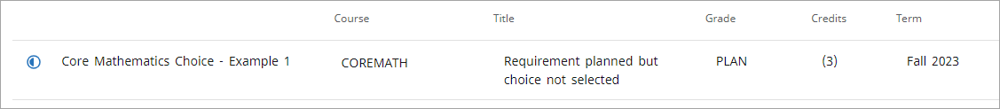
Note that the number of credits shown on the audit will come either from the Minimum Credits field on the choice requirement or default to 3.
Using the scribing above, the appropriate MATH class will apply to the 3 Credits requirement even with a COREMATH SEPPOINTER in place when the student takes the MATH class. When no SEPPOINTER is in place and when no MATH class was taken, the default “3 Credits in MATH …” will appear.
Single class rules example 2
When written as follows, this option will show the rule as completed when an unselected choice requirement is applied.
If (SEPPOINTER COREMATH was FOUND) then
RuleComplete
Label "Core Mathematics Choice planned for but not selected"
Else
3 credits in MATH 101, MATH 102, MATH 103
Label "Core Mathematics – Example 2";Then an unselected choice requirement with a COREMATH Scribe pointer will show on the audit.
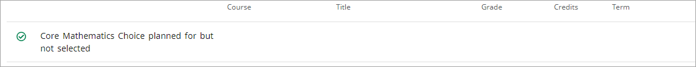
Note that the choice requirement will apply to the Fallthrough section and the credits would apply to the degree.
Multiple class rules example 3
When more than one class is needed to satisfy a rule, multiple choice requirements can be created to apply to this rule using sequential Scribe pointer values on the plan and a wildcard in the rule. Using the HIDE keyword will apply the unselected choice requirements to the rule.
3 Classes in MATH 101, 102, 103, 104, 105, 106, {HIDE SEPPOINTER COREMATH@}
Label "Core Mathematics - Example 3";Then an unselected CHOICE requirement with a COREMATH Scribe pointer will show on the audit.
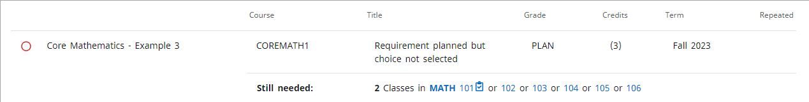
Multiple class rules example 4
In this option, using an IF statement allows for different labels if the rule is satisfied by an unselected choice requirement or an actual class.
If (SEPPOINTER COREMATH@ was FOUND) then
3 Classes in MATH 101, 102, 103, 104, 105, 106, {HIDE SEPPOINTER COREMATH@}
Label "Core Mathematics Choice - Example 4"
Else
3 Classes in MATH 101, 102, 103, 104, 105, 106
Label "Core Mathematics - Example 4";Then an unselected choice requirement with a COREMATH Scribe pointer will show on the audit.
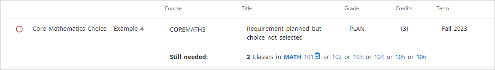
Multiple class rules - example 5
When the student’s plan has multiple unselected choice requirements that match the SEPPOINTER value, they will be applied to the associated rule.
If (SEPPOINTER COREMATH@ was FOUND) then
3 Classes in MATH 101, 102, 103, 104, 105, 106, {HIDE SEPPOINTER COREMATH@}
Label "Core Mathematics Choice - Example 5"
Else
3 Classes in MATH 101, 102, 103, 104, 105, 106
Label "Core Mathematics - Example 5";If the student’s plan has choice requirements with COREMATH1 and COREMATH2 Scribe pointers, the audit will look like this:
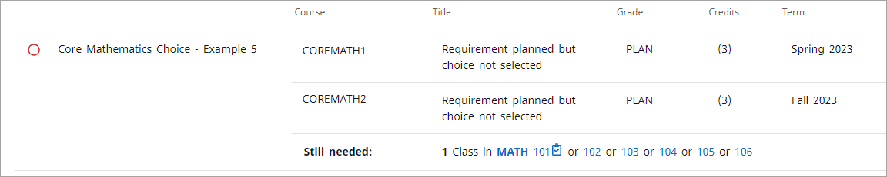
Multiple class rules - example 6
If the student’s plan has choice requirements with COREMATH1, COREMATH2, and COREMATH3 Scribe pointers, the audit will look like this:
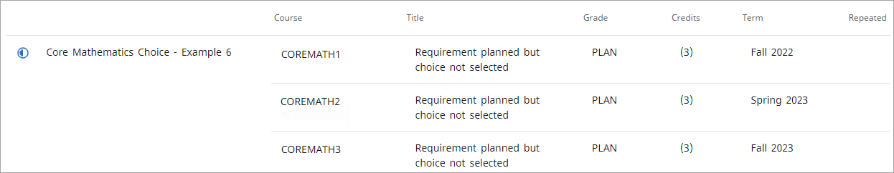
Group rules - example 7
Scribe pointers can be used in Group rules to allow an unselected choice requirement to apply to the best fit option by creating choice requirements on the student’s plan for the Group rule options and associating sequential Scribe pointers to the requirements.
2 Groups in
(3 Classes in MATH 101, 102, 103, 104, 105, 106, {HIDE SEPPOINTER COREMATH@}
Label "Core Mathematics - Example 7") OR
(3 Classes in ART 101, 102, 103, 104, 105, 106, {HIDE SEPPOINTER COREART@}
Label "Core Humanities and Fine Arts - Example 7") OR
(3 Classes in ENGL 101, 102, 103, 104, 105, 106, {HIDE SEPPOINTER COREENGL@}
Label "Core English - Example 7") OR
(3 Classes in CHEM 101, 102, 103, 104, 105, 106, {HIDE SEPPOINTER CORESCI@}
Label "Core Science - Example 7")
Label "CORE REQUIREMENTS - Example 7";If the student has a choice requirement for each of the corresponding Scribe pointers, the audit might look like this:
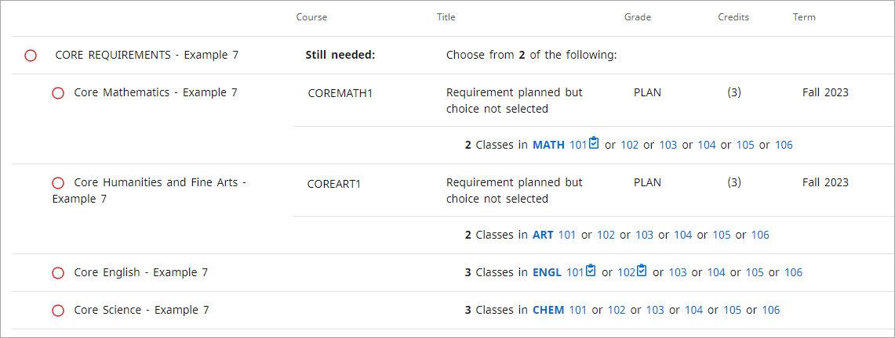
Group rules - example 8
If the student has more than one choice requirement for one of the Scribe pointers, the audit might look like this:
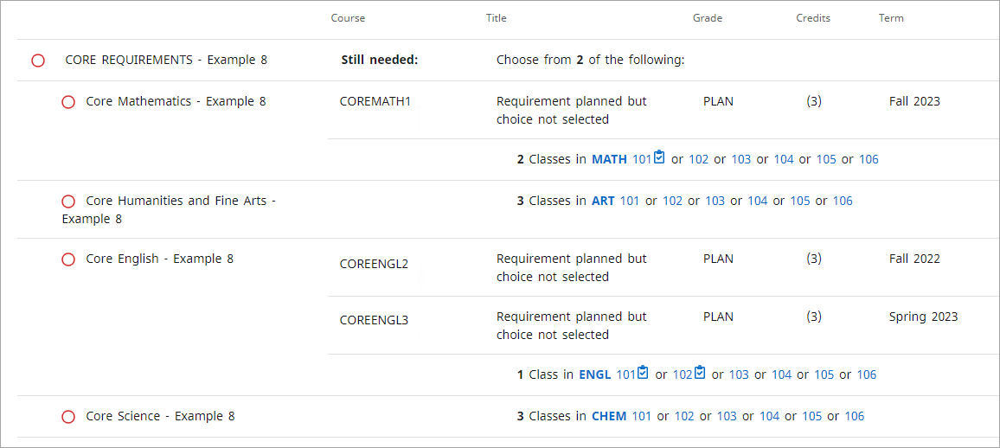
Group rules - example 9
If the student has three choice requirement for one of the Scribe pointers, the audit might look like this:
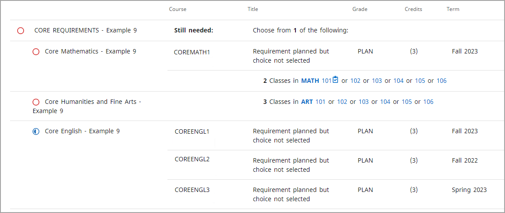
Group rules - example 10
If the student has more than one choice requirement for one of the Scribe pointers and either taken or planned for some of the courses, the audit might look like this:
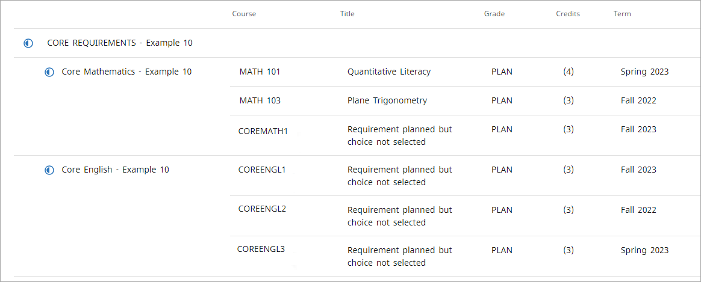
Template Management
Template Management is an administrative tool to create and manage plan templates.
Templates define typical degree paths that will be used as the basis for creating a student’s actual plan. The course list can help identify courses that can be added to a plan, in addition to GPA, test score, non-course, and placeholder requirements. Plans can be created from templates either for an individual in the Plans tab or in batch by running DAP54 in Transit.
By default, a user assigned access to Template Management can just view existing templates. Additional authorization grants access to the other features.
Configuration
Access to Template Management is granted if the user has the SEPTMGMT Shepherd key.
Template list
In the template list, users can search for, select, and delete templates.
There are two view options, tree view and flat view, that can be configured. If both the studentPlanner.template.showTreeView and studentPlanner.template.showFlatView settings are true, users can switch to the other view by clicking the option button. Additionally, the view that displays initially can be configured in the studentPlanner.template.showFlatViewByDefault Shepherd setting. Note that if the studentPlanner.template.showTreeView and studentPlanner.template.showFlatView settings are both false, the flat view will load by default.
The list of templates that displays in each view can be filtered either by description or by template tags. You cannot filter by both description and template tags. The previous search will be cleared when a new search is initiated.
You can filter by description by entering a word or partial string that appears in the template description.
To filter by template tags, you can click on Advanced search. In the search window, select the tags you want to use in your search and the required values from the drop-down lists. Multiple values can be selected for filtering by checking more than one box. As a default, required template tags initially display in the Advanced Search window. Additional template tags to be used for filtering can be added by clicking + in the upper right, and tags that are not required can be removed by clicking the delete icon. All selected values can be cleared by clicking Clear. To filter based on selected template tags, you can click Search. You can go back to the template list by clicking Cancel.
You can view a template by clicking on the description link, create a new template by clicking New Template, and delete a template by selecting the template and clicking the delete icon.
Configuration
Review the following Shepherd settings to ensure they are configured correctly:- studentPlanner.template.showFlatView
- studentPlanner.template.showFlatViewByDefault
- studentPlanner.template.showTreeView
Flat view
The flat view displays all selected templates in a grid.
Templates in the flat view can be sorted on any column by clicking on the column header. The template description and required template tags (as defined in SEP001) will always be displayed, while the modified date, what, who, template ID, and term scheme can be configured to display.
Configuration
- Review the SEP001 Required flag for your template tags to ensure it is configured correctly.
- Review the following Shepherd settings to ensure they are configured correctly:
- studentPlanner.template.columnsToDisplay.modifyDate
- studentPlanner.template.columnsToDisplay.modifyWhat
- studentPlanner.template.columnsToDisplay.modifyWho
- studentPlanner.template.columnsToDisplay.templateId
- studentPlanner.template.columnsToDisplay.termScheme
Tree view
The tree view presents the selected templates in a hierarchical tree, ordered by template tags.
The hierarchy is defined by SEP001 Hierarchy Order, and the number of open branches initially displayed in the tree can be configured with the studentPlanner.template.initialDepth Shepherd setting. Clicking the arrow next to a label will open the next branch in the hierarchy, and the template is at the final branch of the tree. All branches of the tree can be opened by clicking Expand all, while clicking Collapse all will close the tree down to the first branch.
Configuration
- Review the SEP001 Hierarchy Order for your template tags to ensure it is configured correctly.
- Review the studentPlanner.template.initialDepth Shepherd setting to ensure it is configured correctly.
Template creating and editing
A new template can be created while viewing a list of templates or a single template.
To create new templates, users need the SEPTADD Shepherd key. They will also be able to modify existing templates, add new terms and requirements on templates, and modify terms and requirements (including deleting individual terms and requirements).
The SEPTMOD Shepherd key can be assigned to users instead of SEPTADD if they shouldn't have access to create new templates, but can modify existing templates, add new terms and requirements on templates, and modify terms and requirements (including deleting individual terms and requirements).
To delete templates, including all terms, requirements, and notes on that template, users should be assigned the SEPTDEL Shepherd key.
For users with access to create a template, when they click the New Template button they can create a new template. They will be prompted to enter several details about template and after clicking Save, a blank template with the terms defined in the term scheme but no requirements will load.
A template description is required. This field is 80 bytes long and must be unique.
The term scheme determines how many terms will load on the template. For more information, see the Term schemes topic.
The active flag indicates whether a template is current and can be used to create plans from within Plans or through DAP54. If this is not checked, the template will not display in the Plans list of templates that can be used to create a plan, nor will it be used by DAP54.
Template tags can be assigned to a template to assist with organizing and searching for templates. Required template tags (as defined in SEP001) must be assigned, while optional template tags can be assigned to further enhance organization and searching, but the template can be saved without them.
Configuration
- Review the Required flag in SEP001 for your template tags to ensure it is configured correctly.
- Review SEP002 to ensure it is configured correctly.
- Access to the following is granted if the user has the specified Shepherd key:
- Add and modify templates - SEPTADD
- Modify templates - SEPTMOD
- Delete templates - SEPTDEL
Template tags
Term schemes
Term schemes define a typical term sequence that should be used as the basis for a template.
A template defines the ideal path for completing the requirements for a degree program. This ideal also includes a prescribed number of terms. While a student's plan may have terms added or deleted, depending on their circumstances, a template has a set number of terms that define the best path. This set of terms makes up the term scheme for templates.
You can have several different term schemes to accommodate the different scenarios at your institution. For example, most of your programs may typically start in a fall term, but some may start in spring terms. Or, you may want a template to accommodate students that are transferring in a spring term. Or, there may be programs that will always require a winter or summer term.
Template term schemes are defined in SEP002. A term scheme needs a sequenced entry for each term that should appear on the template. So for a program that typically has 8 semesters, you would create 8 entries in SEP002 for your term scheme. A common mistake when creating SEP002 entries is putting the sequence number in the incorrect position. The sequence should always be in positions 28, 29, and 30. That is, your term scheme name should be 27 bytes, including trailing blanks, and followed by the 3-byte sequence. For example:
Correct: SEMESTER_FALL_START 001
Not correct: SEMESTER_FALL_START001
The SEP002 Literal displays as the term literal on the template. The SEP002 Term Type is used when creating a plan from a template to match the generic template term to an actual term from STU016, and must be either SUMMER, SPRING, FALL, or WINTER.
A user with the SEPTTRMS Shepherd key can change the term scheme on a template by clicking Change term scheme and selecting the new term scheme from the drop-down. If the new term scheme has fewer terms than the term scheme that was used to create the template, the additional terms and all requirements and notes on them will be deleted.
Configuration
- Review SEP002 to ensure it is configured correctly.
- Access to change a template term scheme is granted if the user has the SEPTTRMS Shepherd key.
Requirements creating and editing
An unlimited number of requirements can be added to a term on a template by a user who has access to modify a template.
A user with the SEPTADD or SEPTMOD Shepherd key can add, reassign, or delete requirements to a term on a template. There are six requirement types: Course, Choice, GPA, Non-course, Test, and Placeholder.
Requirements can be added to a template term by either clicking + on the requirement card in the Requirements list on the sidebar or by dragging and dropping the requirement card to the desired term.
When adding a requirement, a dialog will open where the details of the requirement can be added. If the requirement card was dragged and dropped into a term, that term will load automatically. If added from the sidebar, the user can select the term to which the requirement should be added. The term drop-down is all terms in the template term scheme.
When studentPlanner.courseReq.showCritical is true, the critical check box will display for users that have the SEPCRIT Shepherd key on all requirement types except Placeholder. It is used to identify requirements that are critical for tracking.
To edit a requirement, you can select Edit this requirement from the action menu in the right corner of a requirement.
To delete a requirement, you can select Delete this requirement from the action menu in the right corner of a requirement.
To move a requirement to another term, you can select Reassign this requirement from the action menu in the right corner of a requirement or drag and drop it to the desired term.
Configuration
- Review the studentPlanner.courseReq.showCritical Shepherd setting to ensure it is configured correctly.
- Access is granted to the following if the user has the specified Shepherd key:
- Add, modify, and delete requirements - SEPTADD or SEPTMOD
- Modify the critical indicator on requirements - SEPCRIT
Course
A single class can be planned for on a template with the course requirement.
Individual courses that need to be planned for to complete a degree program can be added to a template.
In addition to adding individual course requirements from the Requirements menu on the sidebar, multiple course requirements can be added to a term using the requirement drawer. This is accessed by clicking + in a term. Course requirements can also be added by drag and dropping from the Courses list in the sidebar.
When adding course requirements from the requirement drawer, the user can filter the list of all courses by subject or by course title. One or more requirements can be selected while in the requirement drawer and then added at one time by clicking Add to template.
When adding a course requirement from the Requirements list on the sidebar, you can enter a string of either the course discipline or course number in the Course requirement field. This will start to filter the list of matching courses, which will display in a drop-down below the field. You can continue typing to further refine this list or click Load more... to see additional courses.
The credits will automatically load from the course record in the database. If the course is a variable credit course, the value in rad_credits (typically this is equal to rad_credits_high, per the extract) for that course is displayed, and the user can change the number of credits to a value within the range for that course. The format and length of the credits can be configured with the core.credit.format Shepherd setting.
Over time, a course's credits can change. However, when the value changes on the rad_course_mst, the number of credits on a requirement is not updated and this can cause a validation error when saving a template. The studentPlanner.planner.updateCreditsIfChanged Shepherd setting can be used update the credits on the requirement and allow the user to save a plan. If this setting is set to false, the user will not be able to save the template if the credits have changed. If it is set to true, the user can save the template and the credits on the template requirement will be updated with the value on the rad_course_mst. If it is set to warn, the user will get a warning that the credits are different when saving the template, but the credits on the template requirement will not be updated.
If studentPlanner.courseReq.showGrade is true, the minimum grade field will display. The user can select the minimum grade needed for the course to be used as criteria in tracking. The values in this drop-down come from the grades in STU385 with Show in Student Educational Planner Picklist flag = Y.
If studentPlanner.courseReq.showCampus is true, the campus field will display. The user can select the campus where the course should be taken. This field is informational only, but may be used for reporting. The values in this drop-down come from the location codes in STU576 with Show in Student Educational Planner Picklist flag = Y.
If studentPlanner.courseReq.showDelivery is true, the delivery field will display. The user can select a content delivery method for the course. This field is informational only, but may be used for reporting. The values in this drop-down come from the delivery codes in SEP003 with Show in Student Educational Planner Picklist flag = Y.
If studentPlanner.planner.filterCoursesByPlanSchool is true, courses that do not match the level of the plan are filtered out in the course list available to add to the requirement.
Configuration
- Review the Show in Student Educational Planner Picklist flags in SEP003, STU576, and STU385 to ensure they are configured correctly.
- Review the following Shepherd settings to ensure they are configured correctly:
- core.credit.format
- studentPlanner.courseReq.showCampus
- studentPlanner.courseReq.showDelivery
- studentPlanner.courseReq.showGrade
- studentPlanner.planner.updateCreditsIfChanged
- studentPlanner.planner.filterCoursesByPlanSchool
Choice
When there are several course options that can fulfill a planned requirement on a template, a choice requirement can be used.
Choice requirements allow an unlimited number of course options to be defined and are generally used for program requirements that can be fulfilled by more than one course, such as general ed or core requirements. An option can be any combination of actual courses, wildcards, or ranges. For example, STAT 101 OR MATH @. Choice requirements can be used as criteria in tracking and apply to planner audit rules.
Each option can have up to two items. An item can be an actual course such as MATH 101, a wildcard such as @ @, MATH @, or MATH 3@, or a range such as MATH 100:299. When studentPlanner.choiceReq.enableCourseAttribute is true, a user can specify a course attribute on any item. The values in the attribute drop-down come from STU050. STU050 can be loaded through the extract or manually by the user.
You can add an option by clicking the Add link and entering a string of either the course discipline or the course number in the Course requirement field. This will start to filter the list of matching courses that will display in a drop-down below the field. Continue typing to further refine this list or you can click Load more... to see additional courses.
To add an additional item to an option, you can click Add a paired course or lab.
One of the options may be selected by clicking the option button next to the preferred option. Clicking the Clear selection button will remove the selection from the option.
The minimum credits for this requirement can be manually entered but are not required. The format and length of the minimum credits can be configured with the core.credit.format Shepherd setting.
If studentPlanner.choiceReq.enableScribePointer is true, users with the SEPPPTR Shepherd key can define a value that links this requirement to a rule in a requirement block. The values in this drop-down come from the pointer codes in SEP009 with Show in Student Educational Planner Picklist flag = Y. See the Scribe pointers topic for additional information.
If studentPlanner.courseReq.showGrade is true, the minimum grade field will display. Users can select the minimum grade needed for the course to be used as criteria in tracking. The values in this drop-down come from the grades in STU385 with Show Student Educational Planner Picklist flag = Y.
If studentPlanner.courseReq.showCampus is true, the campus field will display. Users can select the campus where the course should be taken. This field is informational only, but may be used for reporting. The values in this drop-down come from the location codes in STU576 with Show Student Educational Planner Picklist flag = Y.
If studentPlanner.courseReq.showDelivery is true, the delivery field will display. Users can select a content delivery method for the course. This field is informational only, but may be used for reporting. The values in this drop-down come from the delivery codes in SEP003 with Show in Student Educational Planner Picklist flag = Y.
If studentPlanner.planner.filterCoursesByPlanSchool is true, courses that do not match the level of the plan are filtered out in the course list available to add to the Choice.
Configuration
- Review STU050 and SEP009, in addition to the Show in Student Educational Planner Picklist flag in SEP003, STU576, and STU385 to ensure they are configured correctly.
- Review the following Shepherd settings to ensure they are configured correctly for your SEP environment:
- core.credit.format
- studentPlanner.choiceReq.enableCourseAttribute
- studentPlanner.choiceReq.enableScribePointer
- studentPlanner.courseReq.showCampus
- studentPlanner.courseReq.showDelivery
- studentPlanner.courseReq.showGrade
- studentPlanner.planner.filterCoursesByPlanSchool
- Access to change the choice requirement pointer is granted if users have the SEPPPTR Shepherd key.
GPA
Minimum overall, major, and class list GPAs required for a degree program can be planned for on a template with the GPA requirement.
Four types of minimum GPAs for a term can be planned for with the GPA requirement – Overall Degree Works GPA, Overall Student System GPA, Major GPA, and a Class List GPA. These can be used as criteria in tracking.
The GPA types that are in the drop-down come from the codes in SEP008 with Show in Student Educational Planner Picklist flag = Y.
The minimum GPA is a required field, and the format can be configured with the core.gpa.format Shepherd setting.
When adding a Major GPA, a major must be specified. The majors that are in the drop-down come from the major codes in STU023 with Show in Student Educational Planner Picklist flag = Y.
When adding a Class List GPA, a group of classes in which the student needs to have earned a minimum GPA can be defined. Each class should be separated by a plus sign, and ranges and wildcards can be included in the list. Classes are validated, but ranges and wildcards are not.
Configuration
- Review the Show in Student Educational Planner Picklist flags in SEP008 and STU023 to ensure they are configured correctly.
- Review the core.gpa.format Shepherd setting to ensure it is configured correctly.
Non-course
Non-course items that need to be completed as part of a degree can be planned for on a template with the non-course requirement.
A non-course requirement helps a student plan for items other than coursework that need to be completed for their program such as recitals or applications. They can also be used as criteria in tracking and may apply to planner audit rules.
The non-course requirement types that are in the drop-down come from SCR003.
The status can be left blank to indicate that the student just needs to have completed the non-course item. It can also be the alphanumeric score or status needed to consider the requirement complete.
Configuration
Review SCR003 to ensure it is configured correctly.
Test
Competency or assessment tests that need to be completed as part of a degree can be planned for on a template with the test requirement.
A test requirement helps a student plan for competency or assessment tests they need to take to complete their program. These can also be used as criteria in tracking.
The test codes that are in the drop-down come from the codes in SEP006 with Show in Student Educational Planner Picklist flag = Y.
The minimum score is a required field, and the length, type, and valid score range of the minimum score are defined in SEP006. Note that alpha scores require additional setup in SEP007 to define the sort order for these values.
If you will be using the Create Block functionality, your SEP006 Test Codes must also be in SCR002 Custom Data. If they are not, the creation of the block will fail with a parsing error.
Configuration
- Review the Show in Student Educational Planner Picklist flag, Score Length, Score Type, Minimum Valid Score, and Maximum Valid Score in SEP006 to ensure they are configured correctly.
- Review the Sort Order in SEP007 to ensure it is configured correctly.
Placeholder
User-defined requirements that need to be completed as part of a degree can be planned for on a template with the placeholder requirement.
Placeholder requirements are intended to be informational only and are not included in tracking nor do they apply to planner audit rules. However, they will display in the Planner Placeholders section of the planner audit. Typically, these are used to hold the place of a requirement that has not yet been selected, such as a general education or core requirement, and is replaced with the appropriate requirement after the student decides what they will take to complete that requirement.
The placeholder requirement types that are in the drop-down come from the codes in SEP005 with Show in SEP Picklist flag = Y.
The value is a free-form text field and is required.
Configuration
Review the Show in SEP Picklist flag in SEP005 to ensure it is configured correctly.
Notes creating and editing
An unlimited number of notes can be added to requirements, terms, or to the overall template.
As a default, all users have access to view all notes on templates, terms, and requirements that have not been marked as internal. Users can be given access to add, modify, or delete notes on each of these template components, and additional access can be given to users to modify or delete internal notes.
To create new notes on a template, term, or requirement, a users need the SEPTNADD Shepherd key. They will also be able to modify existing notes on a template, term, or requirement. The SETPNMOD Shepherd key can be assigned to users instead of SEPTNADD if they shouldn't have access to create new notes but can modify existing notes on a template, term, or requirement. To delete notes on a template, term, or requirement, users should be assigned the SEPTNDEL Shepherd key.
After the user has been given basic access to create, modify, and delete notes, they can be granted additional notes management access. Users with the SEPINOTE Shepherd key can view and modify notes that have been marked as internal. Additionally, the Not available to student check box will display in the note edit dialog for users with this key.
To view notes on a template, term, or requirement, you can click the note icon to open the note list window. You can choose to view, add, edit, or delete notes, depending on your level of access.
You can add a note by clicking the Add a new note button. Notes can have an unlimited amount of text. To make a note internal, you can select the Not available to student check box. You can click Save note to keep your note, or Cancel to go back to the note list window without keeping the note.
You can edit a note by selecting Edit note from the action menu in the right corner of a note.
You can delete a note by selecting Delete note from the action menu in the right corner of a note.
Configuration
- Add and modify template, term, and requirement notes - SEPTNADD
- Modify template, term, and requirement notes - SEPTNMOD
- Delete template, term, and requirement notes - SEPTNDEL
- View, create, and modify internal notes - SEPINOTE
Sidebar
Courses
Requirements
Transfer Finder
Transfer Finder allows a student at one Degree Works school to compare their completed classwork to the requirements at a partner Degree Works school.
The goal is to let a student see their transfer potential at the partner school by sending their local classwork to the partner school and generating transfer audit. For additional information on using Transfer Finder, please see Transfer Finder Administration.
Admin
The Admin menu contains functions that are not in the student context and are typically available to a limited set of users.
Debug
The Responsive Dashboard allows users to enable debugging to troubleshoot issues in the application for their session.
Users with access to this functionality will be able to enable and disable debug from the Debug page, which is located under the Admin menu. All debugging output for the application is aggregated into one file, even if multiple applications or APIs are involved. Access to the application server is not needed to enable debugging. However, access to the server is required to access the generated log files. Debug files for the user interface can be found in the logs directory of the application server, while debug files for functionality like generating audits can be found in the logdebug directory of the classic server.
Configuration
Access to Debug is granted if the user has the DEBUG Shepherd key.
Debug enabling
On the Debug page, toggle the Enable Debug switch to turn debugging on for the application. A random Debug Tag will be generated, and the user can copy this to their clipboard by clicking on the page icon.
This Debug Tag will be appended to each line of debug in the log file so that the user can easily identify which lines are from their session, as opposed to other users using the application at the same time.
After enabling debug, the user can then resume using Responsive Dashboard and execute the steps to duplicate the issue they are experiencing. Debug should be turned off by going back to the Debug page and toggling the Enable Debug switch after the issue has been duplicated. Debug for this user’s session will also be turned off when they log out of the application.
Debug file access
Debug will appear in the Responsive Dashboard log file on the application server. This is typically defined by the $LOGGING_FILE environment variable.
Searching for the user’s Debug Tag will isolate the lines of debug specific to their actions. For example:
2017-10-24 16:22:23,144 68b4e19d-3fb4-4975-9815-83eea01266ff DEBUG [41-exec-17]
.h.d.s.s.StatelessPreAuthenticatedFilter : Checking secure context token: nullThe packdebug script can be used to collect the log files generated for a user session’s Debug Tag. For more information on using this script, please refer to the packdebug script topic.
Theme
The color scheme and logo in Responsive Dashboard can be localized for your institution.
Users with access to this functionality can configure the primary, secondary, and call to action colors in addition to the logo using the Theme Editor, which is located under the Admin menu. Changes made in Theme will impact all users so access to this functionality should only be given to users who are authorized to make these changes.
To change the color theme of your Responsive Dashboard deployment, specify the Hex color code for the Primary color and Secondary color. The Call to action color has limited configurability. You must select an option from the drop-down of available colors.
To change the logo, specify the URL of the graphic to be used. This URL must be accessible to users of the Responsive Dashboard so may need to reside outside your network and firewall. The host server also must be added to the Content Security Policy (CSP) by adding it to the Shepherd setting core.security.contentSecurityPolicy.imgSrc.
The default Ellucian theme can be restored by clicking Restore standard theme.
Configuration
Access to Theme is granted if the user has the SDADMIN Shepherd key.
Other localizations
The Responsive Dashboard text, labels, and messages in DashboardMessages.properties can be localized for your institution.
There are additional properties from other Degree Works applications that are used by Responsive Dashboard and can also be localized:
- PDFAuditMessages.properties where the property names begin with worksheet.* or worksheets.*
- PlannerMessages.properties where the property names begin with planner.*
- AcademicGoalsMessages.properties where the property names begin with academicGoals.* Used in Worksheets and Plans What-If.
Header text
You can add header text to each page or tab using the *.headerText properties. By default, most of these properties have an empty value so that no text shows. There are some functions that have default text defined, such as the GPA Calculator and Transfer Finder, but most *.headerText properties are disabled in the baseline properties by having a backslash followed by a space.
To add header text to any page or tab, copy and paste the properties you want to localize from the Baseline Language Property editor pane to the Localized Language Property editor pane. For example, to add header text to the top of the Worksheets page, copy dash.worksheets.headerText from the baseline editor into the localized editor and add whatever text you like.
The text in the dash.worksheets.headerText property will be used for all dashboard users. If you want the header text to be different for any particular user class, you can add an additional property with the user-class code as a suffix. For example, the property text associated with dash.worksheets.headerText.adv will be used by users with the ADV user class instead of the text for the default dash.worksheets.headerText property. This means that you may have specific text for advisors, different text for students, and other text for everyone else by creating several properties for one page. For example:
dash.worksheets.headerText=This audit is updated whenever student data in the system changes.
dash.worksheets.headerText.adv=When advising students please consider adding a note to their record.
dash.worksheets.headerText.stu=Remember that registration begins on March 7th!Students and advisors will see special text, while everyone else will see the generic text listed on the first property.
The header text default color is black. To change the default color to be used by all header text, localize the dash.default.headerText.fontColor property. The color options are primary, secondary, and cta (call to action), each corresponding to the three colors defined for your site in the Theme Editor. For example:
dash.default.headerText.fontColor=secondaryYou can override the default color on any page by setting its font color. For example, to set the Notes header text to a different color, set its property like this:
dash.notes.headerText.fontColor=ctaYou can do the same for the font weight, which is either bold or normal. The default weight is normal. To set the default weight for all header text to bold, set the fontWeight property like this:
dash.default.headerText.fontWeight=boldYou can then override that font weight on any page. For example:
dash.notes.headerText.fontWeight=normalTo add line breaks and tabs in your header text, use newline (\n) and tab (\t) characters. For example:
dash.worksheets.headerText=This is line 1 of the text.\nThis text is on line 2.\nThis text is on line 3.There is a tab \t here also.The text will appear on the Worksheets tab like this:
This is line 1 of the text.
This text is on line 2.
This text is on line 3. There is a tab here also.In this example, we also use the line-continuation backslash character to make it easier to read and edit in Controller. Any time you use newline (\n), it is good to also use the line-continuation character (\) and place the next set of text on the next line. The formatting of the text in Controller will then closely match what you see on the dashboard. Be sure there is not a space after the line-continuation backslash. A space after a backslash will prevent the header text from displaying.
dash.worksheets.headerText=Please keep in mind these important upcoming dates \n\
\t Registration begins March 7th \n\
\t Graduation applications are due April 12th \n\
\t Cap and gown orders are due April 20th \n\
Please check with your advisor if you need assistance.For more information about how to localize application properties, see the Localize language properties in an application topic.
Links
The Links menu contains external links that you can add to connect from Degree Works to other locations on campus or anywhere else.
To configure this functionality, define the items to display and the order in which to display them in the dash.navigation.links.items setting. Then use Controller to add localized properties for the link label and URL. These should be on DashboardMessages.properties and each link should have a label property in the format of dash.navigation.links.xxxx.label and a URL property in the format of dash.navigation.links.xxxx.url, where xxxx matches the code you entered in the dash.navigation.links.items setting. It is best to use lowercase names in that setting and lowercase property names to match. That is, you can use MySchool in the setting and MySchool in the property, but it is best to use lowercase myschool in both the setting and property.
The links configured in dash.navigation.links.items will appear for all users. You can also configure links to display only for users of a certain user class by creating a Shepherd setting in Controller with a key like dash.navigation.links.items.userclass in lowercase, where userclass is a value from AUD012. For example, if you want additional links to appear for your ADV user class, you would create a new setting named dash.navigation.links.items.adv. The URL and label for each of these additional links need to be added to the properties as stated above.
Additionally, you can include a student's ID and degree in the link URL. You would add one or both {studentId} and {degree} tags into the URL property value. For example, the value for the dash.navigation.links.transcript.url property could be https://my.school.edu/transcript?stuId={studentId}°ree={degree}. These two tags are replaced with the current student's ID and degree code.
Configuration
- Review the dash.navigation.links.items Shepherd setting to ensure it is configured correctly.
- Access to Links is granted if the user has the EXTLINKS Shepherd key.